| Portrait | Design | Current Prompt | Vision Analysis | Reference Text |
|---|---|---|---|---|
Adjhar AdjharU7.png |
Adjhar vision updated
npc_adjhar · unique
Adjhar
EN
ZH EN ref current · 89.6 KB · 2026-07-11 09:11:48
ZH ref current · 99.6 KB · 2026-07-11 09:10:56 |
Current English prompt
Deep, resonant voice with a slow, deliberate pace, conveying ancient wisdom and reverence; retain character context: Male, gargoyle, deep solemn voice, reverent and dramatic; visible traits: Gargoyle-like features with red eyes and dark scales; speaking pace: slow and measured, with deliberate pauses; pitch: low, resonant chest voice Current Chinese prompt
男性，年長，低沉有質感，語速沉穩，帶有智慧與閱歷，語速偏慢，停頓沉穩，音高偏低，胸腔共鳴明顯，角色音色細節：Deep, resonant voice with a slow, deliberate pace, conveying ancient wisdom and reverence; retain character context: Male, gargoyle, deep solemn voice, reverent and dramatic; visible traits: Gargoyle-like features with red eyes and dark scales; speaking pace: slow and measured, with deliberate pauses; pitch: low, resonant chest voice，用標準的普通話朗讀 |
Vision prompt
Deep, resonant voice with a slow, deliberate pace, conveying ancient wisdom and reverence; retain character context: Male, gargoyle, deep solemn voice, reverent and dramatic; visible traits: Gargoyle-like features with red eyes and dark scales; speaking pace: slow and measured, with deliberate pauses; pitch: low, resonant chest voice Previous prompt
Male, gargoyle, deep solemn voice, reverent and dramatic Traits
Gargoyle-like features with red eyes and dark scales Temperament
Reverent and solemn Model: qwen2.5vl:7b
|
Reference EN text
He hands to you a very old tome. It is evident the book has seen much use, for the leather covering is wearing away to reveal the wood beneath and the pages are quite dog-earred. "I have already set up five... rocks to mark a spot for the... blood." Reference ZH text
「我們被……創造出來保護原則神殿。只有……聖者應該使用它們的力量。Adjhar 和我正在……守衛……這時牆壁砸在了 Adjhar 身上。然後傳來了巨大的聲響……我把他帶到這裡，這樣我就可以修復他，但我不知道……怎麼做。」 |
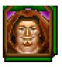 Alagner Alagner.PNG |
Alagner vision updated
npc_alagner · unique
Alagner
EN
ZH EN ref current · 120.0 KB · 2026-07-11 09:13:33
ZH ref current · 101.4 KB · 2026-07-11 09:12:41 |
Current English prompt
Deep, authoritative, mature male voice with a hint of wisdom and subtle cunning; retain character context: Male, 40s-50s, wise sage, knowing and slightly sly voice; visible traits: large man with an almost cunning, erudite aura about him; speaking pace: slow and measured, with deliberate pauses; pitch: low, resonant chest voice Current Chinese prompt
男性，中年，沉穩有權威感，低沉有質感，語速沉穩，帶有智慧與閱歷，語速偏慢，停頓沉穩，音高偏低，胸腔共鳴明顯，角色音色細節：Deep, authoritative, mature male voice with a hint of wisdom and subtle cunning; retain character context: Male, 40s-50s, wise sage, knowing and slightly sly voice; visible traits: large man with an almost cunning, erudite aura about him; speaking pace: slow and measured, with deliberate pauses; pitch: low, resonant chest voice，用標準的普通話朗讀 |
Vision prompt
Deep, authoritative, mature male voice with a hint of wisdom and subtle cunning; retain character context: Male, 40s-50s, wise sage, knowing and slightly sly voice; visible traits: large man with an almost cunning, erudite aura about him; speaking pace: slow and measured, with deliberate pauses; pitch: low, resonant chest voice Previous prompt
Male, 40s-50s, wise sage, knowing and slightly sly voice Traits
large man with an almost cunning, erudite aura about him Temperament
wise sage, knowing and slightly sly voice Model: qwen2.5vl:7b
|
Reference EN text
"Only those souls who have passed on from this life know these things. Seek out the spirit of The Tortured One. Ask him what the answers are to the questions of life and death. When thou dost return with the correct answer, I will believe that thou art sincere in thy quest for knowledge. Only then will I allow thee to borrow the notebook." Reference ZH text
「只有那些離開今生的靈魂才知道這些事。去尋找被折磨者（The Tortured One）的靈魂。問他關於生與死問題的答案是什麼。當你帶著正確答案回來時，我就會相信你是真心實意地在追求知識。只有在那時，我才會允許你借用筆記本。」 |
Amber Amber.gif |
Amber vision updatedchanged
npc_amber · unique
Amber
EN
ZH EN ref current · 61.8 KB · 2026-07-11 09:14:39
ZH ref current · 64.8 KB · 2026-07-11 09:14:06 |
Current English prompt
A cheerful, youthful female with a warm and engaging voice, conveying playfulness and friendliness; retain character context: Female, 20s, cute actress in mouse costume, cheerful playful voice; visible traits: cheerful, playful, mouse costume; speaking pace: brisk, lively, with expressive timing; pitch: medium-high, clear feminine range Current Chinese prompt
女性，20-30歲，溫暖友善，活潑有戲劇感，語氣有活力，語速偏快，節奏活潑且富表情，音高偏高，清晰女性聲線，角色音色細節：A cheerful, youthful female with a warm and engaging voice, conveying playfulness and friendliness; retain character context: Female, 20s, cute actress in mouse costume, cheerful playful voice; visible traits: cheerful, playful, mouse costume; speaking pace: brisk, lively, with expressive timing; pitch: medium-high, clear feminine range，用標準的普通話朗讀 |
Vision prompt
A cheerful, youthful female with a warm and engaging voice, conveying playfulness and friendliness. Previous prompt
Female, 20s, cute actress in mouse costume, cheerful playful voice Traits
cheerful, playful, mouse costume Temperament
warm, friendly, energetic Model: qwen2.5vl:7b
|
Reference EN text
"Canst thou imagine such drivel? I do not believe there ever was a Sherry the Mouse. Who ever heard of a mouse that could talk! Especially these lines! I would rather play a queen. Much more fitting for me, I would say." Reference ZH text
「你能想像這種胡言亂語嗎？我不相信曾經有過一隻叫 Sherry 的老鼠。誰聽說過會說話的老鼠！尤其是這些台詞！我寧願演個女王。我得說，那對我來說合適多了。」 |
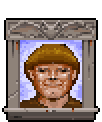 Andrew Andrew.gif |
Andrew vision updated
npc_andrew · unique
Andrew
EN
ZH EN ref current · 62.4 KB · 2026-07-11 09:15:40
ZH ref current · 67.3 KB · 2026-07-11 09:15:12 |
Current English prompt
Warm and confident, with a youthful energy that conveys friendliness and authority; retain character context: Male, 20s-30s, handsome young man, friendly open voice; visible traits: cheerful, handsome young man with friendly demeanor; speaking pace: natural medium tempo, clear and steady; pitch: medium-low, clear masculine range Current Chinese prompt
男性，20-30歲，溫暖友善，語速自然中等，清晰穩定，音高偏低，胸腔共鳴明顯，角色音色細節：Warm and confident, with a youthful energy that conveys friendliness and authority; retain character context: Male, 20s-30s, handsome young man, friendly open voice; visible traits: cheerful, handsome young man with friendly demeanor; speaking pace: natural medium tempo, clear and steady; pitch: medium-low, clear masculine range，用標準的普通話朗讀 |
Vision prompt
Warm and confident, with a youthful energy that conveys friendliness and authority; retain character context: Male, 20s-30s, handsome young man, friendly open voice; visible traits: cheerful, handsome young man with friendly demeanor; speaking pace: natural medium tempo, clear and steady; pitch: medium-low, clear masculine range Previous prompt
Male, 20s-30s, handsome young man, friendly open voice Traits
cheerful, handsome young man with friendly demeanor Temperament
confident yet approachable Model: qwen2.5vl:7b
|
Reference EN text
"I was just a lad when I first saw the old slaughterhouse. The old man who owned it even showed me the storeroom in there once. The door to it is locked. I think Morfin has the key somewhere in his house." Reference ZH text
「我第一次看到那間舊屠宰場時還是個小伙子。以前的老闆還帶我看過裡面的儲藏室一次。那扇門是鎖著的。我想 Morfin 把鑰匙放在他家裡的某個地方。」 |
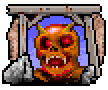 Anmanivas Anmanivas.gif |
Anmanivas vision updated
npc_anmanivas · unique
Anmanivas
EN
ZH EN ref current · 34.6 KB · 2026-07-11 09:16:15
ZH ref current · 37.8 KB · 2026-07-11 09:15:59 |
Current English prompt
Mid-thirties male with a raspy, bony voice. Pace is quick and clipped, reflecting anger and hostility; retain character context: Male, gargoyle, hostile hateful voice; visible traits: bony, scaly skin, sharp claws, glowing red eyes; speaking pace: brisk, lively, with expressive timing; pitch: low, resonant chest voice Current Chinese prompt
男性，中年，低沉有質感，語氣有活力，語速偏快，節奏活潑且富表情，音高偏低，胸腔共鳴明顯，角色音色細節：Mid-thirties male with a raspy, bony voice. Pace is quick and clipped, reflecting anger and hostility; retain character context: Male, gargoyle, hostile hateful voice; visible traits: bony, scaly skin, sharp claws, glowing red eyes; speaking pace: brisk, lively, with expressive timing; pitch: low, resonant chest voice，用標準的普通話朗讀 |
Vision prompt
Mid-thirties male with a raspy, bony voice. Pace is quick and clipped, reflecting anger and hostility; retain character context: Male, gargoyle, hostile hateful voice; visible traits: bony, scaly skin, sharp claws, glowing red eyes; speaking pace: brisk, lively, with expressive timing; pitch: low, resonant chest voice Previous prompt
Male, gargoyle, hostile hateful voice Traits
bony, scaly skin, sharp claws, glowing red eyes Temperament
angry, bitter, hostile Model: qwen2.5vl:7b
|
Reference EN text
Though he glares as he passes, the gargoyle seems much too intent on reaching his destination to bother with you. Reference ZH text
當這隻石像鬼抬頭看你時，憤怒閃過他的臉龐。他迅速站起來，打翻了他的飲料。 |
Ansikart Ansikart.gif |
Ansikart vision updated
npc_ansikart · unique
Ansikart
EN
ZH EN ref current · 64.3 KB · 2026-07-11 09:17:23
ZH ref current · 70.5 KB · 2026-07-11 09:16:49 |
Current English prompt
Male, middle-aged, Deep, resonant voice with a gentle cadence, conveying wisdom and authority; retain character context: Male, gargoyle, peaceful calm presence, serene voice; visible traits: winged gargoyle with a calm demeanor; speaking pace: natural medium tempo, clear and steady; pitch: low, resonant chest voice Current Chinese prompt
男性，中年，溫暖友善，低沉有質感，帶有智慧與閱歷，語速自然中等，清晰穩定，音高偏低，胸腔共鳴明顯，角色音色細節：Male, middle-aged, Deep, resonant voice with a gentle cadence, conveying wisdom and authority; retain character context: Male, gargoyle, peaceful calm presence, serene voice; visible traits: winged gargoyle with a calm demeanor; speaking pace: natural medium tempo, clear and steady; pitch: low, resonant chest voice，用標準的普通話朗讀 |
Vision prompt
Male, middle-aged, Deep, resonant voice with a gentle cadence, conveying wisdom and authority; retain character context: Male, gargoyle, peaceful calm presence, serene voice; visible traits: winged gargoyle with a calm demeanor; speaking pace: natural medium tempo, clear and steady; pitch: low, resonant chest voice Previous prompt
Male, gargoyle, peaceful calm presence, serene voice Traits
winged gargoyle with a calm demeanor Temperament
peaceful and authoritative Model: qwen2.5vl:7b
|
Reference EN text
"To be brother to Anmanivas and to have been raised by the same parent. To hate humans as much as Anmanivas, and," he sighs, "to Avatar allowed no longer to visit the human side." Reference ZH text
這只有翼石像鬼散發著非常平靜的氣息。當他第一眼看到你時，臉上露出了認出你的微笑。「致上問候，聖者 。 |
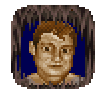 Anton Anton.gif |
Anton vision updated
npc_anton · unique
Anton
EN
ZH EN ref current · 91.9 KB · 2026-07-11 09:18:54
ZH ref current · 75.6 KB · 2026-07-11 09:18:10 |
Current English prompt
A deep, resonant voice, mid-40s, conveying a mix of sullenness and respect, with a slightly sarcastic undertone; retain character context: Male, 30s-40s, sullen man, gloomy and resentful voice; visible traits: sullen expression, possibly with a hint of disapproval or skepticism; speaking pace: natural medium tempo, clear and steady; pitch: low, resonant chest voice Current Chinese prompt
男性，30-40歲，低沉有質感，語速自然中等，清晰穩定，音高偏低，胸腔共鳴明顯，角色音色細節：A deep, resonant voice, mid-40s, conveying a mix of sullenness and respect, with a slightly sarcastic undertone; retain character context: Male, 30s-40s, sullen man, gloomy and resentful voice; visible traits: sullen expression, possibly with a hint of disapproval or skepticism; speaking pace: natural medium tempo, clear and steady; pitch: low, resonant chest voice，用標準的普通話朗讀 |
Vision prompt
A deep, resonant voice, mid-40s, conveying a mix of sullenness and respect, with a slightly sarcastic undertone; retain character context: Male, 30s-40s, sullen man, gloomy and resentful voice; visible traits: sullen expression, possibly with a hint of disapproval or skepticism; speaking pace: natural medium tempo, clear and steady; pitch: low, resonant chest voice Previous prompt
Male, 30s-40s, sullen man, gloomy and resentful voice Traits
sullen expression, possibly with a hint of disapproval or skepticism. Temperament
resentful but respectful, possibly with a touch of sarcasm in his tone. Model: qwen2.5vl:7b
|
Reference EN text
"He is a sage who resides in New Magincia. Perhaps the most learned man in all Britannia! And now," he sighs, "I will no longer have the opportunity to glean knowledge from his voluminous body of wisdom." Reference ZH text
「他是一位居住在 New Magincia 的賢者。或許是全不列顛尼亞最博學的人！而現在，」他嘆了口氣，「我將不再有機會從他浩瀚的智慧寶庫中汲取知識了。」 |
Arcadion ArcadionU7.png |
Arcadion vision updated
npc_arcadion · unique
Arcadion
EN
ZH EN ref current · 53.5 KB · 2026-07-11 09:19:43
ZH ref current · 47.0 KB · 2026-07-11 09:19:18 |
Current English prompt
Ancient male daemon, crystalline voice whispers with cold amusement, smooth yet authoritative; retain character context: Male daemon bound inside a gem, crystalline and resonant voice, smooth but dangerous, speaks with cold amusement; visible traits: crystalline and resonant; speaking pace: slow and measured, with deliberate pauses; pitch: low, resonant chest voice Current Chinese prompt
男性，年長，沉穩有權威感，低沉有質感，語速沉穩，語速偏慢，停頓沉穩，音高偏低，胸腔共鳴明顯，角色音色細節：Ancient male daemon, crystalline voice whispers with cold amusement, smooth yet authoritative; retain character context: Male daemon bound inside a gem, crystalline and resonant voice, smooth but dangerous, speaks with cold amusement; visible traits: crystalline and resonant; speaking pace: slow and measured, with deliberate pauses; pitch: low, resonant chest voice，用標準的普通話朗讀 |
Vision prompt
Ancient male daemon, crystalline voice whispers with cold amusement, smooth yet authoritative; retain character context: Male daemon bound inside a gem, crystalline and resonant voice, smooth but dangerous, speaks with cold amusement; visible traits: crystalline and resonant; speaking pace: slow and measured, with deliberate pauses; pitch: low, resonant chest voice Previous prompt
Male daemon bound inside a gem, crystalline and resonant voice, smooth but dangerous, speaks with cold amusement Traits
crystalline and resonant Temperament
cold amusement Model: qwen2.5vl:7b
|
Reference EN text
Arcadion's voice whispers to you like ripple in still pond, "Fear not, my master. I have some knowledge of these matters." Reference ZH text
Arcadion 的聲音如靜止池塘中的漣漪般向你低語：「別怕，我的主人。我對這些事情略知一二。」 |
Aurvidlem Aurvidlem.gif |
Aurvidlem vision updated
npc_aurvidlem · unique
Aurvidlem
EN
ZH EN ref current · 73.5 KB · 2026-07-11 09:20:53
ZH ref current · 70.9 KB · 2026-07-11 09:20:18 |
Current English prompt
Middle-aged male with a gruff yet commanding tone, delivering dialogue with a formal and slightly displeased demeanor; retain character context: Male, gargoyle, displeased formal voice; visible traits: sour expression, formal attire; speaking pace: natural medium tempo, clear and steady; pitch: low, resonant chest voice Current Chinese prompt
男性，中年，沉穩有權威感，低沉有質感，語速自然中等，清晰穩定，音高偏低，胸腔共鳴明顯，角色音色細節：Middle-aged male with a gruff yet commanding tone, delivering dialogue with a formal and slightly displeased demeanor; retain character context: Male, gargoyle, displeased formal voice; visible traits: sour expression, formal attire; speaking pace: natural medium tempo, clear and steady; pitch: low, resonant chest voice，用標準的普通話朗讀 |
Vision prompt
Middle-aged male with a gruff yet commanding tone, delivering dialogue with a formal and slightly displeased demeanor; retain character context: Male, gargoyle, displeased formal voice; visible traits: sour expression, formal attire; speaking pace: natural medium tempo, clear and steady; pitch: low, resonant chest voice Previous prompt
Male, gargoyle, displeased formal voice Traits
sour expression, formal attire Temperament
displeased but authoritative Model: qwen2.5vl:7b
|
Reference EN text
"To know since change in Wis-Sur, Ansikart gained too much respect. To be sure that I have studied more and would be a wiser and better leader here. To be dissatisfied with Ansikart as choice." Reference ZH text
「知道自從 Wis-Sur 改變後， Ansikart 獲得了太多的尊重。確信我學得更多，在這裡會是一位更聰明、更好的領袖。對 Ansikart 成為人選感到不滿。」 |
Balayna BalaynaU7.png |
Balayna vision updated
npc_balayna · unique
Balayna
EN
ZH EN ref current · 103.0 KB · 2026-07-11 13:11:07
ZH ref current · 92.7 KB · 2026-07-11 13:10:20 |
Current English prompt
Young serious woman speaking in a hushed conspiratorial voice, tense and urgent, as if sharing a dangerous secret. Keep volume controlled and intimate. speaking pace: quick low-volume phrases with tight pauses; pitch: lower feminine range, focused and secretive Current Chinese prompt
女性，二三十歲，嚴肅而緊張，用壓低的密謀口吻說話，像在透露危險秘密。音量克制親近，不要舞台女演員感。語速偏快但壓低聲音，停頓緊，音高為偏低女性聲線，專注而秘密，用標準的普通話朗讀 |
Vision prompt
Young serious woman speaking in a hushed conspiratorial voice, tense and urgent, as if sharing a dangerous secret. Keep volume controlled and intimate. speaking pace: quick low-volume phrases with tight pauses; pitch: lower feminine range, focused and secretive Previous prompt
Female, 20s-30s, serious woman, hushed conspiratorial voice Traits
serious, authoritative Temperament
conspiratorial, urgent Model: qwen2.5vl:7b
|
Reference EN text
"What's this?" she asks, taking the vial from you. She opens it up and sniffs. "Very good quality. I wonder why he..." she clutches her throat and gasps. You notice a wispy smoke rise from the top of the vial now spilling out of her hands. Choking, she falls to the ground, and dies. Reference ZH text
「我忙於職責，在這裡認識的人很少。酒保 Phearcy 是社區的傑出成員，農夫 Tolemac 也是。Tolemac 的朋友 Morz 雖然害羞，但口碑很好。還有，Morz 有個兄弟。」她抬起頭若有所思。「或者他是 Tolemac 的兄弟？ |
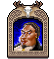 Batlin Batlin.gif |
Batlin vision updated
npc_batlin · unique
Batlin
EN
ZH EN ref current · 104.7 KB · 2026-07-11 09:25:45
ZH ref current · 87.9 KB · 2026-07-11 09:24:56 |
Current English prompt
Deep, gravelly voice with a hint of age, conveying authority and a sense of finality; retain character context: Male, 40s, charismatic and persuasive cult leader, smooth yet intense, speaks with conviction and subtle menace; visible traits: weathered, stern, authoritative; speaking pace: uneven and slightly tense, with occasional quick phrases; pitch: low, resonant chest voice Current Chinese prompt
男性，中年，沉穩有權威感，低沉有質感，語氣有活力，語速偏快，節奏活潑且富表情，音高偏低，胸腔共鳴明顯，角色音色細節：Deep, gravelly voice with a hint of age, conveying authority and a sense of finality; retain character context: Male, 40s, charismatic and persuasive cult leader, smooth yet intense, speaks with conviction and subtle menace; visible traits: weathered, stern, authoritative; speaking pace: uneven and slightly tense, with occasional quick phrases; pitch: low, resonant chest voice，用標準的普通話朗讀 |
Vision prompt
Deep, gravelly voice with a hint of age, conveying authority and a sense of finality; retain character context: Male, 40s, charismatic and persuasive cult leader, smooth yet intense, speaks with conviction and subtle menace; visible traits: weathered, stern, authoritative; speaking pace: uneven and slightly tense, with occasional quick phrases; pitch: low, resonant chest voice Previous prompt
Male, 40s, charismatic and persuasive cult leader, smooth yet intense, speaks with conviction and subtle menace Traits
weathered, stern, authoritative Temperament
coldly determined, commanding Model: qwen2.5vl:7b
|
Reference EN text
Batlin looks at you and his gaze returns to the Armageddon winter storm. "Many years ago, Avatar, I went to Skara Brae, the ghost city. The way the world is now reminds me of that dead place. In Skara Brae I had a spiritual experience so profound that I have never spoken of to another soul. I would like to share that experience with thee now, Avatar. Reference ZH text
Batlin 以冰冷的無奈看著 Hook 死亡。當他轉向你時，時間似乎變慢了。"這場戰鬥還沒結束，聖者。你以為自己是不死的嗎？守護者遠比你想像的更強大。回到你那珍貴的地球去休息吧。 |
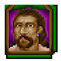 Battles Battles.gif |
Battles vision updated
npc_battles · unique
Battles
EN
ZH EN ref current · 82.1 KB · 2026-07-11 09:26:49
ZH ref current · 49.9 KB · 2026-07-11 09:26:10 |
Current English prompt
Deep, gravelly voice with a hint of sarcasm and a steady pace, conveying a sense of guardedness and suspicion; retain character context: Male, 30s-40s, shifty suspicious man, cunning guarded voice; visible traits: shifty eyes, slightly crouched posture; speaking pace: natural medium tempo, clear and steady; pitch: low, resonant chest voice Current Chinese prompt
男性，30-40歲，低沉有質感，語速自然中等，清晰穩定，音高偏低，胸腔共鳴明顯，角色音色細節：Deep, gravelly voice with a hint of sarcasm and a steady pace, conveying a sense of guardedness and suspicion; retain character context: Male, 30s-40s, shifty suspicious man, cunning guarded voice; visible traits: shifty eyes, slightly crouched posture; speaking pace: natural medium tempo, clear and steady; pitch: low, resonant chest voice，用標準的普通話朗讀 |
Vision prompt
Deep, gravelly voice with a hint of sarcasm and a steady pace, conveying a sense of guardedness and suspicion; retain character context: Male, 30s-40s, shifty suspicious man, cunning guarded voice; visible traits: shifty eyes, slightly crouched posture; speaking pace: natural medium tempo, clear and steady; pitch: low, resonant chest voice Previous prompt
Male, 30s-40s, shifty suspicious man, cunning guarded voice Traits
shifty eyes, slightly crouched posture Temperament
guarded, suspicious Model: qwen2.5vl:7b
|
Reference EN text
"The casino in Buccaneer's Den is called the House of Games and it the most fabulous place I have ever seen in me life. I shall never forget the first time Robin took me there. He walked away with a hundred gold pieces for less than an hour's work!" Reference ZH text
你面前的男人用狡詐的眼神打量著你。他微微彎著腰，彷彿隨時準備對周圍的世界發動攻擊。 |
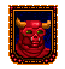 Betra Betra.gif |
Betra vision updated
npc_betra · unique
Betra
EN
ZH EN ref current · 94.6 KB · 2026-07-11 13:12:24
ZH ref current · 79.7 KB · 2026-07-11 13:11:46 |
Current English prompt
Male gargoyle, formal and ceremonial, with resonant non-human dignity and careful enunciation. Welcoming but ritualized, not a young performer. speaking pace: measured and formal; pitch: deep gravelly gargoyle baritone with stone-like resonance Current Chinese prompt
男性石像鬼，正式且有儀式感，聲音深沉帶非人類尊嚴，咬字謹慎。雖友善但像典禮致詞，不要年輕表演者感。語速中慢而正式，音高低沉，帶砂礫和石質共鳴，用標準的普通話朗讀 |
Vision prompt
Male gargoyle, formal and ceremonial, with resonant non-human dignity and careful enunciation. Welcoming but ritualized, not a young performer. speaking pace: measured and formal; pitch: deep gravelly gargoyle baritone with stone-like resonance Previous prompt
Male, gargoyle, welcoming wing-flap, friendly formal voice Traits
gargoyle with sweeping hand gesture Temperament
welcoming yet authoritative Model: qwen2.5vl:7b
|
Reference EN text
"To join The Fellowship?" He shakes his head. "To be an organization not for me. To be quite happy as I am, devoted to the altars. To believe Quaeven to have been misled by the others in The Fellowship. To not trust them, especially Sarpling." Reference ZH text
「加入友誼會？」他搖搖頭。「這不是適合我的組織。我現在這樣很快樂，奉獻於祭壇。相信 Quaeven 是被友誼會的其他人誤導了。不信任他們，尤其是 Sarpling 。」 |
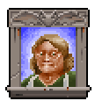 Beverlea Beverlea.gif |
Beverlea vision updated
npc_beverlea · unique
Beverlea
EN
ZH EN ref current · 94.6 KB · 2026-07-11 09:29:37
ZH ref current · 39.1 KB · 2026-07-11 09:28:29 |
Current English prompt
A sweet, elderly woman with a gentle yet authoritative tone, slightly slower pace, and a touch of warmth in her voice; retain character context: Female, elderly, sweet grandmother, warm gentle voice, slightly hard of hearing; visible traits: elderly with a gentle smile, possibly wearing glasses for vision issues; speaking pace: slow and measured, with deliberate pauses; pitch: low, resonant chest voice Current Chinese prompt
女性，年長，溫暖友善，沉穩有權威感，低沉有質感，語速沉穩，語速偏慢，停頓沉穩，音高偏低，胸腔共鳴明顯，角色音色細節：A sweet, elderly woman with a gentle yet authoritative tone, slightly slower pace, and a touch of warmth in her voice; retain character context: Female, elderly, sweet grandmother, warm gentle voice, slightly hard of hearing; visible traits: elderly with a gentle smile, possibly wearing glasses for vision issues; speaking pace: slow and measured, with deliberate pauses; pitch: low, resonant chest voice，用標準的普通話朗讀 |
Vision prompt
A sweet, elderly woman with a gentle yet authoritative tone, slightly slower pace, and a touch of warmth in her voice; retain character context: Female, elderly, sweet grandmother, warm gentle voice, slightly hard of hearing; visible traits: elderly with a gentle smile, possibly wearing glasses for vision issues; speaking pace: slow and measured, with deliberate pauses; pitch: low, resonant chest voice Previous prompt
Female, elderly, sweet grandmother, warm gentle voice, slightly hard of hearing Traits
elderly with a gentle smile, possibly wearing glasses for vision issues. Temperament
sweet and warm, with a hint of authority in her voice due to her role as an NPC. Model: qwen2.5vl:7b
|
Reference EN text
"Let me see... There is a cradle for sale. A rocking horse. A bell. An hourglass. A spittoon. A lute. A sextant... Since I am moving a bit more slowly these days, I let my customers help themselves and take what they have bought. Providing they pay me first, of course. I do trust folks to pay me the correct amount. I am nearly blind, I am afraid." Reference ZH text
你看到一位老婦人，她對你露出祖母般甜美的微笑。你可以立刻看出她的視力很差。 |
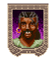 Blacktooth Blacktooth.gif |
Blacktooth vision updated
npc_blacktooth · unique
Blacktooth
EN
ZH EN ref current · 99.2 KB · 2026-07-11 09:31:08
ZH ref current · 76.0 KB · 2026-07-11 09:30:18 |
Current English prompt
Deep and gravelly, conveying authority and suspicion; pace is steady but deliberate; retain character context: Male, 40s, suspicious pirate, rough threatening voice, chewing tobacco; visible traits: tall, middle-aged pirate with a suspicious expression; speaking pace: slow and measured, with deliberate pauses; pitch: low, resonant chest voice Current Chinese prompt
男性，中年，低沉有質感，語速沉穩，語速偏慢，停頓沉穩，音高偏低，胸腔共鳴明顯，角色音色細節：Deep and gravelly, conveying authority and suspicion; pace is steady but deliberate; retain character context: Male, 40s, suspicious pirate, rough threatening voice, chewing tobacco; visible traits: tall, middle-aged pirate with a suspicious expression; speaking pace: slow and measured, with deliberate pauses; pitch: low, resonant chest voice，用標準的普通話朗讀 |
Vision prompt
Deep and gravelly, conveying authority and suspicion; pace is steady but deliberate; retain character context: Male, 40s, suspicious pirate, rough threatening voice, chewing tobacco; visible traits: tall, middle-aged pirate with a suspicious expression; speaking pace: slow and measured, with deliberate pauses; pitch: low, resonant chest voice Previous prompt
Male, 40s, suspicious pirate, rough threatening voice, chewing tobacco Traits
tall, middle-aged pirate with a suspicious expression Temperament
menacingly authoritative Model: qwen2.5vl:7b
|
Reference EN text
"He has abandoned all of his pirate ways! He is a bloody saint now, and whenever he sees me he tries to convince me to join The Fellowship. I avoid him at all costs now. I cannot stand to see him this way. It burns my blood!" Reference ZH text
聖者我不信任他們。我認為他們都在隱瞞什麼。我認為他們都是騙子。拿我的老朋友 Mole 來說吧。嗯，我的前老朋友 Mole 。自從他加入他們之後，他改變了很多。」 |
Bollux BolluxU7.png |
Bollux vision updated
npc_bollux · unique
Bollux
EN
ZH EN ref current · 95.1 KB · 2026-07-11 09:32:25
ZH ref current · 62.4 KB · 2026-07-11 09:31:38 |
Current English prompt
Male, elderly, A deep, resonant voice with a gentle cadence and a touch of wisdom, conveying both authority and calmness; retain character context: Male, gargoyle, deep gravelly voice, earnest and emotional, speaks with a heavy resonant tone; visible traits: Deep-set eyes, weathered skin, stone-like appearance; speaking pace: slow and measured, with deliberate pauses; pitch: low, resonant chest voice Current Chinese prompt
男性，年長，溫暖友善，低沉有質感，語速沉穩，帶有智慧與閱歷，語速偏慢，停頓沉穩，音高偏低，胸腔共鳴明顯，角色音色細節：Male, elderly, A deep, resonant voice with a gentle cadence and a touch of wisdom, conveying both authority and calmness; retain character context: Male, gargoyle, deep gravelly voice, earnest and emotional, speaks with a heavy resonant tone; visible traits: Deep-set eyes, weathered skin, stone-like appearance; speaking pace: slow and measured, with deliberate pauses; pitch: low, resonant chest voice，用標準的普通話朗讀 |
Vision prompt
Male, elderly, A deep, resonant voice with a gentle cadence and a touch of wisdom, conveying both authority and calmness; retain character context: Male, gargoyle, deep gravelly voice, earnest and emotional, speaks with a heavy resonant tone; visible traits: Deep-set eyes, weathered skin, stone-like appearance; speaking pace: slow and measured, with deliberate pauses; pitch: low, resonant chest voice Previous prompt
Male, gargoyle, deep gravelly voice, earnest and emotional, speaks with a heavy resonant tone Traits
Deep-set eyes, weathered skin, stone-like appearance Temperament
Serene yet authoritative Model: qwen2.5vl:7b
|
Reference EN text
"Surely thou hast heard of the Shrines of the Three Principles: Truth, Love, and Courage! We golems were fabricated to protect the Shrines, for only an Avatar -- -the- Avatar -- may utilize the awesome power they can convey." Reference ZH text
「可憐的 Bollux 並不知道 Castambre 之石。他的犧牲也許是不必要的。你碰巧見過 MacCuth 寫的《Castambre 之石》嗎？」 |
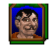 Boris Boris.gif |
Boris vision updated
npc_boris · unique
Boris
EN
ZH EN ref current · 111.0 KB · 2026-07-11 09:34:10
ZH ref current · 100.0 KB · 2026-07-11 09:33:18 |
Current English prompt
Deep, oily voice with a suggestive tone and an unpleasant chuckle, conveying authority and lechery; retain character context: Male, 40s, lecherous innkeeper, oily and suggestive voice, unpleasant chuckle; speaking pace: natural medium tempo, clear and steady; pitch: low, resonant chest voice Current Chinese prompt
男性，中年，低沉有質感，語速自然中等，清晰穩定，音高偏低，胸腔共鳴明顯，角色音色細節：Deep, oily voice with a suggestive tone and an unpleasant chuckle, conveying authority and lechery; retain character context: Male, 40s, lecherous innkeeper, oily and suggestive voice, unpleasant chuckle; speaking pace: natural medium tempo, clear and steady; pitch: low, resonant chest voice，用標準的普通話朗讀 |
Vision prompt
Deep, oily voice with a suggestive tone and an unpleasant chuckle, conveying authority and lechery; retain character context: Male, 40s, lecherous innkeeper, oily and suggestive voice, unpleasant chuckle; speaking pace: natural medium tempo, clear and steady; pitch: low, resonant chest voice Previous prompt
Male, 40s, lecherous innkeeper, oily and suggestive voice, unpleasant chuckle Traits
Temperament
lecherous innkeeper with an unpleasant chuckle Model: qwen2.5vl:7b
|
Reference EN text
You tell Boris what you had heard from the pirate, Battles. He breaks out into a cold sweat. "Thou hast seen through my deception. I shall hand it over to thee." He opens a secret panel from behind the bar and looks inside. When he looks back to you his face has lost all color. "The locket is gone! I swear to thee, I know not where it is!" Reference ZH text
你告訴 Boris 你從海盜 Battles 那裡聽到的事。他冒出一身冷汗。「你看穿了我的謊言。我這就把它交給你。」他打開吧檯後面的一個秘密暗格，往裡面看去。當他轉頭看你時，臉色蒼白。「吊飾盒不見了！我向你發誓，我不知道它在哪裡！」 |
Brion BrionU7.png |
Brion vision updated
npc_brion · unique
Brion
EN
ZH EN ref current · 107.4 KB · 2026-07-11 13:44:52
ZH ref current · 97.1 KB · 2026-07-11 13:44:03 |
Current English prompt
Mature scholarly man, friendly and precise, with a clean educated voice and calm curiosity. Keep him bright, articulate, and approachable. speaking pace: natural medium tempo, explanatory and smooth; pitch: medium to medium-high male range, clear and unforced Current Chinese prompt
男性，三四十歲的學者，友善、精確、溫和好奇，聲音乾淨有教養，明亮而親近。不要危險感，不要低沉權威。語速自然中等，像耐心講解，音高為中等到略高男性聲線，清楚不壓低，用標準的普通話朗讀 |
Vision prompt
Mature scholarly man, friendly and precise, with a clean educated voice and calm curiosity. Keep him bright, articulate, and approachable. speaking pace: natural medium tempo, explanatory and smooth; pitch: medium to medium-high male range, clear and unforced Previous prompt
Male, 30s-40s, scholarly man, calm intellectual voice Traits
friendly expression, scholarly appearance Temperament
calm, authoritative Model: qwen2.5vl:7b
|
Reference EN text
He smiles proudly. "I thought thou wouldst. However, there is one problem. I still need one more crystal to completely finish the viewer. If thou wouldst visit the tavern, thou mightest find one of the merchants or travellers there who sometimes provide me with crystals. If thou canst find another crystal, I will be able to give thee the completed viewer." Reference ZH text
他自豪地笑了。「我想你會想要的。但是，有一個問題。我還需要一顆水晶才能完全完成檢視器。如果你去酒館，你可能會在那裡找到一位有時會提供給我水晶的商人或旅行者。如果你能找到另一顆水晶，我就能把完成的檢視器交給你。」 |
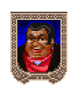 Budo BudoU7.gif |
Budo vision updated
npc_budo · unique
Budo
EN
ZH EN ref current · 96.9 KB · 2026-07-11 09:37:14
ZH ref current · 83.0 KB · 2026-07-11 09:36:33 |
Current English prompt
Warm, jovial, and slightlynasal voice, conveying friendliness and authority; retain character context: Male, 40s, fat happy merchant, jolly booming voice; visible traits: Fat, cheerful-looking merchant with a jolly demeanor; speaking pace: natural medium tempo, clear and steady; pitch: medium-low, clear masculine range Current Chinese prompt
男性，中年，溫暖友善，語速自然中等，清晰穩定，音高偏低，胸腔共鳴明顯，角色音色細節：Warm, jovial, and slightlynasal voice, conveying friendliness and authority; retain character context: Male, 40s, fat happy merchant, jolly booming voice; visible traits: Fat, cheerful-looking merchant with a jolly demeanor; speaking pace: natural medium tempo, clear and steady; pitch: medium-low, clear masculine range，用標準的普通話朗讀 |
Vision prompt
Warm, jovial, and slightlynasal voice, conveying friendliness and authority; retain character context: Male, 40s, fat happy merchant, jolly booming voice; visible traits: Fat, cheerful-looking merchant with a jolly demeanor; speaking pace: natural medium tempo, clear and steady; pitch: medium-low, clear masculine range Previous prompt
Male, 40s, fat happy merchant, jolly booming voice Traits
Fat, cheerful-looking merchant with a jolly demeanor. Temperament
Friendly and approachable, with a warm and inviting tone. Model: qwen2.5vl:7b
|
Reference EN text
"There was a period shortly after my father died, just as I had inherited the shoppe, when business was poor. There was a danger that I would not be able to keep the shoppe open. But The Fellowship convinced me that I should join them. I proved my worthiness and The Fellowship helped me financially." Reference ZH text
「我的曾祖父將店傳給他的兒子，就這樣一路傳到我。我們天生就是商人！這就是為什麼我知道你為什麼來 Budo 商行！你想成為偉大的 Budo 傳奇的一部分！你需要買點東西！」 |
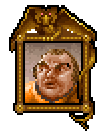 Burnside BurnsideU7.png |
Burnside vision updated
npc_burnside · unique
Burnside
EN
ZH EN ref current · 100.2 KB · 2026-07-11 09:38:50
ZH ref current · 96.3 KB · 2026-07-11 09:38:01 |
Current English prompt
A formal, elderly man with a slightly strained but determined tone, speaking in a measured and authoritative manner; retain character context: Male, elderly, dignified aged gentleman, formal slightly strained voice; visible traits: formal attire, slightly strained expression; speaking pace: slow and measured, with deliberate pauses; pitch: medium-low, clear masculine range Current Chinese prompt
男性，年長，溫暖友善，沉穩有權威感，語速沉穩，語速偏慢，停頓沉穩，音高偏低，胸腔共鳴明顯，角色音色細節：A formal, elderly man with a slightly strained but determined tone, speaking in a measured and authoritative manner; retain character context: Male, elderly, dignified aged gentleman, formal slightly strained voice; visible traits: formal attire, slightly strained expression; speaking pace: slow and measured, with deliberate pauses; pitch: medium-low, clear masculine range，用標準的普通話朗讀 |
Vision prompt
A formal, elderly man with a slightly strained but determined tone, speaking in a measured and authoritative manner; retain character context: Male, elderly, dignified aged gentleman, formal slightly strained voice; visible traits: formal attire, slightly strained expression; speaking pace: slow and measured, with deliberate pauses; pitch: medium-low, clear masculine range Previous prompt
Male, elderly, dignified aged gentleman, formal slightly strained voice Traits
formal attire, slightly strained expression Temperament
determined yet polite Model: qwen2.5vl:7b
|
Reference EN text
"As Frederico and Tania were not actually residents of Minoc there is little I can do as Mayor other than increase the town guard. The investigation falls somewhat beyond my jurisdiction. It would appear the killer or killers were from out of town and are probably long gone by now. Thank goodness." Reference ZH text
「由於 Frederico 和 Tania 實際上並非 Minoc 的居民，身為鎮長除了增加鎮守衛之外，我能做的不多。這項調查多少超出了我的管轄範圍。看來兇手是外地人，而且現在可能早就逃之夭夭了。謝天謝地。」 |
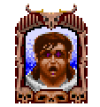 Caine Caine.PNG |
Caine vision updated
npc_caine · unique
Caine
EN
ZH EN ref current · 105.4 KB · 2026-07-11 09:40:23
ZH ref current · 77.0 KB · 2026-07-11 09:39:31 |
Current English prompt
Mid-thirties male, ghostly voice, hollow and trembling, slow and measured, conveying deep pain and suffering; retain character context: Male, ghost, pained and hollow voice, suffering spirit, weak and trembling; visible traits: ghostly man with pained expression; speaking pace: slow and measured, with deliberate pauses; pitch: low, resonant chest voice Current Chinese prompt
男性，中年，低沉有質感，語速沉穩，語速偏慢，停頓沉穩，音高偏低，胸腔共鳴明顯，角色音色細節：Mid-thirties male, ghostly voice, hollow and trembling, slow and measured, conveying deep pain and suffering; retain character context: Male, ghost, pained and hollow voice, suffering spirit, weak and trembling; visible traits: ghostly man with pained expression; speaking pace: slow and measured, with deliberate pauses; pitch: low, resonant chest voice，用標準的普通話朗讀 |
Vision prompt
Mid-thirties male, ghostly voice, hollow and trembling, slow and measured, conveying deep pain and suffering; retain character context: Male, ghost, pained and hollow voice, suffering spirit, weak and trembling; visible traits: ghostly man with pained expression; speaking pace: slow and measured, with deliberate pauses; pitch: low, resonant chest voice Previous prompt
Male, ghost, pained and hollow voice, suffering spirit, weak and trembling Traits
ghostly man with pained expression Temperament
suffering spirit Model: qwen2.5vl:7b
|
Reference EN text
"First thou wilt need the three potions. Then, thou must place each one just below a connecting tube -- the order matters not. Take an empty vial -- I should have one here in my lab -- and set it below the nozzle. Then, turn on the burner. After but a few minutes, the mixture will form, and the filled vial will be ready for thee." Reference ZH text
這名沒有實體的男子凝視著你身後，似乎穿透了建築物的邊界，或許甚至是穿透了這個世界。然後，他突然發抖，彷彿充滿了痛苦。 |
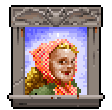 Camille Camille.gif |
Camille vision updated
npc_camille · unique
Camille
EN
ZH EN ref current · 33.5 KB · 2026-07-11 09:41:13
ZH ref current · 68.2 KB · 2026-07-11 09:40:57 |
Current English prompt
Warm, concerned female voice, steady pace, gentle yet authoritative tone, conveying urgency in pleas; retain character context: Female, 40s, worried mother, pleading and desperate voice, tearful; visible traits: farm woman with dirt-covered hands; speaking pace: uneven and slightly tense, with occasional quick phrases; pitch: medium-high, clear feminine range Current Chinese prompt
女性，中年，溫暖友善，沉穩有權威感，語氣有活力，帶有憂慮感，語速偏快，節奏活潑且富表情，音高偏高，清晰女性聲線，角色音色細節：Warm, concerned female voice, steady pace, gentle yet authoritative tone, conveying urgency in pleas; retain character context: Female, 40s, worried mother, pleading and desperate voice, tearful; visible traits: farm woman with dirt-covered hands; speaking pace: uneven and slightly tense, with occasional quick phrases; pitch: medium-high, clear feminine range，用標準的普通話朗讀 |
Vision prompt
Warm, concerned female voice, steady pace, gentle yet authoritative tone, conveying urgency in pleas; retain character context: Female, 40s, worried mother, pleading and desperate voice, tearful; visible traits: farm woman with dirt-covered hands; speaking pace: uneven and slightly tense, with occasional quick phrases; pitch: medium-high, clear feminine range Previous prompt
Female, 40s, worried mother, pleading and desperate voice, tearful Traits
farm woman with dirt-covered hands Temperament
concerned and determined Model: qwen2.5vl:7b
|
Reference EN text
You see a farm woman. She rubs her hands, which are covered with dirt and lines drawn by toil. Reference ZH text
聖者！我的兒子 Tobias 被誣陷了！他不是小偷！我無法相信在他身上發現了一瓶毒液。我真的相信那是被栽贓的！拜託——我求求你！請還我兒子清白。他沒有做錯任何事！ |
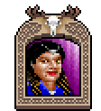 Candice Candice.gif |
Candice vision updated
npc_candice · unique
Candice
EN
ZH EN ref current · 99.0 KB · 2026-07-11 09:42:30
ZH ref current · 53.9 KB · 2026-07-11 09:41:40 |
Current English prompt
Warm, slightly concerned female voice with a steady pace and authoritative undertone; retain character context: Female, 30s-40s, concerned fellowship member, worried voice; speaking pace: uneven and slightly tense, with occasional quick phrases; pitch: low, resonant chest voice Current Chinese prompt
女性，30-40歲，溫暖友善，沉穩有權威感，低沉有質感，語氣有活力，語速偏快，節奏活潑且富表情，音高偏低，胸腔共鳴明顯，角色音色細節：Warm, slightly concerned female voice with a steady pace and authoritative undertone; retain character context: Female, 30s-40s, concerned fellowship member, worried voice; speaking pace: uneven and slightly tense, with occasional quick phrases; pitch: low, resonant chest voice，用標準的普通話朗讀 |
Vision prompt
Warm, slightly concerned female voice with a steady pace and authoritative undertone; retain character context: Female, 30s-40s, concerned fellowship member, worried voice; speaking pace: uneven and slightly tense, with occasional quick phrases; pitch: low, resonant chest voice Previous prompt
Female, 30s-40s, concerned fellowship member, worried voice Traits
Temperament
concerned but composed Model: qwen2.5vl:7b
|
Reference EN text
Iolo whispers to you, "Er, Avatar, thou dost know that I do not condone stealing. But, er, I do believe these stones may be useful to us. Perhaps we should come back later when the museum is closed, if thou dost know what I mean? After all, these items technically belong to thee!" Reference ZH text
「那裡有早期 Britannia 的遺物，甚至還有黑暗三時期 (Three Ages of Darkness) 的遺物——那是 Britannia 還被稱為 Sosaria 時的事。」 |
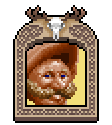 Carrocio Carrocio.gif |
Carrocio vision updated
npc_carrocio · unique
Carrocio
EN
ZH EN ref current · 39.4 KB · 2026-07-11 09:43:08
ZH ref current · 41.2 KB · 2026-07-11 09:42:49 |
Current English prompt
Warm, authoritative, and lively; conveys charm and slight mischief in speech; retain character context: Male, 30s-40s, fast-talking con artist, lively and theatrical, slightly sly and charming; visible traits: cheerful and outgoing with a flamboyant appearance; speaking pace: brisk, lively, with expressive timing; pitch: medium-low, clear masculine range Current Chinese prompt
男性，30-40歲，溫暖友善，活潑有戲劇感，沉穩有權威感，語氣有活力，語速偏快，節奏活潑且富表情，音高偏低，胸腔共鳴明顯，角色音色細節：Warm, authoritative, and lively; conveys charm and slight mischief in speech; retain character context: Male, 30s-40s, fast-talking con artist, lively and theatrical, slightly sly and charming; visible traits: cheerful and outgoing with a flamboyant appearance; speaking pace: brisk, lively, with expressive timing; pitch: medium-low, clear masculine range，用標準的普通話朗讀 |
Vision prompt
Warm, authoritative, and lively; conveys charm and slight mischief in speech; retain character context: Male, 30s-40s, fast-talking con artist, lively and theatrical, slightly sly and charming; visible traits: cheerful and outgoing with a flamboyant appearance; speaking pace: brisk, lively, with expressive timing; pitch: medium-low, clear masculine range Previous prompt
Male, 30s-40s, fast-talking con artist, lively and theatrical, slightly sly and charming Traits
cheerful and outgoing with a flamboyant appearance Temperament
charming and slightly sly, fast-talking con artist Model: qwen2.5vl:7b
|
Reference EN text
"Now is the time for the young and the old to dig in their pockets and give up the gold. * Dost thou wish to donate a gold piece?" Reference ZH text
現在正是時候！無論老少，都應該掏出錢包，將財富奉獻出來。\* 閣下是否願意捐獻一枚金幣？ |
Catherine Catherine.gif 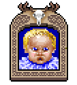 Kristy Kristy.gif |
child_female vision updatedchanged
group_child_female · group
Catherine, Kristy
EN
ZH EN ref current · 71.2 KB · 2026-07-11 08:49:53
ZH ref current · 51.7 KB · 2026-07-11 08:49:27 |
Current English prompt
A young girl with a high-pitched, innocent voice, speaking in Mandarin with a playful and curious tone; retain character context: Female, child, innocent little girl voice, high-pitched playful and clearly feminine, speaks in standard Mandarin; visible traits: innocent, playful, expressive eyes; speaking pace: brisk, lively, with expressive timing; pitch: high, bright childlike range Current Chinese prompt
女性，小孩，活潑有戲劇感，語氣有活力，語速偏快，節奏活潑且富表情，音高偏高，明亮童聲，角色音色細節：A young girl with a high-pitched, innocent voice, speaking in Mandarin with a playful and curious tone; retain character context: Female, child, innocent little girl voice, high-pitched playful and clearly feminine, speaks in standard Mandarin; visible traits: innocent, playful, expressive eyes; speaking pace: brisk, lively, with expressive timing; pitch: high, bright childlike range，用標準的普通話朗讀 |
Vision prompt
A young girl with a high-pitched, innocent voice, speaking in Mandarin with a playful and curious tone. Previous prompt
Female, child, innocent little girl voice, high-pitched playful and clearly feminine, speaks in standard Mandarin Traits
innocent, playful, expressive eyes Temperament
curious, enthusiastic, slightly shy Model: qwen2.5vl:7b
|
Reference EN text
Kristy is more than happy to do so. "A-B-C-D-E-F-G! H-I-K-M-M-M-O-P! Q-T-W-Y-X-Z!" She is proud of her song, although she didn't get it quite right. Reference ZH text
「Kristy ，和 Nicholas 一樣，是我們的孤兒之一。她是被一位大法師議會（Great Council）成員在 Paws 的一間廢棄房屋裡發現的。」 |
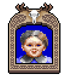 Max MaxU7.png Nicholas Nicholas.gif |
child_male vision updatedchanged
group_child_male · group
Max, Nicholas
EN
ZH EN ref current · 82.6 KB · 2026-07-11 08:50:44
ZH ref current · 39.5 KB · 2026-07-11 08:50:08 |
Current English prompt
A young, energetic boy with a high-pitched voice, speaking in Mandarin with enthusiasm and a hint of innocence; retain character context: Male, child, energetic little boy voice, high-pitched playful and clearly masculine, speaks in standard Mandarin; visible traits: energetic toddler with bright eyes and a playful expression; speaking pace: brisk, lively, with expressive timing; pitch: high, bright childlike range Current Chinese prompt
男性，小孩，活潑有戲劇感，語氣有活力，語速偏快，節奏活潑且富表情，音高偏高，明亮童聲，角色音色細節：A young, energetic boy with a high-pitched voice, speaking in Mandarin with enthusiasm and a hint of innocence; retain character context: Male, child, energetic little boy voice, high-pitched playful and clearly masculine, speaks in standard Mandarin; visible traits: energetic toddler with bright eyes and a playful expression; speaking pace: brisk, lively, with expressive timing; pitch: high, bright childlike range，用標準的普通話朗讀 |
Vision prompt
A young, energetic boy with a high-pitched voice, speaking in Mandarin with enthusiasm and a hint of innocence. Previous prompt
Male, child, energetic little boy voice, high-pitched playful and clearly masculine, speaks in standard Mandarin Traits
energetic toddler with bright eyes and a playful expression Temperament
lively and enthusiastic Model: qwen2.5vl:7b
|
Reference EN text
Max stands upright and bellows, "Old Lord British had a farm, -e-i-e-i-o-! On this farm he had a drake, -e-i-e-i-o-! With a -roar- -roar- here, a -roar- -roar- there, here a -roar-, there a -roar-, everywhere a -roar- -roar-! Old Lord British had a farm, -e-i-e-i-o-!" Reference ZH text
「你也是，搞笑的男孩，-也- 是！」 Max 瘋狂地笑著，把他的奶嘴丟向你。他指著奶嘴說：「Binky ！」 |
Chuckles Chuckles.gif |
Chuckles vision updated
npc_chuckles · unique
Chuckles
EN
ZH EN ref current · 64.6 KB · 2026-07-11 09:43:52
ZH ref current · 29.2 KB · 2026-07-11 09:43:21 |
Current English prompt
Warm, slightly raspy voice, mid-tempo delivery, friendly yet authoritative tone, conveying a sense of playful mischief; retain character context: Male, 30s-40s, prankster, mischievous teasing voice, speaking exactly 4 words; visible traits: wearing a green outfit with purple accents, holding a staff; speaking pace: brisk, lively, with expressive timing; pitch: low, resonant chest voice Current Chinese prompt
男性，30-40歲，溫暖友善，活潑有戲劇感，沉穩有權威感，低沉有質感，語速偏快，節奏活潑且富表情，音高偏低，胸腔共鳴明顯，角色音色細節：Warm, slightly raspy voice, mid-tempo delivery, friendly yet authoritative tone, conveying a sense of playful mischief; retain character context: Male, 30s-40s, prankster, mischievous teasing voice, speaking exactly 4 words; visible traits: wearing a green outfit with purple accents, holding a staff; speaking pace: brisk, lively, with expressive timing; pitch: low, resonant chest voice，用標準的普通話朗讀 |
Vision prompt
Warm, slightly raspy voice, mid-tempo delivery, friendly yet authoritative tone, conveying a sense of playful mischief; retain character context: Male, 30s-40s, prankster, mischievous teasing voice, speaking exactly 4 words; visible traits: wearing a green outfit with purple accents, holding a staff; speaking pace: brisk, lively, with expressive timing; pitch: low, resonant chest voice Previous prompt
Male, 30s-40s, prankster, mischievous teasing voice, speaking exactly 4 words Traits
wearing a green outfit with purple accents, holding a staff. Temperament
mischievous and playful Model: qwen2.5vl:7b
|
Reference EN text
"I do not think I can tell a good joke whilst I play The Game! 'Twould be hard! Hmm. Ah! I have one! Why did the hen cross the road? To get to the side she was not on!" Reference ZH text
你對與那個愛惡作劇的 Chuckles 交談感到警惕，但還是決定這麼做。 |
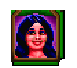 Constance Constance.gif |
Constance vision updated
npc_constance · unique
Constance
EN
ZH EN ref current · 70.7 KB · 2026-07-11 09:45:06
ZH ref current · 76.8 KB · 2026-07-11 09:44:32 |
Current English prompt
Soft, youthful voice with a touch of sweetness and innocence, delivered at a slow pace to convey gentleness; retain character context: Female, 20s, angelic young woman, innocent sweet voice, shy; visible traits: angelic young woman with wide eyes and a gentle smile; speaking pace: slow and measured, with deliberate pauses; pitch: low, resonant chest voice Current Chinese prompt
女性，20-30歲，溫暖友善，低沉有質感，柔和，語速沉穩，語速偏慢，停頓沉穩，音高偏低，胸腔共鳴明顯，角色音色細節：Soft, youthful voice with a touch of sweetness and innocence, delivered at a slow pace to convey gentleness; retain character context: Female, 20s, angelic young woman, innocent sweet voice, shy; visible traits: angelic young woman with wide eyes and a gentle smile; speaking pace: slow and measured, with deliberate pauses; pitch: low, resonant chest voice，用標準的普通話朗讀 |
Vision prompt
Soft, youthful voice with a touch of sweetness and innocence, delivered at a slow pace to convey gentleness; retain character context: Female, 20s, angelic young woman, innocent sweet voice, shy; visible traits: angelic young woman with wide eyes and a gentle smile; speaking pace: slow and measured, with deliberate pauses; pitch: low, resonant chest voice Previous prompt
Female, 20s, angelic young woman, innocent sweet voice, shy Traits
angelic young woman with wide eyes and a gentle smile Temperament
innocent and shy Model: qwen2.5vl:7b
|
Reference EN text
"Battles was quiet at first. I thought he was mean-looking, but he is nice once thou dost get to know him. He told me of the various monsters he fought, and exciting stories of how he raided ships in the south seas." Reference ZH text
你溫和地向 Constance 解釋， Robin 、 Battles 和 Leavell 是無賴，意圖對她造成極大的傷害。她非常震驚。然後你解釋說他們不會再找她麻煩了。她向你道謝。 |
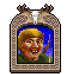 Coop Coop.jpg |
Coop vision updated
npc_coop · unique
Coop
EN
ZH EN ref current · 67.8 KB · 2026-07-11 13:45:47
ZH ref current · 47.2 KB · 2026-07-11 13:45:15 |
Current English prompt
Young traveling musician, warm and expressive with a clearly nasal singing brightness and artistic flourish. More musical and animated than a shopkeeper. speaking pace: lively medium-fast with melodic rises; pitch: bright tenor, nasal and resonant, smiling performer tone Current Chinese prompt
男性，年輕旅行音樂家，溫暖有表情，鼻音明顯，像唱歌般明亮，有藝術家的花腔。比店主更音樂化、更活潑。語速中偏快，旋律感上揚，音高為明亮男高音，帶鼻腔共鳴和表演者笑意，用標準的普通話朗讀 |
Vision prompt
Young traveling musician, warm and expressive with a clearly nasal singing brightness and artistic flourish. More musical and animated than a shopkeeper. speaking pace: lively medium-fast with melodic rises; pitch: bright tenor, nasal and resonant, smiling performer tone Previous prompt
Male, 20s-30s, traveling musician, warm singing voice, artistic and expressive Traits
warm, expressive, artistic Temperament
friendly, passionate Model: qwen2.5vl:7b
|
Reference EN text
"What I would not give to join thy group and go adventuring! But, then there would be no one to run the shoppe. So I cannot go. But someday... Anyway, I please myself in the evenings by singing with a musical group." Reference ZH text
Coop 正與『聖者旅團』在舞台上。他看見你，並說：「嗯，今晚有位特別的聽眾，這下一首曲子是要獻給他們的。 |
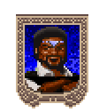 Danag Danag.gif |
Danag vision updated
npc_danag · unique
Danag
EN
ZH EN ref current · 105.6 KB · 2026-07-11 09:47:19
ZH ref current · 33.1 KB · 2026-07-11 09:46:28 |
Current English prompt
Warm, lively male voice in his 40s, exuding enthusiasm and a cheerful demeanor while speaking about games; retain character context: Male, 30s-40s, cheerful gambler, happy and carefree voice, warm laugh; visible traits: cheerful gambler with a warm laugh; speaking pace: brisk, lively, with expressive timing; pitch: medium-low, clear masculine range Current Chinese prompt
男性，30-40歲，溫暖友善，語氣有活力，語速偏快，節奏活潑且富表情，音高偏低，胸腔共鳴明顯，角色音色細節：Warm, lively male voice in his 40s, exuding enthusiasm and a cheerful demeanor while speaking about games; retain character context: Male, 30s-40s, cheerful gambler, happy and carefree voice, warm laugh; visible traits: cheerful gambler with a warm laugh; speaking pace: brisk, lively, with expressive timing; pitch: medium-low, clear masculine range，用標準的普通話朗讀 |
Vision prompt
Warm, lively male voice in his 40s, exuding enthusiasm and a cheerful demeanor while speaking about games; retain character context: Male, 30s-40s, cheerful gambler, happy and carefree voice, warm laugh; visible traits: cheerful gambler with a warm laugh; speaking pace: brisk, lively, with expressive timing; pitch: medium-low, clear masculine range Previous prompt
Male, 30s-40s, cheerful gambler, happy and carefree voice, warm laugh Traits
cheerful gambler with a warm laugh Temperament
lively and enthusiastic Model: qwen2.5vl:7b
|
Reference EN text
"Man with a Hook? That's his name! 'Hook'! He lives here on the island! In fact, his quarters are in the secret catacombs behind the House of Games! Thou canst reach it by asking Sintag the guard about Hook. Of course, thou dost know that Hook is The Fellowship's chief executioner... along with his assistant, the gargoyle Forskis." Reference ZH text
Danag 對你點點頭。「我無意失禮，但我正在專心玩遊戲。我希望能贏一大筆錢！ |
Daphne Daphne.gif |
Daphne vision updated
npc_daphne · unique
Daphne
EN
ZH EN ref current · 65.1 KB · 2026-07-11 09:48:16
ZH ref current · 37.8 KB · 2026-07-11 09:47:39 |
Current English prompt
Female in her late twenties or early thirties, with a tired yet authoritative voice. Her speech is clipped but carries an air of authority; retain character context: Female, 30s-40s, overworked barmaid, tired and annoyed voice, clipped; visible traits: disgruntled barmaid with tired eyes and a perfunctory greeting; speaking pace: natural medium tempo, clear and steady; pitch: medium-high, clear feminine range Current Chinese prompt
女性，30-40歲，沉穩有權威感，語速自然中等，清晰穩定，音高偏高，清晰女性聲線，角色音色細節：Female in her late twenties or early thirties, with a tired yet authoritative voice. Her speech is clipped but carries an air of authority; retain character context: Female, 30s-40s, overworked barmaid, tired and annoyed voice, clipped; visible traits: disgruntled barmaid with tired eyes and a perfunctory greeting; speaking pace: natural medium tempo, clear and steady; pitch: medium-high, clear feminine range，用標準的普通話朗讀 |
Vision prompt
Female in her late twenties or early thirties, with a tired yet authoritative voice. Her speech is clipped but carries an air of authority; retain character context: Female, 30s-40s, overworked barmaid, tired and annoyed voice, clipped; visible traits: disgruntled barmaid with tired eyes and a perfunctory greeting; speaking pace: natural medium tempo, clear and steady; pitch: medium-high, clear feminine range Previous prompt
Female, 30s-40s, overworked barmaid, tired and annoyed voice, clipped Traits
disgruntled barmaid with tired eyes and a perfunctory greeting. Temperament
overworked and annoyed, with a clipped tone. Model: qwen2.5vl:7b
|
Reference EN text
"Here are thy winnings, milord. But I have reason to believe that thou wert the one who killed poor Sprellic! If this is the way that thou makest thy money, then thou shouldst be ashamed!" Reference ZH text
你看到一個不滿且明顯過度勞累的酒館女侍。她對你敷衍地咕噥了一聲算作打招呼。 |
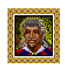 De Maria DeMaria.gif |
De Maria vision updatedchanged
npc_de_maria · unique
De Maria
EN
ZH EN ref current · 84.2 KB · 2026-07-11 09:50:39
ZH ref current · 64.5 KB · 2026-07-11 09:49:53 |
Current English prompt
Deep, resonant voice with a warm tone and expressive cadence, conveying authority and warmth; retain character context: Male, 20s-30s, flamboyant bard, dramatic grand voice; visible traits: flamboyant, festive aura; speaking pace: natural medium tempo, clear and steady; pitch: low, resonant chest voice Current Chinese prompt
男性，20-40歲，溫暖友善，低沉有質感，語速自然中等，清晰穩定，音高偏低，胸腔共鳴明顯，角色音色細節：Deep, resonant voice with a warm tone and expressive cadence, conveying authority and warmth; retain character context: Male, 20s-30s, flamboyant bard, dramatic grand voice; visible traits: flamboyant, festive aura; speaking pace: natural medium tempo, clear and steady; pitch: low, resonant chest voice，用標準的普通話朗讀 |
Vision prompt
Deep, resonant voice with a warm tone and expressive cadence, conveying authority and warmth. Previous prompt
Male, 20s-30s, flamboyant bard, dramatic grand voice Traits
flamboyant, festive aura Temperament
warm, authoritative, expressive Model: qwen2.5vl:7b
|
Reference EN text
"My love! My flower! Mine angel! The provider of the sweetest nectar my mouth has ever known! She is the light of my day! The notes of my songs! The flesh of my..." Reference ZH text
「我的愛！我的花朵！我的天使！她提供了我嘗過最甜美的甘露！她是我白晝的光芒！我歌曲的音符！我的肉體……」 |
De Snel DeSnel.gif |
De Snel vision updated
npc_de_snel · unique
De Snel
EN
ZH EN ref current · 109.6 KB · 2026-07-11 09:52:20
ZH ref current · 94.1 KB · 2026-07-11 09:51:28 |
Current English prompt
Deep and authoritative with a slight rasp, steady pace, and a touch of warmth to convey experience; retain character context: Male, 30s-40s, combat instructor, stern fighting voice; visible traits: stern, combat instructor appearance; speaking pace: natural medium tempo, clear and steady; pitch: low, resonant chest voice Current Chinese prompt
男性，30-40歲，溫暖友善，沉穩有權威感，低沉有質感，語速自然中等，清晰穩定，音高偏低，胸腔共鳴明顯，角色音色細節：Deep and authoritative with a slight rasp, steady pace, and a touch of warmth to convey experience; retain character context: Male, 30s-40s, combat instructor, stern fighting voice; visible traits: stern, combat instructor appearance; speaking pace: natural medium tempo, clear and steady; pitch: low, resonant chest voice，用標準的普通話朗讀 |
Vision prompt
Deep and authoritative with a slight rasp, steady pace, and a touch of warmth to convey experience; retain character context: Male, 30s-40s, combat instructor, stern fighting voice; visible traits: stern, combat instructor appearance; speaking pace: natural medium tempo, clear and steady; pitch: low, resonant chest voice Previous prompt
Male, 30s-40s, combat instructor, stern fighting voice Traits
stern, combat instructor appearance Temperament
authoritative yet calm Model: qwen2.5vl:7b
|
Reference EN text
"I have heard that thou didst kill several of our members while champion of a duel defending the thief of our honor flag." His eyes narrow as he stares at you intensely. "Outstanding! I am a man who values nothing higher than the application of skill. I salute thee on thy victory. Perhaps thou wouldst like to join our group?" Reference ZH text
「我聽說你在為那個偷我們榮譽旗的小偷辯護的決鬥中，殺了我們幾名成員。」他瞇起眼睛緊盯著你。「太出色了！我這個人最看重的就是技巧的運用。我為你的勝利向你致敬。或許你想加入我們的組織？」 |
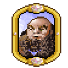 Dell Dell.gif |
Dell vision updated
npc_dell · unique
Dell
EN
ZH EN ref current · 60.0 KB · 2026-07-11 13:14:58
ZH ref current · 52.8 KB · 2026-07-11 13:14:31 |
Current English prompt
Strict male shopkeeper, dry and impatient, with clipped speech and a hard edge. Stern, practical, and slightly annoyed. speaking pace: medium-fast clipped delivery; pitch: dry mid-low baritone, narrow and tense, not warm Current Chinese prompt
男性，中年嚴厲店主，聲音乾、硬、沒有耐心，吐字短促，帶一點煩躁。不要溫暖歡迎感。語速中偏快，句子切得短，音高為乾硬中低男聲，聲線收窄緊繃，用標準的普通話朗讀 |
Vision prompt
Strict male shopkeeper, dry and impatient, with clipped speech and a hard edge. Stern, practical, and slightly annoyed. speaking pace: medium-fast clipped delivery; pitch: dry mid-low baritone, narrow and tense, not warm Previous prompt
Male, 40s, strict shopkeeper, stern irritated voice Traits
serious, stern expression with a furrowed brow Temperament
authoritative and impatient Model: qwen2.5vl:7b
|
Reference EN text
"I am afraid I know nothing about it save for what is being said in the street, so do not ask me. If thou art not going to buy anything, then thou art wasting my time. Go away." Reference ZH text
「喔，你真的是嗎？我不知道有這麼多『聖者』！怎麼，上週才剛有一個『聖者』從這裡經過！他還騙了我 20 金幣！他是個騙術大師！」 |
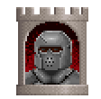 Denton Denton.gif |
Denton vision updated
npc_denton · unique
Denton
EN
ZH EN ref current · 111.3 KB · 2026-07-11 09:54:34
ZH ref current · 38.6 KB · 2026-07-11 09:53:43 |
Current English prompt
A mid-aged man with a soft, slightlynasal tone, speaking in a slow, deliberate manner that conveys his absentminded nature; retain character context: Male, 40s, absent-minded brewer, distracted and vague voice; speaking pace: slow and measured, with deliberate pauses; pitch: low, resonant chest voice Current Chinese prompt
男性，中年，低沉有質感，柔和，語速沉穩，語速偏慢，停頓沉穩，音高偏低，胸腔共鳴明顯，角色音色細節：A mid-aged man with a soft, slightlynasal tone, speaking in a slow, deliberate manner that conveys his absentminded nature; retain character context: Male, 40s, absent-minded brewer, distracted and vague voice; speaking pace: slow and measured, with deliberate pauses; pitch: low, resonant chest voice，用標準的普通話朗讀 |
Vision prompt
A mid-aged man with a soft, slightlynasal tone, speaking in a slow, deliberate manner that conveys his absentminded nature; retain character context: Male, 40s, absent-minded brewer, distracted and vague voice; speaking pace: slow and measured, with deliberate pauses; pitch: low, resonant chest voice Previous prompt
Male, 40s, absent-minded brewer, distracted and vague voice Traits
Temperament
absent-minded brewer, distracted and vague voice Model: qwen2.5vl:7b
|
Reference EN text
"The Fellowship is a twenty-year-old organization that holds many festivals, parades, and celebrations. In addition, they maintain a shelter in the town of Paws. They have an underlying philosophy called the Triad of Inner Strength. This triad is broken into the three principles known as `strive for unity,' `trust thy brother,' and `worthiness precedes reward.'I will now explain the meaning of each principple." Reference ZH text
向你致敬， Dupre 爵士。你又回來為 Brommer 研究葡萄酒了嗎？ |
Dracothraxus Dracothraxus.gif |
Dracothraxus vision updated
npc_dracothraxus · unique
Dracothraxus
EN
ZH EN ref current · 99.1 KB · 2026-07-11 09:56:11
ZH ref current · 88.7 KB · 2026-07-11 09:55:21 |
Current English prompt
Deep, gravelly voice with an authoritative tone, conveying wisdom and experience; retain character context: Male, ancient dragon, deep rumbling ancient voice, proud and weary; visible traits: deep rumbling ancient voice with a proud yet weary tone; speaking pace: slow and measured, with deliberate pauses; pitch: very low, rumbling creature register Current Chinese prompt
男性，年長，沉穩有權威感，低沉有質感，語速沉穩，帶有智慧與閱歷，語速偏慢，停頓沉穩，音高很低，帶轟鳴感的生物聲線，角色音色細節：Deep, gravelly voice with an authoritative tone, conveying wisdom and experience; retain character context: Male, ancient dragon, deep rumbling ancient voice, proud and weary; visible traits: deep rumbling ancient voice with a proud yet weary tone; speaking pace: slow and measured, with deliberate pauses; pitch: very low, rumbling creature register，用標準的普通話朗讀 |
Vision prompt
Deep, gravelly voice with an authoritative tone, conveying wisdom and experience; retain character context: Male, ancient dragon, deep rumbling ancient voice, proud and weary; visible traits: deep rumbling ancient voice with a proud yet weary tone; speaking pace: slow and measured, with deliberate pauses; pitch: very low, rumbling creature register Previous prompt
Male, ancient dragon, deep rumbling ancient voice, proud and weary Traits
deep rumbling ancient voice with a proud yet weary tone Temperament
authoritative and commanding Model: qwen2.5vl:7b
|
Reference EN text
"Well met, seeker. I am Dracothraxus. Thy test, and I fear, thy defeat lies before thee. For thou shouldst know that I am made immortal by the Keeper of Courage. 'Twould take a truly powerful artifact to destroy me... one that does not exist." The great dragon paws the earth in expectation of your imminent battle. Reference ZH text
Dracothraxus 厭惡地嗅了嗅空氣，「我感覺到我的末日就在附近。也許我終於能得到解脫了。祝你好運，凡人。保護好你自己吧！」說罷，巨龍向你撲來。 |
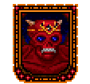 Draxinusom Draxinusom.PNG |
Draxinusom vision updated
npc_draxinusom · unique
Draxinusom
EN
ZH EN ref current · 103.6 KB · 2026-07-11 09:57:30
ZH ref current · 51.2 KB · 2026-07-11 09:56:39 |
Current English prompt
Deep, resonant voice, slow and measured pace, warm yet authoritative tone; retain character context: Male, elderly, ancient gargoyle king, deep venerable voice, wise and gentle; visible traits: bent and withered, regal bearing, gentle smile; speaking pace: slow and measured, with deliberate pauses; pitch: low, resonant chest voice Current Chinese prompt
男性，年長，溫暖友善，沉穩有權威感，低沉有質感，語速沉穩，語速偏慢，停頓沉穩，音高偏低，胸腔共鳴明顯，角色音色細節：Deep, resonant voice, slow and measured pace, warm yet authoritative tone; retain character context: Male, elderly, ancient gargoyle king, deep venerable voice, wise and gentle; visible traits: bent and withered, regal bearing, gentle smile; speaking pace: slow and measured, with deliberate pauses; pitch: low, resonant chest voice，用標準的普通話朗讀 |
Vision prompt
Deep, resonant voice, slow and measured pace, warm yet authoritative tone; retain character context: Male, elderly, ancient gargoyle king, deep venerable voice, wise and gentle; visible traits: bent and withered, regal bearing, gentle smile; speaking pace: slow and measured, with deliberate pauses; pitch: low, resonant chest voice Previous prompt
Male, elderly, ancient gargoyle king, deep venerable voice, wise and gentle Traits
bent and withered, regal bearing, gentle smile Temperament
wise and gentle Model: qwen2.5vl:7b
|
Reference EN text
"Ah, to be an interesting one. To be a strong, powerful personality, to be from one of the families most able to claim noble lineage in our society. To have been always most self-serving, striving only to gain status and wealth for himself. To have certainly changed his tune since joining The Fellowship. To have my doubts, however, that his goals have changed as well." Reference ZH text
你看到一位年邁的石像鬼，身軀彎曲枯槁，卻帶著一種王者的風範。他溫和地笑了笑。 |
Dupre DupreU7.PNG |
Dupre vision updated
npc_dupre · unique
Dupre
EN
ZH EN ref current · 81.8 KB · 2026-07-11 09:58:47
ZH ref current · 82.9 KB · 2026-07-11 09:58:08 |
Current English prompt
Deep, authoritative voice with a touch of seriousness and a steady pace; retain character context: Male, 40s, hearty paladin, jovial and warm voice, robust laugh, loyal and brave tone; visible traits: serious expression with a hint of sternness; speaking pace: natural medium tempo, clear and steady; pitch: low, resonant chest voice Current Chinese prompt
男性，中年，溫暖友善，沉穩有權威感，低沉有質感，語速自然中等，清晰穩定，音高偏低，胸腔共鳴明顯，角色音色細節：Deep, authoritative voice with a touch of seriousness and a steady pace; retain character context: Male, 40s, hearty paladin, jovial and warm voice, robust laugh, loyal and brave tone; visible traits: serious expression with a hint of sternness; speaking pace: natural medium tempo, clear and steady; pitch: low, resonant chest voice，用標準的普通話朗讀 |
Vision prompt
Deep, authoritative voice with a touch of seriousness and a steady pace; retain character context: Male, 40s, hearty paladin, jovial and warm voice, robust laugh, loyal and brave tone; visible traits: serious expression with a hint of sternness; speaking pace: natural medium tempo, clear and steady; pitch: low, resonant chest voice Previous prompt
Male, 40s, hearty paladin, jovial and warm voice, robust laugh, loyal and brave tone Traits
serious expression with a hint of sternness Temperament
authoritative yet composed Model: qwen2.5vl:7b
|
Reference EN text
"I have not seen our old friends in some time. Currently I am conducting a study of all of the various drinking establishments of Britannia. At present I am about halfway through. But it is nothing that could keep me from adventuring with thee, Avatar." Reference ZH text
「這些人仍然相信任何問題都可以透過打人或刺傷人來解決。他們讓我想起了一個更原始但沒那麼複雜的時代。也許這就是人們住在這裡的原因——為了逃避他們的現代問題。」 |
Dustin Dustin.gif |
Dustin vision updatedchanged
npc_dustin · unique
Dustin
EN
ZH EN ref current · 67.5 KB · 2026-07-11 13:15:56
ZH ref current · 52.3 KB · 2026-07-11 13:15:25 |
Current English prompt
Male stage actor in his late 40s with a projected theatrical baritone, brisk memorized delivery, crisp consonants, and slightly pompous stage confidence. Keep the voice human, energetic, and performance-trained, not ranger-like or ghostly. speaking pace: brisk and rehearsed, with clear actorly emphasis; pitch: mid-low baritone, brighter than a deep chest voice Current Chinese prompt
男性，四十多歲，舞台劇男演員聲線，中低男中音但偏明亮，吐字清楚有舞台感，像在背誦台詞，帶一點自信和誇張。不要低沉遊俠感，不要鬼魂感。語速偏快，節奏像排練好的台詞，音高為中低男中音，明亮且有投射感，用標準的普通話朗讀 |
Vision prompt
Deep, resonant voice with a steady pace, conveying authority and focus. Previous prompt
Male, 40s, stocky actor, focused memorizing voice Traits
stocky actor with a focused demeanor Temperament
serious and concentrated Model: qwen2.5vl:7b
|
Reference EN text
You see a short, stocky actor in his mid- to late forties. He cannot speak to you now because he is concentrating on his lines for the Passion Play. Perhaps you should speak to Paul. Reference ZH text
你看到一位四十多歲、矮胖結實的男演員。他現在無法和你說話，因為他正專注於記誦受難劇的台詞。也許你該去和 Paul 談談。 |
Elad EladU7.png |
Elad vision updated
npc_elad · unique
Elad
EN
ZH EN ref current · 73.1 KB · 2026-07-11 10:00:51
ZH ref current · 57.9 KB · 2026-07-11 10:00:18 |
Current English prompt
Warm and authoritative, with a gentle smile and a steady pace that conveys confidence; retain character context: Male, 20s-30s, smiling young man, cheerful polite voice; visible traits: smiling eyes, bowing posture; speaking pace: natural medium tempo, clear and steady; pitch: medium-low, clear masculine range Current Chinese prompt
男性，20-40歲，溫暖友善，沉穩有權威感，語速自然中等，清晰穩定，音高偏低，胸腔共鳴明顯，角色音色細節：Warm and authoritative, with a gentle smile and a steady pace that conveys confidence; retain character context: Male, 20s-30s, smiling young man, cheerful polite voice; visible traits: smiling eyes, bowing posture; speaking pace: natural medium tempo, clear and steady; pitch: medium-low, clear masculine range，用標準的普通話朗讀 |
Vision prompt
Warm and authoritative, with a gentle smile and a steady pace that conveys confidence; retain character context: Male, 20s-30s, smiling young man, cheerful polite voice; visible traits: smiling eyes, bowing posture; speaking pace: natural medium tempo, clear and steady; pitch: medium-low, clear masculine range Previous prompt
Male, 20s-30s, smiling young man, cheerful polite voice Traits
smiling eyes, bowing posture Temperament
confident yet approachable Model: qwen2.5vl:7b
|
Reference EN text
"Moonglow is mine home. I have lived in this town for mine entire life. But I am weary of my life here. 'Tis time, I think, to move on. If only I did not have such strong ties here." Reference ZH text
「Cubolt 擁有那個農場。他和他的弟弟 Tolemac 以及他們的朋友 Morz 一起管理它。我不是很確定，但我相信 Tolemac 最近加入了友誼會。」 |
elderly_female Boots.gif |
elderly_female vision updated
group_elderly_female · group
Boots, Nanna
EN
ZH EN ref current · 96.7 KB · 2026-07-11 08:52:18
ZH ref current · 99.2 KB · 2026-07-11 08:51:30 |
Current English prompt
Elderly woman with a soft yet commanding voice, speaking slowly and warmly in Mandarin; retain character context: Female, elderly woman, warm grandmotherly voice, gentle and loving, speaks slowly in standard Mandarin; speaking pace: slow and measured, with deliberate pauses; pitch: low, resonant chest voice Current Chinese prompt
女性，年長，溫暖友善，沉穩有權威感，低沉有質感，柔和，語速偏慢，停頓沉穩，音高偏低，胸腔共鳴明顯，角色音色細節：Elderly woman with a soft yet commanding voice, speaking slowly and warmly in Mandarin; retain character context: Female, elderly woman, warm grandmotherly voice, gentle and loving, speaks slowly in standard Mandarin; speaking pace: slow and measured, with deliberate pauses; pitch: low, resonant chest voice，用標準的普通話朗讀 |
Vision prompt
Elderly woman with a soft yet commanding voice, speaking slowly and warmly in Mandarin; retain character context: Female, elderly woman, warm grandmotherly voice, gentle and loving, speaks slowly in standard Mandarin; speaking pace: slow and measured, with deliberate pauses; pitch: low, resonant chest voice Previous prompt
Female, elderly woman, warm grandmotherly voice, gentle and loving, speaks slowly in standard Mandarin Traits
Temperament
warm, gentle, authoritative Model: qwen2.5vl:7b
|
Reference EN text
"Well, look around! There are rich men who live in opulent castles. And right outside are poor people who live in hovels. Thou dost know how there are winged gargoyles and wingless gargoyles? Well, it seems the human race is getting to be just as divided. There is no unity in the land anymore. It is why I have joined The Fellowship." Reference ZH text
「上週我叫他在湯裡放一點大蒜。他放了大蒜，然後就忘了這回事。所以他又去放了一些。然後他又忘了自己放過。所以他又放了更多。嗯，你可以想像 Lord British 最後嚐到那碗湯時臉上的表情！幸好我們是在如此公正的統治者的城堡裡生活和工作。」 |
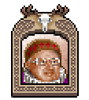 elderly_male Bennie.PNG |
elderly_male vision updated
group_elderly_male · group
Bennie, Clint, Csil, Gregor
EN
ZH EN ref current · 98.9 KB · 2026-07-11 08:53:57
ZH ref current · 99.9 KB · 2026-07-11 08:53:07 |
Current English prompt
A wise, elderly man with a weathered voice, speaking in a slow, authoritative tone that conveys warmth and experience; retain character context: Male, elderly man, warm weathered voice with wisdom and patience, speaks slowly in standard Mandarin; visible traits: weathered face with a warm smile; speaking pace: slow and measured, with deliberate pauses; pitch: low, resonant chest voice Current Chinese prompt
男性，年長，溫暖友善，沉穩有權威感，低沉有質感，語速沉穩，語速偏慢，停頓沉穩，音高偏低，胸腔共鳴明顯，角色音色細節：A wise, elderly man with a weathered voice, speaking in a slow, authoritative tone that conveys warmth and experience; retain character context: Male, elderly man, warm weathered voice with wisdom and patience, speaks slowly in standard Mandarin; visible traits: weathered face with a warm smile; speaking pace: slow and measured, with deliberate pauses; pitch: low, resonant chest voice，用標準的普通話朗讀 |
Vision prompt
A wise, elderly man with a weathered voice, speaking in a slow, authoritative tone that conveys warmth and experience; retain character context: Male, elderly man, warm weathered voice with wisdom and patience, speaks slowly in standard Mandarin; visible traits: weathered face with a warm smile; speaking pace: slow and measured, with deliberate pauses; pitch: low, resonant chest voice Previous prompt
Male, elderly man, warm weathered voice with wisdom and patience, speaks slowly in standard Mandarin Traits
weathered face with a warm smile Temperament
good humor and authority Model: qwen2.5vl:7b
|
Reference EN text
"Well, Lord British himself was struck down with some sort of malady. He sent for me. I arrived at the castle as soon as I could leave my patients, and I examined the king. It appeared to me that something had infested his blood. I have a theory about it, which I am convinced is correct. Others, however, do not share my view." Reference ZH text
「嗯，Lord British 自己也感染了某種疾病。他派人找我。我一離開病人就趕到城堡檢查了國王。在我看來，似乎有什麼東西侵入了他的血液。我對此有一個理論，我堅信它是正確的。然而，其他人並不認同我的觀點。」 |
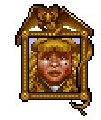 Elynor Elynor.gif |
Elynor vision updated
npc_elynor · unique
Elynor
EN
ZH EN ref current · 106.4 KB · 2026-07-11 10:02:35
ZH ref current · 99.7 KB · 2026-07-11 10:01:44 |
Current English prompt
Elegant, mid-tempo, slightly condescending, warm yet authoritative; retain character context: Female, 40s, elegant and slightly傲慢 noblewoman, refined voice with a hint of condescension; visible traits: elegant and slightly arrogant noblewoman with a refined voice; speaking pace: natural medium tempo, clear and steady; pitch: medium-high, clear feminine range Current Chinese prompt
女性，中年，溫暖友善，沉穩有權威感，語速自然中等，清晰穩定，音高偏高，清晰女性聲線，角色音色細節：Elegant, mid-tempo, slightly condescending, warm yet authoritative; retain character context: Female, 40s, elegant and slightly傲慢 noblewoman, refined voice with a hint of condescension; visible traits: elegant and slightly arrogant noblewoman with a refined voice; speaking pace: natural medium tempo, clear and steady; pitch: medium-high, clear feminine range，用標準的普通話朗讀 |
Vision prompt
Elegant, mid-tempo, slightly condescending, warm yet authoritative; retain character context: Female, 40s, elegant and slightly傲慢 noblewoman, refined voice with a hint of condescension; visible traits: elegant and slightly arrogant noblewoman with a refined voice; speaking pace: natural medium tempo, clear and steady; pitch: medium-high, clear feminine range Previous prompt
Female, 40s, elegant and slightly傲慢 noblewoman, refined voice with a hint of condescension Traits
elegant and slightly arrogant noblewoman with a refined voice. Temperament
cultured manner tinged with arrogance Model: qwen2.5vl:7b
|
Reference EN text
"We should strive to put this business of the murders behind us. Minoc will soon be known throughout Britannia as a city where majestic ships are built. There is even going to be a statue erected in the center of town honoring our shipwright, Owen. He is a skilled and valued member of our community and, of course, a Fellowship member." Reference ZH text
「 Frederico 和 Tania 把我們友誼會的所有成員當作有病一樣對待。特別是 Frederico 經常欺負我們的成員。你也知道，我們是和平主義者，這是常識。他甚至在他自己的人民中都有殘酷的名聲。他落得暴斃的下場並不令人驚訝。」 |
Erethian ErethianU7.png |
Erethian vision updated
npc_erethian · unique
Erethian
EN
ZH EN ref current · 109.4 KB · 2026-07-11 13:17:37
ZH ref current · 108.3 KB · 2026-07-11 13:16:47 |
Current English prompt
Ancient eccentric mage, thin creaky voice with mystical intensity, old intelligence, and unpredictable pauses. Not a warm scholar. speaking pace: very slow and irregular, with arcane emphasis; pitch: high-mid elderly male, dry and creaking rather than deep Current Chinese prompt
男性，年老古怪的法師，聲音乾瘦、微微發顫，有神秘感和強烈智慧，停頓不可預測。不要溫暖學者聲，不要厚重低音。語速很慢且不規則，音高為偏高的老年男性乾啞聲線，用標準的普通話朗讀 |
Vision prompt
Ancient eccentric mage, thin creaky voice with mystical intensity, old intelligence, and unpredictable pauses. Not a warm scholar. speaking pace: very slow and irregular, with arcane emphasis; pitch: high-mid elderly male, dry and creaking rather than deep Previous prompt
Male, elderly, wise mage, calm and philosophical voice with a mystical quality, speaks slowly Traits
wise mage with a calm demeanor Temperament
philosophical and authoritative Model: qwen2.5vl:7b
|
Reference EN text
Erethian nods his head when you tell him of your dilemma with the black sword. "Yes, I can see how the blade would be too clumsy to swing in combat. However, if thou were to bind a magical source of power into the hilt of the blade, thou mightest be able to counteract the unwieldy nature of the sword." Reference ZH text
年邁法師佈滿皺紋的眉頭上出現了小汗珠。「這比我預期的還要難一點。」他停下來用袖子尖擦了擦額頭，「我得引導一條地下小河，讓水井打水。那麼，現在你需要一些工具，才能使用這些設備，不是嗎？」他自問自答，同時再次準備向這個世界釋放他的意志。 |
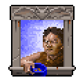 Fenn Fenn.gif |
Fenn vision updated
npc_fenn · unique
Fenn
EN
ZH EN ref current · 42.1 KB · 2026-07-11 10:05:07
ZH ref current · 67.7 KB · 2026-07-11 10:04:48 |
Current English prompt
Warm, slightly gravelly voice, mid-tempo delivery, conveying both authority and a hint of weariness; retain character context: Male, 30s-40s, beggar, pitiful pleading voice; visible traits: weathered, slightly disheveled appearance with a hint of melancholy or humor in the eyes; speaking pace: natural medium tempo, clear and steady; pitch: low, resonant chest voice Current Chinese prompt
男性，30-40歲，溫暖友善，低沉有質感，語速自然中等，清晰穩定，音高偏低，胸腔共鳴明顯，角色音色細節：Warm, slightly gravelly voice, mid-tempo delivery, conveying both authority and a hint of weariness; retain character context: Male, 30s-40s, beggar, pitiful pleading voice; visible traits: weathered, slightly disheveled appearance with a hint of melancholy or humor in the eyes; speaking pace: natural medium tempo, clear and steady; pitch: low, resonant chest voice，用標準的普通話朗讀 |
Vision prompt
Warm, slightly gravelly voice, mid-tempo delivery, conveying both authority and a hint of weariness; retain character context: Male, 30s-40s, beggar, pitiful pleading voice; visible traits: weathered, slightly disheveled appearance with a hint of melancholy or humor in the eyes; speaking pace: natural medium tempo, clear and steady; pitch: low, resonant chest voice Previous prompt
Male, 30s-40s, beggar, pitiful pleading voice Traits
weathered, slightly disheveled appearance with a hint of melancholy or humor in the eyes. Temperament
mildly eccentric and somewhat unpredictable, with a touch of wisdom under the surface. Model: qwen2.5vl:7b
|
Reference EN text
You see a beggar. You cannot tell from the look on his face whether he is about to laugh or cry. Reference ZH text
「在你告訴他找到毒液瓶的事後，他說：『當你發現 Garritt 那個沒用的臭小子是小偷時，你為我們鎮上立了一大功！也許現在有些人會開始意識到友誼會的虛偽了！』」 |
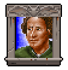 Feridwyn FeridwynU7.png |
Feridwyn vision updated
npc_feridwyn · unique
Feridwyn
EN
ZH EN ref current · 103.1 KB · 2026-07-11 10:06:20
ZH ref current · 38.8 KB · 2026-07-11 10:05:28 |
Current English prompt
Deep and resonant, with a calm authority and measured pace, conveying wisdom and experience; retain character context: Male, 40s, excited gossip, fast and eager voice, breathless with news; visible traits: weathered, wise, authoritative; speaking pace: brisk, lively, with expressive timing; pitch: low, resonant chest voice Current Chinese prompt
男性，中年，沉穩有權威感，低沉有質感，語速沉穩，語氣有活力，語速偏快，節奏活潑且富表情，音高偏低，胸腔共鳴明顯，角色音色細節：Deep and resonant, with a calm authority and measured pace, conveying wisdom and experience; retain character context: Male, 40s, excited gossip, fast and eager voice, breathless with news; visible traits: weathered, wise, authoritative; speaking pace: brisk, lively, with expressive timing; pitch: low, resonant chest voice，用標準的普通話朗讀 |
Vision prompt
Deep and resonant, with a calm authority and measured pace, conveying wisdom and experience; retain character context: Male, 40s, excited gossip, fast and eager voice, breathless with news; visible traits: weathered, wise, authoritative; speaking pace: brisk, lively, with expressive timing; pitch: low, resonant chest voice Previous prompt
Male, 40s, excited gossip, fast and eager voice, breathless with news Traits
weathered, wise, authoritative Temperament
calm, measured, experienced Model: qwen2.5vl:7b
|
Reference EN text
"I have often said that Tobias was no good. Now here is proof. He is the thief that has been praying upon one of our honest merchants! And to think I let him come into contact with my son! I hope he shall be dealt with in a manner appropriate to one who is leading youth astray from the way of The Fellowship. Reference ZH text
聖者！你知道商人 Morfin 被偷了一批銀蛇毒液嗎？這起竊案給社區帶來了不小的困擾。 |
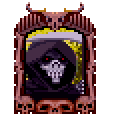 Ferryman FerrymanU7.png |
Ferryman vision updated
npc_ferryman · unique
Ferryman
EN
ZH EN ref current · 95.5 KB · 2026-07-11 13:19:14
ZH ref current · 96.7 KB · 2026-07-11 13:18:28 |
Current English prompt
Ancient spectral ferryman, hollow and cavernous, with an eerie inhuman resonance and cold ritual authority. Voice should feel distant, echoing, and ominous rather than merely old. speaking pace: very slow, ceremonial pauses; pitch: very low, hollow sub-bass resonance with breathy edges Current Chinese prompt
男性，年老的幽靈渡船夫，聲音空洞、陰冷、像從洞穴深處傳來，有非人的回響和儀式感。不要只是普通老人。語速很慢，停頓莊嚴，音高很低，空洞低頻共鳴，尾音帶寒氣和氣聲，用標準的普通話朗讀 |
Vision prompt
Ancient spectral ferryman, hollow and cavernous, with an eerie inhuman resonance and cold ritual authority. Voice should feel distant, echoing, and ominous rather than merely old. speaking pace: very slow, ceremonial pauses; pitch: very low, hollow sub-bass resonance with breathy edges Previous prompt
Male, elderly, spectral ferryman, deep hollow voice, ominous and slow Traits
hooded figure in a ghostly boat with skeletal features Temperament
ominous and slow Model: qwen2.5vl:7b
|
Reference EN text
Before you stands a tall, skeletal figure in a ghostly boat. He holds out his hand to you, and says in a sepulchral voice, "I am the Ferryman of Skara Brae... Thou must pay two coins... to cross the Misty Channel." Reference ZH text
站在你面前的是一個高大、骨瘦如柴的身影，身處一艘幽靈船中。他向你伸出手，用陰森的聲音說：「我是 Skara Brae 的擺渡人……你必須支付兩枚硬幣……才能渡過迷霧海峽。」 |
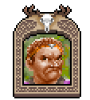 Figg Figg.gif |
Figg vision updated
npc_figg · unique
Figg
EN
ZH EN ref current · 116.2 KB · 2026-07-11 10:09:45
ZH ref current · 88.6 KB · 2026-07-11 10:08:48 |
Current English prompt
Deep, authoritative voice with a hint of urgency and concern; retain character context: Male, 30s-40s, anxious fellowship member, worried hurried voice; visible traits: serious, focused; speaking pace: brisk, lively, with expressive timing; pitch: low, resonant chest voice Current Chinese prompt
男性，30-40歲，沉穩有權威感，低沉有質感，語氣有活力，帶有憂慮感，語速偏快，節奏活潑且富表情，音高偏低，胸腔共鳴明顯，角色音色細節：Deep, authoritative voice with a hint of urgency and concern; retain character context: Male, 30s-40s, anxious fellowship member, worried hurried voice; visible traits: serious, focused; speaking pace: brisk, lively, with expressive timing; pitch: low, resonant chest voice，用標準的普通話朗讀 |
Vision prompt
Deep, authoritative voice with a hint of urgency and concern; retain character context: Male, 30s-40s, anxious fellowship member, worried hurried voice; visible traits: serious, focused; speaking pace: brisk, lively, with expressive timing; pitch: low, resonant chest voice Previous prompt
Male, 30s-40s, anxious fellowship member, worried hurried voice Traits
serious, focused Temperament
authoritative yet concerned Model: qwen2.5vl:7b
|
Reference EN text
"I am a member of the Fellowship, yes. But it would be a crime for me to give apples from the Royal Orchard to The Fellowship, and it would be a violation of my sacred duty. While selling apples is also a violation, I was only trying to do this man Weston a favor. And I suppose these accusations are the thanks I get? Hmph!" Reference ZH text
「我是友誼會的成員，沒錯。但我若把皇家果園的蘋果給友誼會將是一種犯罪，也是對我神聖職責的侵犯。雖然賣蘋果也是違規的，我只是想幫這個名叫 Weston 的人一個忙。而我想這些指控就是我得到的回報？哼！」 |
Finnigan Finnigan.PNG |
Finnigan vision updated
npc_finnigan · unique
Finnigan
EN
ZH EN ref current · 108.8 KB · 2026-07-11 10:11:29
ZH ref current · 101.1 KB · 2026-07-11 10:10:36 |
Current English prompt
Deep, gravelly voice with a hint of weariness, conveying authority and experience; retain character context: Male, 40s, determined investigator, serious and focused voice, slightly weary; visible traits: weathered, rugged appearance with a thick beard and stern expression; speaking pace: natural medium tempo, clear and steady; pitch: low, resonant chest voice Current Chinese prompt
男性，中年，沉穩有權威感，低沉有質感，語速自然中等，清晰穩定，音高偏低，胸腔共鳴明顯，角色音色細節：Deep, gravelly voice with a hint of weariness, conveying authority and experience; retain character context: Male, 40s, determined investigator, serious and focused voice, slightly weary; visible traits: weathered, rugged appearance with a thick beard and stern expression; speaking pace: natural medium tempo, clear and steady; pitch: low, resonant chest voice，用標準的普通話朗讀 |
Vision prompt
Deep, gravelly voice with a hint of weariness, conveying authority and experience; retain character context: Male, 40s, determined investigator, serious and focused voice, slightly weary; visible traits: weathered, rugged appearance with a thick beard and stern expression; speaking pace: natural medium tempo, clear and steady; pitch: low, resonant chest voice Previous prompt
Male, 40s, determined investigator, serious and focused voice, slightly weary Traits
weathered, rugged appearance with a thick beard and stern expression. Temperament
authoritative yet weary from experience. Model: qwen2.5vl:7b
|
Reference EN text
"A crime like this has never happened in Trinsic before. I cannot believe this happened to Christopher and Inamo. Please -- explore the town! I would appreciate it if thou wouldst bring me a report on thy progress. Be sure to ask everyone in town about the murder. After speaking with Christopher's son, thou mightest next want to speak with Gilberto, the guard on watch at the dock last night." Reference ZH text
「那是在我來到 Trinsic 之前的事了。曾經發生過一起有著驚人相似之處的謀殺案。發現了一具被肢解的屍體，就像可憐的 Christopher 一樣。那看起來像是一場儀式性的殺戮。我敢打賭，當年那起謀殺案的凶手就是這次事件的幕後黑手。」 |
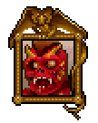 Fodus FodusU7.png |
Fodus vision updated
npc_fodus · unique
Fodus
EN
ZH EN ref current · 76.3 KB · 2026-07-11 10:12:32
ZH ref current · 52.9 KB · 2026-07-11 10:11:54 |
Current English prompt
Mid-thirties male, rough and pained voice, slow and deliberate pace, conveying a sense of weariness yet determination; retain character context: Male, gargoyle, sick diseased gargoyle, rough pained voice; visible traits: sick gargoyle with patches of skin disease on face; speaking pace: slow and measured, with deliberate pauses; pitch: low, resonant chest voice Current Chinese prompt
男性，中年，低沉有質感，語速沉穩，語速偏慢，停頓沉穩，音高偏低，胸腔共鳴明顯，角色音色細節：Mid-thirties male, rough and pained voice, slow and deliberate pace, conveying a sense of weariness yet determination; retain character context: Male, gargoyle, sick diseased gargoyle, rough pained voice; visible traits: sick gargoyle with patches of skin disease on face; speaking pace: slow and measured, with deliberate pauses; pitch: low, resonant chest voice，用標準的普通話朗讀 |
Vision prompt
Mid-thirties male, rough and pained voice, slow and deliberate pace, conveying a sense of weariness yet determination; retain character context: Male, gargoyle, sick diseased gargoyle, rough pained voice; visible traits: sick gargoyle with patches of skin disease on face; speaking pace: slow and measured, with deliberate pauses; pitch: low, resonant chest voice Previous prompt
Male, gargoyle, sick diseased gargoyle, rough pained voice Traits
sick gargoyle with patches of skin disease on face Temperament
pained but determined Model: qwen2.5vl:7b
|
Reference EN text
A wave of delirium passes over the gargoyle. "To... to be going back to work now, Mikos!... To be working hard!... To have no need to give me any more of the the silver fluid..." Reference ZH text
你看到一隻沒有翅膀的石像鬼，患有可怕的皮膚病。看起來他的臉似乎正一塊塊地掉下來。 |
For Lem Forlem.gif |
For Lem vision updated
npc_for_lem · unique
For Lem
EN
ZH EN ref current · 81.3 KB · 2026-07-11 10:13:49
ZH ref current · 87.0 KB · 2026-07-11 10:13:13 |
Current English prompt
Deep, resonant male voice with a commanding tone, conveying ancient wisdom and authority; retain character context: Male, gargoyle, large wingless gargoyle, deep formal voice; visible traits: Large, strong wingless gargoyle with deep formal voice; speaking pace: slow and measured, with deliberate pauses; pitch: low, resonant chest voice Current Chinese prompt
男性，年長，沉穩有權威感，低沉有質感，語速沉穩，帶有智慧與閱歷，語速偏慢，停頓沉穩，音高偏低，胸腔共鳴明顯，角色音色細節：Deep, resonant male voice with a commanding tone, conveying ancient wisdom and authority; retain character context: Male, gargoyle, large wingless gargoyle, deep formal voice; visible traits: Large, strong wingless gargoyle with deep formal voice; speaking pace: slow and measured, with deliberate pauses; pitch: low, resonant chest voice，用標準的普通話朗讀 |
Vision prompt
Deep, resonant male voice with a commanding tone, conveying ancient wisdom and authority; retain character context: Male, gargoyle, large wingless gargoyle, deep formal voice; visible traits: Large, strong wingless gargoyle with deep formal voice; speaking pace: slow and measured, with deliberate pauses; pitch: low, resonant chest voice Previous prompt
Male, gargoyle, large wingless gargoyle, deep formal voice Traits
Large, strong wingless gargoyle with deep formal voice. Temperament
Authoritative and commanding Model: qwen2.5vl:7b
|
Reference EN text
"To be afraid for the future of gargoyle youths. To tell you they know little about their heritage. To feel it important to educate them and the offspring who follow them in our ways and history." Reference ZH text
「與 Lap-Lem 是朋友，並知道他是個好礦工。也認識 Ansikart ，在這個動盪的時代提醒我們奇點 (Singularity) 的存在。」 |
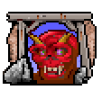 Foranamo Foranamo.gif |
Foranamo vision updated
npc_foranamo · unique
Foranamo
EN
ZH EN ref current · 71.2 KB · 2026-07-11 10:14:55
ZH ref current · 66.7 KB · 2026-07-11 10:14:22 |
Current English prompt
Male, middle-aged, Deep, gravelly voice with a commanding tone, conveying anger and resistance while maintaining a steady pace; retain character context: Male, gargoyle, angry resistant voice; visible traits: angry, gargoyle-like appearance with sharp features and a menacing expression; speaking pace: natural medium tempo, clear and steady; pitch: low, resonant chest voice Current Chinese prompt
男性，中年，沉穩有權威感，低沉有質感，語速自然中等，清晰穩定，音高偏低，胸腔共鳴明顯，角色音色細節：Male, middle-aged, Deep, gravelly voice with a commanding tone, conveying anger and resistance while maintaining a steady pace; retain character context: Male, gargoyle, angry resistant voice; visible traits: angry, gargoyle-like appearance with sharp features and a menacing expression; speaking pace: natural medium tempo, clear and steady; pitch: low, resonant chest voice，用標準的普通話朗讀 |
Vision prompt
Male, middle-aged, Deep, gravelly voice with a commanding tone, conveying anger and resistance while maintaining a steady pace; retain character context: Male, gargoyle, angry resistant voice; visible traits: angry, gargoyle-like appearance with sharp features and a menacing expression; speaking pace: natural medium tempo, clear and steady; pitch: low, resonant chest voice Previous prompt
Male, gargoyle, angry resistant voice Traits
angry, gargoyle-like appearance with sharp features and a menacing expression Temperament
aggressive, resistant to influence Model: qwen2.5vl:7b
|
Reference EN text
The gargoyle's anger is so great that he resists the spell. The other gargoyle also stands. Anger flashes across his face as he points a finger at you and demands to know who you are. Reference ZH text
這隻石像鬼的憤怒如此強烈，以至於他抵抗了法術。另一隻石像鬼也站了起來，憤怒閃過他的臉龐，他用手指著你，要求知道你是誰。 |
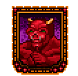 Forbrak Forbrak.gif |
Forbrak vision updated
npc_forbrak · unique
Forbrak
EN
ZH EN ref current · 91.2 KB · 2026-07-11 13:20:30
ZH ref current · 68.8 KB · 2026-07-11 13:19:51 |
Current English prompt
Male gargoyle research assistant, polite and academic, with gravelly formal diction and stone-like resonance. Curious, precise, and non-human. speaking pace: slow measured academic cadence; pitch: low gravelly gargoyle register Current Chinese prompt
男性石像鬼研究助手，禮貌、學術、精確，聲音有砂礫感和石質共鳴，帶非人類的正式感。不要普通溫柔人類男聲。語速偏慢，像學術說明，音高低沉砂礫石像鬼聲線，用標準的普通話朗讀 |
Vision prompt
Male gargoyle research assistant, polite and academic, with gravelly formal diction and stone-like resonance. Curious, precise, and non-human. speaking pace: slow measured academic cadence; pitch: low gravelly gargoyle register Previous prompt
Male, gargoyle, friendly research assistant, polite interested voice Traits
deep voice, slightly gravelly tone, authoritative yet gentle Temperament
wise, experienced, patient Model: qwen2.5vl:7b
|
Reference EN text
"To believe there are disagreements between the old philosophy and the new. To expect no violence, but to ask you to seek the trainer and healer. To know they are observant and may have seen something. To also suggest you speak with members of The Fellowship." Reference ZH text
「是個獲取知識和鍛鍊的絕佳地點。由名叫 Quaeven 的石像鬼管理。這個 Quaeven 非常有學問。而且，像 Silamo 一樣，也是無翼的。」 |
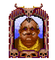 Forsythe Forsythe.gif |
Forsythe vision updated
npc_forsythe · unique
Forsythe
EN
ZH EN ref current · 101.8 KB · 2026-07-11 10:17:29
ZH ref current · 48.1 KB · 2026-07-11 10:16:39 |
Current English prompt
Deep, resonant voice with a hint of weariness and authority, conveying wisdom and resolve; retain character context: Male, 30s-40s, terrified ghost, fearful and trembling voice, desperate; visible traits: weathered, wise, authoritative; speaking pace: slow and measured, with deliberate pauses; pitch: low, resonant chest voice Current Chinese prompt
男性，30-50歲，沉穩有權威感，低沉有質感，語速沉穩，帶有智慧與閱歷，語速偏慢，停頓沉穩，音高偏低，胸腔共鳴明顯，角色音色細節：Deep, resonant voice with a hint of weariness and authority, conveying wisdom and resolve; retain character context: Male, 30s-40s, terrified ghost, fearful and trembling voice, desperate; visible traits: weathered, wise, authoritative; speaking pace: slow and measured, with deliberate pauses; pitch: low, resonant chest voice，用標準的普通話朗讀 |
Vision prompt
Deep, resonant voice with a hint of weariness and authority, conveying wisdom and resolve; retain character context: Male, 30s-40s, terrified ghost, fearful and trembling voice, desperate; visible traits: weathered, wise, authoritative; speaking pace: slow and measured, with deliberate pauses; pitch: low, resonant chest voice Previous prompt
Male, 30s-40s, terrified ghost, fearful and trembling voice, desperate Traits
weathered, wise, authoritative Temperament
resolute yet weary Model: qwen2.5vl:7b
|
Reference EN text
"Oh, goodness no. I do not think I'm the one thou wantest for that job. No, I should think not. Maybe thou shouldst ask all of the townsfolk first. If none of them will do it, I might just think about it. Yes, that's right, thou shouldst just ask the others, then come back here to tell me who the poor soul is." He smiles at his own cleverness. Reference ZH text
你看到一個幽靈般的男人蜷縮在角落裡。他以防禦的姿勢舉著生命護符，瘋狂地環顧房間，但沒有注意到你。 |
Frank FranktheFoxU7.png |
Frank vision updated
npc_frank · unique
Frank
EN
ZH EN ref current · 49.3 KB · 2026-07-11 10:18:19
ZH ref current · 55.5 KB · 2026-07-11 10:17:57 |
Current English prompt
A mature male with a fox-like voice, authoritative and slightly playful, delivering dialogue with a steady pace and warm tone; retain character context: Male, fox, sly clever voice, standing on hind legs; visible traits: fox-like, sly expression, standing on hind legs; speaking pace: brisk, lively, with expressive timing; pitch: medium-low, clear masculine range Current Chinese prompt
男性，中年，溫暖友善，活潑有戲劇感，沉穩有權威感，語氣有活力，語速偏快，節奏活潑且富表情，音高偏低，胸腔共鳴明顯，角色音色細節：A mature male with a fox-like voice, authoritative and slightly playful, delivering dialogue with a steady pace and warm tone; retain character context: Male, fox, sly clever voice, standing on hind legs; visible traits: fox-like, sly expression, standing on hind legs; speaking pace: brisk, lively, with expressive timing; pitch: medium-low, clear masculine range，用標準的普通話朗讀 |
Vision prompt
A mature male with a fox-like voice, authoritative and slightly playful, delivering dialogue with a steady pace and warm tone; retain character context: Male, fox, sly clever voice, standing on hind legs; visible traits: fox-like, sly expression, standing on hind legs; speaking pace: brisk, lively, with expressive timing; pitch: medium-low, clear masculine range Previous prompt
Male, fox, sly clever voice, standing on hind legs Traits
fox-like, sly expression, standing on hind legs Temperament
authoritative yet playful Model: qwen2.5vl:7b
|
Reference EN text
"That is the reason for thine offensive mouth odor. I have not seen anything that yellow since the time thy fellow Shamino ran away from a battle in fear." Reference ZH text
「而且，」他停頓了一下，非常靠近地盯著你的臉，「我從沒注意到你的鼻子有多大。你還能找到足夠的空氣呼吸真是個奇蹟。」 |
Gargan Gargan.gif |
Gargan vision updated
npc_gargan · unique
Gargan
EN
ZH EN ref current · 103.2 KB · 2026-07-11 10:19:56
ZH ref current · 84.1 KB · 2026-07-11 10:19:05 |
Current English prompt
Deep and gravelly, with a hint of wheezing, conveying wisdom and experience in a friendly yet authoritative manner; retain character context: Male, elderly, salty old sailor, rough raspy voice, wheezing cough, gruff; visible traits: salt-and-pepper beard, weathered face, tobacco-stained clothing; speaking pace: slow and measured, with deliberate pauses; pitch: low, resonant chest voice Current Chinese prompt
男性，年長，溫暖友善，沉穩有權威感，低沉有質感，語速沉穩，語速偏慢，停頓沉穩，音高偏低，胸腔共鳴明顯，角色音色細節：Deep and gravelly, with a hint of wheezing, conveying wisdom and experience in a friendly yet authoritative manner; retain character context: Male, elderly, salty old sailor, rough raspy voice, wheezing cough, gruff; visible traits: salt-and-pepper beard, weathered face, tobacco-stained clothing; speaking pace: slow and measured, with deliberate pauses; pitch: low, resonant chest voice，用標準的普通話朗讀 |
Vision prompt
Deep and gravelly, with a hint of wheezing, conveying wisdom and experience in a friendly yet authoritative manner; retain character context: Male, elderly, salty old sailor, rough raspy voice, wheezing cough, gruff; visible traits: salt-and-pepper beard, weathered face, tobacco-stained clothing; speaking pace: slow and measured, with deliberate pauses; pitch: low, resonant chest voice Previous prompt
Male, elderly, salty old sailor, rough raspy voice, wheezing cough, gruff Traits
salt-and-pepper beard, weathered face, tobacco-stained clothing Temperament
gruff but friendly, seasoned sailor with a salty tongue Model: qwen2.5vl:7b
|
Reference EN text
"Matey, I have always seen pirates and sailors with peglegs and hooks. If thou hast seen one, thou hast seen another." But the man suddenly frowns. "Hmm. Now that thou dost mention it, I -did- see a man with a hook late last night after sundown. I was leaving the shop and saw him outside. There was a wingless gargoyle with him. They were walking east." Reference ZH text
「是的，那艘船昨晚停泊在這裡。」他查看了他的日誌。「她在日出時開往 Britain 。我不記得有看到任何人上船或下船。」～ Gargan 哼了一聲，又咳嗽了幾下。 |
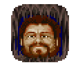 Garok Garok.PNG |
Garok vision updated
npc_garok · unique
Garok
EN
ZH EN ref current · 102.4 KB · 2026-07-11 10:21:24
ZH ref current · 73.3 KB · 2026-07-11 10:20:35 |
Current English prompt
Deep and authoritative, with a hint of urgency in the voice, conveying both intensity and suspicion; retain character context: Male, 30s-40s, intense mage, suspicious and intense voice, slightly manic; visible traits: wild eyes, intense mage; speaking pace: uneven and slightly tense, with occasional quick phrases; pitch: low, resonant chest voice Current Chinese prompt
男性，30-40歲，沉穩有權威感，低沉有質感，語氣有活力，語速偏快，節奏活潑且富表情，音高偏低，胸腔共鳴明顯，角色音色細節：Deep and authoritative, with a hint of urgency in the voice, conveying both intensity and suspicion; retain character context: Male, 30s-40s, intense mage, suspicious and intense voice, slightly manic; visible traits: wild eyes, intense mage; speaking pace: uneven and slightly tense, with occasional quick phrases; pitch: low, resonant chest voice，用標準的普通話朗讀 |
Vision prompt
Deep and authoritative, with a hint of urgency in the voice, conveying both intensity and suspicion; retain character context: Male, 30s-40s, intense mage, suspicious and intense voice, slightly manic; visible traits: wild eyes, intense mage; speaking pace: uneven and slightly tense, with occasional quick phrases; pitch: low, resonant chest voice Previous prompt
Male, 30s-40s, intense mage, suspicious and intense voice, slightly manic Traits
wild eyes, intense mage Temperament
suspicious, slightly manic Model: qwen2.5vl:7b
|
Reference EN text
"Grrrr! They are a thorn in my side! They have been seeking me for the past three years! I neglected to report a certain amount of income for reagent distribution, and somehow they found me out. By the way, if thou shouldst ever care to visit me in the mountains, I can sell thee reagents at reduced prices!" Reference ZH text
「我腦海裡有一個聲音。某種惡魔之類的。它總是祝賀我做了某些事。然後其他時候又因為某些事罵我。我『知道』那不是我的良心。我『知道』『他』聽起來像什麼！這是……另一個人。」 |
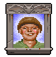 Garritt Garritt.gif |
Garritt vision updated
npc_garritt · unique
Garritt
EN
ZH EN ref current · 57.0 KB · 2026-07-11 10:22:16
ZH ref current · 50.9 KB · 2026-07-11 10:21:49 |
Current English prompt
A youthful, energetic male voice with a warm, inviting tone, conveying enthusiasm and friendliness; retain character context: Male, teen-20s, cheerful young man, bright and friendly voice; visible traits: jovial young man with friendly demeanor; speaking pace: brisk, lively, with expressive timing; pitch: medium-low, clear masculine range Current Chinese prompt
男性，年輕，溫暖友善，語氣有活力，語速偏快，節奏活潑且富表情，音高偏低，胸腔共鳴明顯，角色音色細節：A youthful, energetic male voice with a warm, inviting tone, conveying enthusiasm and friendliness; retain character context: Male, teen-20s, cheerful young man, bright and friendly voice; visible traits: jovial young man with friendly demeanor; speaking pace: brisk, lively, with expressive timing; pitch: medium-low, clear masculine range，用標準的普通話朗讀 |
Vision prompt
A youthful, energetic male voice with a warm, inviting tone, conveying enthusiasm and friendliness; retain character context: Male, teen-20s, cheerful young man, bright and friendly voice; visible traits: jovial young man with friendly demeanor; speaking pace: brisk, lively, with expressive timing; pitch: medium-low, clear masculine range Previous prompt
Male, teen-20s, cheerful young man, bright and friendly voice Traits
jovial young man with friendly demeanor Temperament
cheerful and approachable Model: qwen2.5vl:7b
|
Reference EN text
"I thought that if Tobias were accused of stealing something that everyone would notice, his mother would join The Fellowship and force him to join, too. It would improve their lives and force them to see the truth about themselves." Reference ZH text
「我已經說過一千次了。Tobias 性格軟弱！他和他的母親很窮是因為他們很懶惰。現在證明我是對的，因為 Tobias 是個小偷。一個被抓住的小偷！」 |
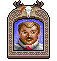 Geoffrey GeoffreyU7.PNG |
Geoffrey vision updated
npc_geoffrey · unique
Geoffrey
EN
ZH EN ref current · 90.7 KB · 2026-07-11 10:23:39
ZH ref current · 81.1 KB · 2026-07-11 10:22:54 |
Current English prompt
A mature male with a warm and confident tone, speaking at a steady pace to convey authority and friendliness; retain character context: Male, 40s, captain of the guard, warm familiar voice, laughing; visible traits: warm, familiar, authoritative; speaking pace: natural medium tempo, clear and steady; pitch: medium-low, clear masculine range Current Chinese prompt
男性，中年，溫暖友善，沉穩有權威感，語速自然中等，清晰穩定，音高偏低，胸腔共鳴明顯，角色音色細節：A mature male with a warm and confident tone, speaking at a steady pace to convey authority and friendliness; retain character context: Male, 40s, captain of the guard, warm familiar voice, laughing; visible traits: warm, familiar, authoritative; speaking pace: natural medium tempo, clear and steady; pitch: medium-low, clear masculine range，用標準的普通話朗讀 |
Vision prompt
A mature male with a warm and confident tone, speaking at a steady pace to convey authority and friendliness; retain character context: Male, 40s, captain of the guard, warm familiar voice, laughing; visible traits: warm, familiar, authoritative; speaking pace: natural medium tempo, clear and steady; pitch: medium-low, clear masculine range Previous prompt
Male, 40s, captain of the guard, warm familiar voice, laughing Traits
warm, familiar, authoritative Temperament
confident, friendly, steady Model: qwen2.5vl:7b
|
Reference EN text
"It is apparently another difference in our two worlds. Whenever thou shalt return it is as if thy physical body has arrived here for the first time. It is the reason why many of thine own companions have chosen to stay here even though they have aged in Britannian time." Reference ZH text
「這顯然是我們兩個世界的另一個不同之處。每當你回來時，就好像你的肉體是第一次來到這裡一樣。這也是為什麼你許多同伴選擇留在這裡，儘管他們在 Britannia 的時間流逝中已經變老了。」 |
Gharl GharlU7.png |
Gharl vision updated
npc_gharl · unique
Gharl
EN
ZH EN ref current · 44.4 KB · 2026-07-11 10:24:32
ZH ref current · 60.1 KB · 2026-07-11 10:24:10 |
Current English prompt
Deep, raspy, middle-aged troll voice, slow and deliberate pace, conveying anger and hunger; retain character context: Male, troll, starving angry voice, deep growling; visible traits: troll with protruding ribs, growling voice; speaking pace: slow and measured, with deliberate pauses; pitch: low, resonant chest voice Current Chinese prompt
男性，中年，低沉有質感，語速沉穩，語速偏慢，停頓沉穩，音高偏低，胸腔共鳴明顯，角色音色細節：Deep, raspy, middle-aged troll voice, slow and deliberate pace, conveying anger and hunger; retain character context: Male, troll, starving angry voice, deep growling; visible traits: troll with protruding ribs, growling voice; speaking pace: slow and measured, with deliberate pauses; pitch: low, resonant chest voice，用標準的普通話朗讀 |
Vision prompt
Deep, raspy, middle-aged troll voice, slow and deliberate pace, conveying anger and hunger; retain character context: Male, troll, starving angry voice, deep growling; visible traits: troll with protruding ribs, growling voice; speaking pace: slow and measured, with deliberate pauses; pitch: low, resonant chest voice Previous prompt
Male, troll, starving angry voice, deep growling Traits
troll with protruding ribs, growling voice Temperament
angry and hungry Model: qwen2.5vl:7b
|
Reference EN text
You see a troll, sulking in his cell. As he breathes, you can see his ribs protrude out from under his hide. Reference ZH text
你看到一個巨魔 (troll) 在他的牢房裡生悶氣。當他呼吸時，你可以看到他的肋骨從皮下凸出來。 |
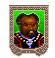 Glenno Glenno.gif |
Glenno vision updated
npc_glenno · unique
Glenno
EN
ZH EN ref current · 106.4 KB · 2026-07-11 10:26:20
ZH ref current · 91.4 KB · 2026-07-11 10:25:24 |
Current English prompt
Deep and authoritative, with a hint of playful mischief in the tone. Pace is steady but engaging; retain character context: Male, 20s-30s, handsome fit man, charming slightly flirtatious voice; visible traits: handsome, muscular with an air of mischief; speaking pace: brisk, lively, with expressive timing; pitch: low, resonant chest voice Current Chinese prompt
男性，20-40歲，活潑有戲劇感，沉穩有權威感，低沉有質感，語氣有活力，語速偏快，節奏活潑且富表情，音高偏低，胸腔共鳴明顯，角色音色細節：Deep and authoritative, with a hint of playful mischief in the tone. Pace is steady but engaging; retain character context: Male, 20s-30s, handsome fit man, charming slightly flirtatious voice; visible traits: handsome, muscular with an air of mischief; speaking pace: brisk, lively, with expressive timing; pitch: low, resonant chest voice，用標準的普通話朗讀 |
Vision prompt
Deep and authoritative, with a hint of playful mischief in the tone. Pace is steady but engaging; retain character context: Male, 20s-30s, handsome fit man, charming slightly flirtatious voice; visible traits: handsome, muscular with an air of mischief; speaking pace: brisk, lively, with expressive timing; pitch: low, resonant chest voice Previous prompt
Male, 20s-30s, handsome fit man, charming slightly flirtatious voice Traits
handsome, muscular with an air of mischief Temperament
confident, slightly mischievous Model: qwen2.5vl:7b
|
Reference EN text
"Yes, I am a member. If it were not for The Fellowship, I would not be manager of The Baths! I served the group well, trusted my many brothers, strived for unity, and... well, my worthiness preceded my reward! And all of this... was my reward!" Glenno smiles as if he were a tomcat who had just swallowed a mouse. Reference ZH text
「是的，我是會員。如果不是因為友誼會，我就不會成為澡堂的經理！我為組織盡心盡力，信賴我的眾多弟兄，致力於合一，而且……嗯，我的價值先行於報償！而這一切……就是我的報償！」 Glenno 笑了，就像一隻剛吞下老鼠的公貓。 |
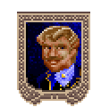 Gordy Gordy.gif |
Gordy vision updated
npc_gordy · unique
Gordy
EN
ZH EN ref current · 105.3 KB · 2026-07-11 10:28:09
ZH ref current · 96.1 KB · 2026-07-11 10:27:14 |
Current English prompt
Deep and authoritative with a touch of oily sophistication, steady pace, warm yet commanding tone; retain character context: Male, 40s, wealthy pirate, oily pretentious voice; visible traits: elegantly dressed, rich, reeks of pomade; speaking pace: natural medium tempo, clear and steady; pitch: low, resonant chest voice Current Chinese prompt
男性，中年，溫暖友善，沉穩有權威感，低沉有質感，語速自然中等，清晰穩定，音高偏低，胸腔共鳴明顯，角色音色細節：Deep and authoritative with a touch of oily sophistication, steady pace, warm yet commanding tone; retain character context: Male, 40s, wealthy pirate, oily pretentious voice; visible traits: elegantly dressed, rich, reeks of pomade; speaking pace: natural medium tempo, clear and steady; pitch: low, resonant chest voice，用標準的普通話朗讀 |
Vision prompt
Deep and authoritative with a touch of oily sophistication, steady pace, warm yet commanding tone; retain character context: Male, 40s, wealthy pirate, oily pretentious voice; visible traits: elegantly dressed, rich, reeks of pomade; speaking pace: natural medium tempo, clear and steady; pitch: low, resonant chest voice Previous prompt
Male, 40s, wealthy pirate, oily pretentious voice Traits
elegantly dressed, rich, reeks of pomade Temperament
confident, slightly pretentious Model: qwen2.5vl:7b
|
Reference EN text
"The House of Games was established six years ago with the funds of... an interested party. It attracts people from all over Britannia who wish to live dangerously with their money. The business is very profitable." He pats his pouch, and coins clink. "Very profitable." He grins. Reference ZH text
「賭坊 (House of Games) 是六年前用……一位利益相關者的資金建立的。它吸引了來自全 Britannia 想要用他們的錢過危險生活的人。這門生意非常有利可圖。」他拍了拍他的袋子，發出金幣叮噹的聲音。「非常有利可圖。」他笑著說。 |
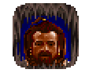 Gorn Gorn.gif |
Gorn vision updated
npc_gorn · unique
Gorn
EN
ZH EN ref current · 110.1 KB · 2026-07-11 10:29:26
ZH ref current · 53.1 KB · 2026-07-11 10:28:35 |
Current English prompt
Deep, resonant voice with a hint of authority and warmth, conveying experience and wisdom; retain character context: Male, 40s, serious dwarf warrior, deep gruff voice, loyal and wary; visible traits: bearded warrior with stern expression; speaking pace: natural medium tempo, clear and steady; pitch: low, resonant chest voice Current Chinese prompt
男性，中年，溫暖友善，沉穩有權威感，低沉有質感，帶有智慧與閱歷，語速自然中等，清晰穩定，音高偏低，胸腔共鳴明顯，角色音色細節：Deep, resonant voice with a hint of authority and warmth, conveying experience and wisdom; retain character context: Male, 40s, serious dwarf warrior, deep gruff voice, loyal and wary; visible traits: bearded warrior with stern expression; speaking pace: natural medium tempo, clear and steady; pitch: low, resonant chest voice，用標準的普通話朗讀 |
Vision prompt
Deep, resonant voice with a hint of authority and warmth, conveying experience and wisdom; retain character context: Male, 40s, serious dwarf warrior, deep gruff voice, loyal and wary; visible traits: bearded warrior with stern expression; speaking pace: natural medium tempo, clear and steady; pitch: low, resonant chest voice Previous prompt
Male, 40s, serious dwarf warrior, deep gruff voice, loyal and wary Traits
bearded warrior with stern expression Temperament
authoritative and slightly gruff Model: qwen2.5vl:7b
|
Reference EN text
Gorn seems distracted for a moment. He puts his hand to his ear as if he is listening to something. He looks back at you with a shocked expression on his face. "I haf just heard de voice ov Brom and he says dat I should not trust thee! I tought dat thou vert my friend, Avatar! Go avay! I do not vish to speak vith thee again!" Reference ZH text
你看到一張熟悉的臉，是個嚴肅的大鬍子戰士，你曾在上一次前往 Britannia 的旅途中見過他。 |
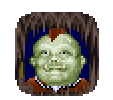 Grod Grod.gif |
Grod vision updated
npc_grod · unique
Grod
EN
ZH EN ref current · 80.5 KB · 2026-07-11 10:30:40
ZH ref current · 75.4 KB · 2026-07-11 10:30:02 |
Current English prompt
A middle-aged male troll with a deep, gruff voice that conveys authority and slight displeasure. Pace is steady and deliberate; retain character context: Male, troll, deep dumb gruff voice, growling and angry, simple speech; visible traits: Troll-like appearance with a deep voice; speaking pace: slow and measured, with deliberate pauses; pitch: low, resonant chest voice Current Chinese prompt
男性，中年，低沉有質感，語速沉穩，語速偏慢，停頓沉穩，音高偏低，胸腔共鳴明顯，角色音色細節：A middle-aged male troll with a deep, gruff voice that conveys authority and slight displeasure. Pace is steady and deliberate; retain character context: Male, troll, deep dumb gruff voice, growling and angry, simple speech; visible traits: Troll-like appearance with a deep voice; speaking pace: slow and measured, with deliberate pauses; pitch: low, resonant chest voice，用標準的普通話朗讀 |
Vision prompt
A middle-aged male troll with a deep, gruff voice that conveys authority and slight displeasure. Pace is steady and deliberate; retain character context: Male, troll, deep dumb gruff voice, growling and angry, simple speech; visible traits: Troll-like appearance with a deep voice; speaking pace: slow and measured, with deliberate pauses; pitch: low, resonant chest voice Previous prompt
Male, troll, deep dumb gruff voice, growling and angry, simple speech Traits
Troll-like appearance with a deep voice Temperament
Gruff but not angry; slightly disapproving tone Model: qwen2.5vl:7b
|
Reference EN text
"Except that one. He not scream. He just talk. And talk. I get so bored I get mad. So I torture more. And," he throws up his hands, "he just talk more! I no know what to do." Reference ZH text
「除了那個。他不尖叫。他只會說話。說個不停。我無聊到快瘋了。所以我折磨得更多。結果，」他攤開雙手，「他說得更多了！我不知道該怎麼辦。」 |
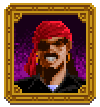 Hook Hook.png |
Hook vision updated
npc_hook · unique
Hook
EN
ZH EN ref current · 55.5 KB · 2026-07-11 10:31:42
ZH ref current · 67.9 KB · 2026-07-11 10:31:16 |
Current English prompt
Male, middle-aged, Deep, authoritative male voice with a hint of menace, conveying confidence and control; retain character context: Male ruthless killer, cold sharp voice, controlled menace, cruel and confident; visible traits: ruthless, cold, sharp voice; controlled menace; cruel and confident; speaking pace: natural medium tempo, clear and steady; pitch: low, resonant chest voice Current Chinese prompt
男性，中年，沉穩有權威感，低沉有質感，語速自然中等，清晰穩定，音高偏低，胸腔共鳴明顯，角色音色細節：Male, middle-aged, Deep, authoritative male voice with a hint of menace, conveying confidence and control; retain character context: Male ruthless killer, cold sharp voice, controlled menace, cruel and confident; visible traits: ruthless, cold, sharp voice; controlled menace; cruel and confident; speaking pace: natural medium tempo, clear and steady; pitch: low, resonant chest voice，用標準的普通話朗讀 |
Vision prompt
Male, middle-aged, Deep, authoritative male voice with a hint of menace, conveying confidence and control; retain character context: Male ruthless killer, cold sharp voice, controlled menace, cruel and confident; visible traits: ruthless, cold, sharp voice; controlled menace; cruel and confident; speaking pace: natural medium tempo, clear and steady; pitch: low, resonant chest voice Previous prompt
Male ruthless killer, cold sharp voice, controlled menace, cruel and confident Traits
ruthless, cold, sharp voice; controlled menace; cruel and confident Temperament
authoritative, commanding, slightly menacing Model: qwen2.5vl:7b
|
Reference EN text
The gem glows brighter, "'Tis good to see the last of thee, also, old man. Perhaps in another life, I shall be thy master, and thou the slave." Reference ZH text
寶石發出更亮的光芒，「終於不用再看到你了真好，老頭。也許在來生，我會是你的主人，而你是奴隸。」惡魔發出一聲令人毛骨悚然的輕笑。 |
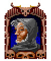 Horance Horance.png |
Horance vision updated
npc_horance · unique
Horance
EN
ZH EN ref current · 113.3 KB · 2026-07-11 10:33:18
ZH ref current · 88.7 KB · 2026-07-11 10:32:28 |
Current English prompt
A mid-40s male with a ghostly, hollow voice, speaking in a slow, distant tone that conveys a sense of stoicism and melancholy; retain character context: Male, ghost, hollow and echoing voice, ethereal and haunting, speaks as if from far away; visible traits: ghostly, hollow eyes, ethereal appearance; speaking pace: slow and measured, with deliberate pauses; pitch: low, resonant chest voice Current Chinese prompt
男性，中年，低沉有質感，語速沉穩，語速偏慢，停頓沉穩，音高偏低，胸腔共鳴明顯，角色音色細節：A mid-40s male with a ghostly, hollow voice, speaking in a slow, distant tone that conveys a sense of stoicism and melancholy; retain character context: Male, ghost, hollow and echoing voice, ethereal and haunting, speaks as if from far away; visible traits: ghostly, hollow eyes, ethereal appearance; speaking pace: slow and measured, with deliberate pauses; pitch: low, resonant chest voice，用標準的普通話朗讀 |
Vision prompt
A mid-40s male with a ghostly, hollow voice, speaking in a slow, distant tone that conveys a sense of stoicism and melancholy; retain character context: Male, ghost, hollow and echoing voice, ethereal and haunting, speaks as if from far away; visible traits: ghostly, hollow eyes, ethereal appearance; speaking pace: slow and measured, with deliberate pauses; pitch: low, resonant chest voice Previous prompt
Male, ghost, hollow and echoing voice, ethereal and haunting, speaks as if from far away Traits
ghostly, hollow eyes, ethereal appearance Temperament
stoic, distant, slightly melancholic Model: qwen2.5vl:7b
|
Reference EN text
"I thank thee, milord. That dark spirit had suppressed my will for so long that I was not sure I had one left. Thou hast done a great deed for Skara Brae, for myself and, indeed, all of Britannia, but then I suppose this is merely a matter of course for one such as thee. My gratitude is thine." He bows deeply to you. Reference ZH text
隨著靈魂囚籠化為塵土，巫妖發生了巨大的轉變。在邪靈被囚禁的地方，你看到了一個熟悉的身影。是 Horance！他是個鬼魂，但他看起來更像個人類，而不是不死生物。 |
Horffe Horffe.gif |
Horffe vision updated
npc_horffe · unique
Horffe
EN
ZH EN ref current · 55.4 KB · 2026-07-11 10:33:55
ZH ref current · 30.7 KB · 2026-07-11 10:33:31 |
Current English prompt
Mid-thirties male with a deep, authoritative voice, conveying seriousness and command; retain character context: Male, gargoyle, serious formal voice; visible traits: stern expression, serious demeanor; speaking pace: natural medium tempo, clear and steady; pitch: low, resonant chest voice Current Chinese prompt
男性，中年，沉穩有權威感，低沉有質感，語速自然中等，清晰穩定，音高偏低，胸腔共鳴明顯，角色音色細節：Mid-thirties male with a deep, authoritative voice, conveying seriousness and command; retain character context: Male, gargoyle, serious formal voice; visible traits: stern expression, serious demeanor; speaking pace: natural medium tempo, clear and steady; pitch: low, resonant chest voice，用標準的普通話朗讀 |
Vision prompt
Mid-thirties male with a deep, authoritative voice, conveying seriousness and command; retain character context: Male, gargoyle, serious formal voice; visible traits: stern expression, serious demeanor; speaking pace: natural medium tempo, clear and steady; pitch: low, resonant chest voice Previous prompt
Male, gargoyle, serious formal voice Traits
stern expression, serious demeanor Temperament
authoritative and commanding Model: qwen2.5vl:7b
|
Reference EN text
"To inform you that many fine warriors take up residence between the Hold's walls. To have little fear of an attack from bandits or vicious animals." Reference ZH text
「被命令保護居住在 Serpent's Hold 的人民，並維持騎士的整體秩序。」 |
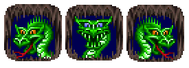 Hydra HydraBrothersU7.png |
Hydra vision updated
npc_hydra · unique
Hydra, Shanda, Shando, Shandu
EN
ZH EN ref current · 58.7 KB · 2026-07-11 10:34:51
ZH ref current · 49.8 KB · 2026-07-11 10:34:23 |
Current English prompt
Deep, gravelly, authoritative tone with a commanding presence; mid-thirties masculine voice; retain character context: Creature, three-headed hydra, deep rumbling growling monster voice; visible traits: deep rumbling growling monster voice; speaking pace: natural medium tempo, clear and steady; pitch: very low, rumbling creature register Current Chinese prompt
生物，中年，沉穩有權威感，低沉有質感，語速自然中等，清晰穩定，音高很低，帶轟鳴感的生物聲線，角色音色細節：Deep, gravelly, authoritative tone with a commanding presence; mid-thirties masculine voice; retain character context: Creature, three-headed hydra, deep rumbling growling monster voice; visible traits: deep rumbling growling monster voice; speaking pace: natural medium tempo, clear and steady; pitch: very low, rumbling creature register，用標準的普通話朗讀 |
Vision prompt
Deep, gravelly, authoritative tone with a commanding presence; mid-thirties masculine voice; retain character context: Creature, three-headed hydra, deep rumbling growling monster voice; visible traits: deep rumbling growling monster voice; speaking pace: natural medium tempo, clear and steady; pitch: very low, rumbling creature register Previous prompt
Creature, three-headed hydra, deep rumbling growling monster voice Traits
deep rumbling growling monster voice Temperament
authoritative and commanding Model: qwen2.5vl:7b
|
Reference EN text
"Now that thou dost mention it, I am feeling a few hunger pangs myself. If we did not have to protect the Caddellite, I would eat this creature in a single gulp!" Reference ZH text
「這個生物長得有點像巨魔 (troll) ，只是聞起來稍微好一點。你覺得它會不會比巨魔更好吃， Shando ？」 |
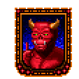 Inforlem Inforlem.gif |
Inforlem vision updated
npc_inforlem · unique
Inforlem
EN
ZH EN ref current · 56.1 KB · 2026-07-11 10:35:36
ZH ref current · 40.5 KB · 2026-07-11 10:35:09 |
Current English prompt
A middle-aged male voice, smooth and authoritative, with a pleasant tone that conveys warmth and authority; retain character context: Male, gargoyle, cheerful pleasant voice; visible traits: Pleasant expression with a gargoyle-like appearance; speaking pace: natural medium tempo, clear and steady; pitch: medium-low, clear masculine range Current Chinese prompt
男性，中年，溫暖友善，沉穩有權威感，語速自然中等，清晰穩定，音高偏低，胸腔共鳴明顯，角色音色細節：A middle-aged male voice, smooth and authoritative, with a pleasant tone that conveys warmth and authority; retain character context: Male, gargoyle, cheerful pleasant voice; visible traits: Pleasant expression with a gargoyle-like appearance; speaking pace: natural medium tempo, clear and steady; pitch: medium-low, clear masculine range，用標準的普通話朗讀 |
Vision prompt
A middle-aged male voice, smooth and authoritative, with a pleasant tone that conveys warmth and authority; retain character context: Male, gargoyle, cheerful pleasant voice; visible traits: Pleasant expression with a gargoyle-like appearance; speaking pace: natural medium tempo, clear and steady; pitch: medium-low, clear masculine range Previous prompt
Male, gargoyle, cheerful pleasant voice Traits
Pleasant expression with a gargoyle-like appearance Temperament
Warm and authoritative Model: qwen2.5vl:7b
|
Reference EN text
"To know of the conflicts between the altars and the Fellowship, but to have no information. To suggest you see Quan, The Fellowship leader here and ask him." Reference ZH text
「告訴你 Forbrak 對 Terfin 和其居民了解很多，而且，」他說，「也了解這裡的衝突。」 |
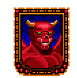 Inmanilem Inmanilem.gif |
Inmanilem vision updated
npc_inmanilem · unique
Inmanilem
EN
ZH EN ref current · 41.5 KB · 2026-07-11 10:36:11
ZH ref current · 36.0 KB · 2026-07-11 10:35:52 |
Current English prompt
Male, elderly, Deep, resonant voice with a gentle warmth, conveying both age and experience; retain character context: Male, gargoyle, friendly helpful voice; visible traits: Friendly gargoyle with horns and glowing eyes; speaking pace: slow and measured, with deliberate pauses; pitch: low, resonant chest voice Current Chinese prompt
男性，年長，溫暖友善，低沉有質感，語速沉穩，語速偏慢，停頓沉穩，音高偏低，胸腔共鳴明顯，角色音色細節：Male, elderly, Deep, resonant voice with a gentle warmth, conveying both age and experience; retain character context: Male, gargoyle, friendly helpful voice; visible traits: Friendly gargoyle with horns and glowing eyes; speaking pace: slow and measured, with deliberate pauses; pitch: low, resonant chest voice，用標準的普通話朗讀 |
Vision prompt
Male, elderly, Deep, resonant voice with a gentle warmth, conveying both age and experience; retain character context: Male, gargoyle, friendly helpful voice; visible traits: Friendly gargoyle with horns and glowing eyes; speaking pace: slow and measured, with deliberate pauses; pitch: low, resonant chest voice Previous prompt
Male, gargoyle, friendly helpful voice Traits
Friendly gargoyle with horns and glowing eyes. Temperament
Warm-hearted yet authoritative Model: qwen2.5vl:7b
|
Reference EN text
"To feel sorry, but to be busy with other things now. To ask you to come back when I have the time to heal you." Reference ZH text
「告訴你去找 Draxinusom ，人類，或是 Forbrak 。他們有許多關於 Terfin 的情報。」 |
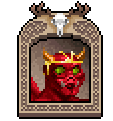 Inwisloklem Inwisloklem.gif |
Inwisloklem vision updated
npc_inwisloklem · unique
Inwisloklem
EN
ZH EN ref current · 104.5 KB · 2026-07-11 10:37:54
ZH ref current · 97.2 KB · 2026-07-11 10:37:03 |
Current English prompt
Male, elderly, Deep, resonant voice with a slow, deliberate pace, conveying wisdom and authority; retain character context: Male, gargoyle, intelligent wise voice; visible traits: Winged gargoyle with intelligent expression; speaking pace: slow and measured, with deliberate pauses; pitch: low, resonant chest voice Current Chinese prompt
男性，年長，低沉有質感，語速沉穩，帶有智慧與閱歷，語速偏慢，停頓沉穩，音高偏低，胸腔共鳴明顯，角色音色細節：Male, elderly, Deep, resonant voice with a slow, deliberate pace, conveying wisdom and authority; retain character context: Male, gargoyle, intelligent wise voice; visible traits: Winged gargoyle with intelligent expression; speaking pace: slow and measured, with deliberate pauses; pitch: low, resonant chest voice，用標準的普通話朗讀 |
Vision prompt
Male, elderly, Deep, resonant voice with a slow, deliberate pace, conveying wisdom and authority; retain character context: Male, gargoyle, intelligent wise voice; visible traits: Winged gargoyle with intelligent expression; speaking pace: slow and measured, with deliberate pauses; pitch: low, resonant chest voice Previous prompt
Male, gargoyle, intelligent wise voice Traits
Winged gargoyle with intelligent expression Temperament
Wisdom and authority Model: qwen2.5vl:7b
|
Reference EN text
"To be a lonely place. To be desolate. To be not what humans call `homey'. To desire to establish a new way of life for gargoyles in Britannia, and to eliminate the hatred and misunderstanding of our race in humans. To know that ignorance breeds bigotry. To be one of those who are correcting this." Reference ZH text
「是個孤寂的地方。很荒涼。不是人類所謂的『舒適家園』。渴望在 Britannia 為石像鬼建立一種新的生活方式，並消除人類對我們種族的仇恨和誤解。知道無知會滋生偏見。而我是正在糾正這點的其中一人。」 |
Iolo IoloU7.png |
Iolo vision updated
npc_iolo · unique
Iolo
EN
ZH EN ref current · 40.3 KB · 2026-07-11 10:38:40
ZH ref current · 61.6 KB · 2026-07-11 10:38:21 |
Current English prompt
Warm, elderly male voice with a gentle chuckle, conveying wisdom and authority while maintaining a friendly tone; retain character context: Male, elderly, warm and friendly companion, wise old soul with a gentle chuckle in his voice; visible traits: wise old soul with a gentle chuckle in his voice; speaking pace: slow and measured, with deliberate pauses; pitch: medium-low, clear masculine range Current Chinese prompt
男性，年長，溫暖友善，語速沉穩，帶有智慧與閱歷，語速偏慢，停頓沉穩，音高偏低，胸腔共鳴明顯，角色音色細節：Warm, elderly male voice with a gentle chuckle, conveying wisdom and authority while maintaining a friendly tone; retain character context: Male, elderly, warm and friendly companion, wise old soul with a gentle chuckle in his voice; visible traits: wise old soul with a gentle chuckle in his voice; speaking pace: slow and measured, with deliberate pauses; pitch: medium-low, clear masculine range，用標準的普通話朗讀 |
Vision prompt
Warm, elderly male voice with a gentle chuckle, conveying wisdom and authority while maintaining a friendly tone; retain character context: Male, elderly, warm and friendly companion, wise old soul with a gentle chuckle in his voice; visible traits: wise old soul with a gentle chuckle in his voice; speaking pace: slow and measured, with deliberate pauses; pitch: medium-low, clear masculine range Previous prompt
Male, elderly, warm and friendly companion, wise old soul with a gentle chuckle in his voice Traits
wise old soul with a gentle chuckle in his voice Temperament
warm and friendly companion; wise and authoritative Model: qwen2.5vl:7b
|
Reference EN text
Oh, but Avatar! Wait until I tell the others! They will be happy to see thee! Welcome to Trinsic! Reference ZH text
聖者 注意到這些十字弓箭上獨特的 Iolo 商標了嗎？它們是專為真正的 IOLO 十字弓提供最大效能而設計的，在 Yew 附近有售。 |
Iskander Iskander.gif |
Iskander vision updated
npc_iskander · unique
Iskander
EN
ZH EN ref current · 115.4 KB · 2026-07-11 10:40:24
ZH ref current · 99.1 KB · 2026-07-11 10:39:34 |
Current English prompt
Middle-aged, masculine voice with deep resonance and slow, deliberate pace. Warmth is present in the tone despite the irritation; retain character context: Male, cyclops, deep booming voice, slow and simple speech; visible traits: large cyclops with a single eye; speaking pace: slow and measured, with deliberate pauses; pitch: low, resonant chest voice Current Chinese prompt
男性，中年，溫暖友善，低沉有質感，語速沉穩，語速偏慢，停頓沉穩，音高偏低，胸腔共鳴明顯，角色音色細節：Middle-aged, masculine voice with deep resonance and slow, deliberate pace. Warmth is present in the tone despite the irritation; retain character context: Male, cyclops, deep booming voice, slow and simple speech; visible traits: large cyclops with a single eye; speaking pace: slow and measured, with deliberate pauses; pitch: low, resonant chest voice，用標準的普通話朗讀 |
Vision prompt
Middle-aged, masculine voice with deep resonance and slow, deliberate pace. Warmth is present in the tone despite the irritation; retain character context: Male, cyclops, deep booming voice, slow and simple speech; visible traits: large cyclops with a single eye; speaking pace: slow and measured, with deliberate pauses; pitch: low, resonant chest voice Previous prompt
Male, cyclops, deep booming voice, slow and simple speech Traits
large cyclops with a single eye Temperament
irritated but authoritative Model: qwen2.5vl:7b
|
Reference EN text
"I know that Eiko and Amanda have been after me for some time looking for vengeance. I say let them come. I will not stand still for them nor shall I run from them. When they find me they are welcome to try and take their justice from me. If they win then it was meant to be. If they do not I will have no regrets." Reference ZH text
「我知道 Eiko 和 Amanda 一直在追捕我尋求復仇。我說讓她們來吧。我不會站在原地等她們，也不會逃避她們。當她們找到我時，歡迎她們試著從我這裡討回她們的正義。如果她們贏了，那也是命中注定。如果她們輸了，我也沒有遺憾。」 |
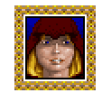 Jaana Jaana.gif |
Jaana vision updated
npc_jaana · unique
Jaana
EN
ZH EN ref current · 87.2 KB · 2026-07-11 10:41:31
ZH ref current · 38.4 KB · 2026-07-11 10:40:44 |
Current English prompt
A soothing, mature female voice with a gentle cadence and a touch of authority, conveying wisdom and tranquility; retain character context: Female, 40s, wise druidess, calm and spiritual voice, gentle authority; visible traits: wisdom, calmness, spiritual presence; speaking pace: slow and measured, with deliberate pauses; pitch: medium-high, clear feminine range Current Chinese prompt
女性，中年，溫暖友善，柔和，語速沉穩，帶有智慧與閱歷，語速偏慢，停頓沉穩，音高偏低，胸腔共鳴明顯，角色音色細節：A soothing, mature female voice with a gentle cadence and a touch of authority, conveying wisdom and tranquility; retain character context: Female, 40s, wise druidess, calm and spiritual voice, gentle authority; visible traits: wisdom, calmness, spiritual presence; speaking pace: slow and measured, with deliberate pauses; pitch: medium-high, clear feminine range，用標準的普通話朗讀 |
Vision prompt
A soothing, mature female voice with a gentle cadence and a touch of authority, conveying wisdom and tranquility; retain character context: Female, 40s, wise druidess, calm and spiritual voice, gentle authority; visible traits: wisdom, calmness, spiritual presence; speaking pace: slow and measured, with deliberate pauses; pitch: medium-high, clear feminine range Previous prompt
Female, 40s, wise druidess, calm and spiritual voice, gentle authority Traits
wisdom, calmness, spiritual presence Temperament
gentle yet authoritative Model: qwen2.5vl:7b
|
Reference EN text
"My magic has been affected by something in the air, but I have found that my senses are still with me. Hast thou noticed that the mages in the land are afflicted in the head? It is most disconcerting. Nevertheless, I can manage to cast a spell or two most of the time." Reference ZH text
你很驚訝地看到你的老同伴 Jaana ，自從你上次造訪以來，她看起來只有稍微老了一點。 |
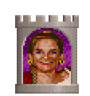 Jehanne Jehanne.gif |
Jehanne vision updated
npc_jehanne · unique
Jehanne
EN
ZH EN ref current · 100.8 KB · 2026-07-11 10:43:11
ZH ref current · 90.9 KB · 2026-07-11 10:42:20 |
Current English prompt
A mature female voice with a refined tone, speaking in a polite manner with a slight accent, conveying warmth and authority; retain character context: Female, 40s, noblewoman, refined polite voice, curtsy in speech; visible traits: noblewoman with refined features, wearing a red dress and gold jewelry; speaking pace: natural medium tempo, clear and steady; pitch: medium-high, clear feminine range Current Chinese prompt
女性，中年，溫暖友善，語速自然中等，清晰穩定，音高偏高，清晰女性聲線，角色音色細節：A mature female voice with a refined tone, speaking in a polite manner with a slight accent, conveying warmth and authority; retain character context: Female, 40s, noblewoman, refined polite voice, curtsy in speech; visible traits: noblewoman with refined features, wearing a red dress and gold jewelry; speaking pace: natural medium tempo, clear and steady; pitch: medium-high, clear feminine range，用標準的普通話朗讀 |
Vision prompt
A mature female voice with a refined tone, speaking in a polite manner with a slight accent, conveying warmth and authority; retain character context: Female, 40s, noblewoman, refined polite voice, curtsy in speech; visible traits: noblewoman with refined features, wearing a red dress and gold jewelry; speaking pace: natural medium tempo, clear and steady; pitch: medium-high, clear feminine range Previous prompt
Female, 40s, noblewoman, refined polite voice, curtsy in speech Traits
noblewoman with refined features, wearing a red dress and gold jewelry. Temperament
polite and composed Model: qwen2.5vl:7b
|
Reference EN text
"Well, it was once the magnificent `Constellation.' However, 'twas destroyed by the ship's captain, himself, to prevent it from falling into the hands of attacking pirates. What little remained was rebuilt into an even finer ship, `The Dragon's Breath?' Art thou interested in purchasing it for 600 gold?" Reference ZH text
「不久前，我的 Pendaran 還是一位高貴的騎士，一位女士可以為之驕傲的騎士。但現在，」她搖搖頭，「為了抗議他認為不列顛尼亞政府的錯誤，他毀壞了我們敬愛的 Lord British 的雕像。」她開始啜泣。 |
Jesse Jesse.jpg |
Jesse vision updatedchanged
npc_jesse · unique
Jesse
EN
ZH EN ref current · 106.5 KB · 2026-07-11 10:44:29
ZH ref current · 50.5 KB · 2026-07-11 10:43:37 |
Current English prompt
Deep, authoritative voice with a hint of theatrical flair, conveying confidence and warmth; retain character context: Male, 20s-30s, tall thin actor, theatrical voice, doing female roles; visible traits: tall, thin with knobby knees, wearing a woman's wig in drag; speaking pace: brisk, lively, with expressive timing; pitch: low, resonant chest voice Current Chinese prompt
男性，20-40歲，溫暖友善，活潑有戲劇感，沉穩有權威感，低沉有質感，語速偏快，節奏活潑且富表情，音高偏低，胸腔共鳴明顯，角色音色細節：Deep, authoritative voice with a hint of theatrical flair, conveying confidence and warmth; retain character context: Male, 20s-30s, tall thin actor, theatrical voice, doing female roles; visible traits: tall, thin with knobby knees, wearing a woman's wig in drag; speaking pace: brisk, lively, with expressive timing; pitch: low, resonant chest voice，用標準的普通話朗讀 |
Vision prompt
Deep, authoritative voice with a hint of theatrical flair, conveying confidence and warmth. Previous prompt
Male, 20s-30s, tall thin actor, theatrical voice, doing female roles Traits
tall, thin with knobby knees, wearing a woman's wig in drag Temperament
confident and slightly eccentric Model: qwen2.5vl:7b
|
Reference EN text
"My favorite piece is something Raymundo wrote for me entitled 'Three on a Codpiece'. I stand on stage and invite the audience to join me in tearing an undergarment into tiny pieces, after which they are placed in funeral urns and mixed with wheat paste. The pieces of cloth, not the audience members. Then the audience may glue the pieces anywhere on my body that they wish." Reference ZH text
「這個角色極具挑戰性。我有過多的台詞，而且我必須和訓練員一起工作好幾週，為所需的大量活動做準備。這個角色會讓『Jesse』家喻戶曉！」 |
John Paul JohnPaul.gif |
John Paul vision updated
npc_john_paul · unique
John Paul
EN
ZH EN ref current · 90.9 KB · 2026-07-11 10:46:00
ZH ref current · 83.3 KB · 2026-07-11 10:45:12 |
Current English prompt
Deep and resonant, conveying authority while maintaining a friendly tone; retain character context: Male, 40s, serious military commander, firm and authoritative voice; visible traits: serious with half-smile, military attire; speaking pace: natural medium tempo, clear and steady; pitch: low, resonant chest voice Current Chinese prompt
男性，中年，溫暖友善，沉穩有權威感，低沉有質感，語速自然中等，清晰穩定，音高偏低，胸腔共鳴明顯，角色音色細節：Deep and resonant, conveying authority while maintaining a friendly tone; retain character context: Male, 40s, serious military commander, firm and authoritative voice; visible traits: serious with half-smile, military attire; speaking pace: natural medium tempo, clear and steady; pitch: low, resonant chest voice，用標準的普通話朗讀 |
Vision prompt
Deep and resonant, conveying authority while maintaining a friendly tone; retain character context: Male, 40s, serious military commander, firm and authoritative voice; visible traits: serious with half-smile, military attire; speaking pace: natural medium tempo, clear and steady; pitch: low, resonant chest voice Previous prompt
Male, 40s, serious military commander, firm and authoritative voice Traits
serious with half-smile, military attire Temperament
authoritative yet approachable Model: qwen2.5vl:7b
|
Reference EN text
"Oh, I see. Well, in that case. The best way to begin is by speaking with Sir Denton, the tavernkeeper at the Hallowed Dock. His ability to solve puzzles and problems is remarkable. Please come to me with thy findings after thou hast solved this little mystery." Reference ZH text
「哦，我明白了。好吧，既然如此。最好的開始方式是去跟神聖碼頭的酒館老闆 Denton 爵士談談。他解決謎題和問題的能力非常卓越。解開這個小謎團後，請帶著你的發現來找我。」 |
Joseph Joseph.gif |
Joseph vision updated
npc_joseph · unique
Joseph
EN
ZH EN ref current · 105.1 KB · 2026-07-11 10:47:40
ZH ref current · 94.7 KB · 2026-07-11 10:46:49 |
Current English prompt
A mature male voice, authoritative but warm, conveying experience and respect; retain character context: Male, 20s-30s, capable young administrator, polite efficient voice; visible traits: respected administrator with a polished demeanor; speaking pace: natural medium tempo, clear and steady; pitch: medium-low, clear masculine range Current Chinese prompt
男性，20-40歲，溫暖友善，沉穩有權威感，語速自然中等，清晰穩定，音高偏低，胸腔共鳴明顯，角色音色細節：A mature male voice, authoritative but warm, conveying experience and respect; retain character context: Male, 20s-30s, capable young administrator, polite efficient voice; visible traits: respected administrator with a polished demeanor; speaking pace: natural medium tempo, clear and steady; pitch: medium-low, clear masculine range，用標準的普通話朗讀 |
Vision prompt
A mature male voice, authoritative but warm, conveying experience and respect; retain character context: Male, 20s-30s, capable young administrator, polite efficient voice; visible traits: respected administrator with a polished demeanor; speaking pace: natural medium tempo, clear and steady; pitch: medium-low, clear masculine range Previous prompt
Male, 20s-30s, capable young administrator, polite efficient voice Traits
respected administrator with a polished demeanor. Temperament
authoritative yet approachable, exuding confidence and experience. Model: qwen2.5vl:7b
|
Reference EN text
"When I say that De Snel would challenge me to a duel I do not mean to insinuate that it would in any way be a fair or honorable contest-- more like a dagger in the back from one of his bullies as I was walking down a dark alley somewhere. That it would be a duel is just the story he would tell to make mine assassination somehow honorable." Reference ZH text
「當我說 De Snel 會向我挑戰決鬥時，我並不是在暗示那會是一場公平或光榮的比賽——更可能是我走在某條暗巷時，被他手下的某個惡霸從背後捅一刀。所謂的決鬥只是他用來讓暗殺我這件事聽起來光榮一點的說詞。」 |
Judith Judith.gif |
Judith vision updatedchanged
npc_judith · unique
Judith
EN
ZH EN ref current · 55.1 KB · 2026-07-11 10:48:40
ZH ref current · 60.2 KB · 2026-07-11 10:48:14 |
Current English prompt
Warm, slightly hurried female voice with a musical texture, conveying both enthusiasm and authority; retain character context: Female, 40s, musician, warm musical voice, hurried performer; visible traits: warm musical voice with a hint of urgency in her speech; speaking pace: brisk, lively, with expressive timing; pitch: medium-high, clear feminine range Current Chinese prompt
女性，中年，溫暖友善，活潑有戲劇感，語氣有活力，語速偏快，節奏活潑且富表情，音高偏高，清晰女性聲線，角色音色細節：Warm, slightly hurried female voice with a musical texture, conveying both enthusiasm and authority; retain character context: Female, 40s, musician, warm musical voice, hurried performer; visible traits: warm musical voice with a hint of urgency in her speech; speaking pace: brisk, lively, with expressive timing; pitch: medium-high, clear feminine range，用標準的普通話朗讀 |
Vision prompt
Warm, slightly hurried female voice with a musical texture, conveying both enthusiasm and authority. Previous prompt
Female, 40s, musician, warm musical voice, hurried performer Traits
warm musical voice with a hint of urgency in her speech. Temperament
energetic yet composed performer Model: qwen2.5vl:7b
|
Reference EN text
"We are a singing group. We play at the Blue Boar every evening. Please come and hear us! My pupil, Neno, is in the group. We hope to tour the country next year, if we can raise the funds." Reference ZH text
「我們是一個合唱團。我們每晚在藍野豬酒館表演。請來聽我們的演出！我的學生 Neno 也在團裡。如果我們能籌到資金，我們希望明年能在全國巡迴演出。」 |
Julia JuliaU7.PNG |
Julia vision updated
npc_julia · unique
Julia
EN
ZH EN ref current · 28.7 KB · 2026-07-11 10:49:06
ZH ref current · 28.3 KB · 2026-07-11 10:48:53 |
Current English prompt
A confident female voice in her late twenties, with a bright and engaging tone that conveys enthusiasm and warmth; retain character context: Female, 20s-30s, clever tinker, bright and enthusiastic voice, quick; visible traits: bright and enthusiastic; speaking pace: brisk, lively, with expressive timing; pitch: medium-high, clear feminine range Current Chinese prompt
女性，20-30歲，溫暖友善，語氣有活力，語速偏快，節奏活潑且富表情，音高偏高，清晰女性聲線，角色音色細節：A confident female voice in her late twenties, with a bright and engaging tone that conveys enthusiasm and warmth; retain character context: Female, 20s-30s, clever tinker, bright and enthusiastic voice, quick; visible traits: bright and enthusiastic; speaking pace: brisk, lively, with expressive timing; pitch: medium-high, clear feminine range，用標準的普通話朗讀 |
Vision prompt
A confident female voice in her late twenties, with a bright and engaging tone that conveys enthusiasm and warmth; retain character context: Female, 20s-30s, clever tinker, bright and enthusiastic voice, quick; visible traits: bright and enthusiastic; speaking pace: brisk, lively, with expressive timing; pitch: medium-high, clear feminine range Previous prompt
Female, 20s-30s, clever tinker, bright and enthusiastic voice, quick Traits
bright and enthusiastic Temperament
warm and friendly Model: qwen2.5vl:7b
|
Reference EN text
You see Julia, a member of your party of adventurers from one of your previous visits to Britannia. Reference ZH text
你看到了 Julia ，她是你之前某次造訪 Britannia 時冒險隊伍的成員。 |
Kallibrus Kallibrus.gif |
Kallibrus vision updated
npc_kallibrus · unique
Kallibrus
EN
ZH EN ref current · 68.0 KB · 2026-07-11 10:50:03
ZH ref current · 43.1 KB · 2026-07-11 10:49:31 |
Current English prompt
A middle-aged male with a reserved demeanor and a gentle, authoritative tone that conveys both caution and warmth; retain character context: Male, gargoyle, reserved shy voice; visible traits: Reserved, gargoyle-like appearance with a subtle smile; speaking pace: natural medium tempo, clear and steady; pitch: medium-low, clear masculine range Current Chinese prompt
男性，中年，溫暖友善，沉穩有權威感，語速自然中等，清晰穩定，音高偏低，胸腔共鳴明顯，角色音色細節：A middle-aged male with a reserved demeanor and a gentle, authoritative tone that conveys both caution and warmth; retain character context: Male, gargoyle, reserved shy voice; visible traits: Reserved, gargoyle-like appearance with a subtle smile; speaking pace: natural medium tempo, clear and steady; pitch: medium-low, clear masculine range，用標準的普通話朗讀 |
Vision prompt
A middle-aged male with a reserved demeanor and a gentle, authoritative tone that conveys both caution and warmth; retain character context: Male, gargoyle, reserved shy voice; visible traits: Reserved, gargoyle-like appearance with a subtle smile; speaking pace: natural medium tempo, clear and steady; pitch: medium-low, clear masculine range Previous prompt
Male, gargoyle, reserved shy voice Traits
Reserved, gargoyle-like appearance with a subtle smile. Temperament
Cautious yet friendly, with a hint of wisdom in his voice. Model: qwen2.5vl:7b
|
Reference EN text
"To be related to difference in genders, I know, but to see no such thing in gargoyles. To believe there is a certain human... woman... who sent him here. Reference ZH text
「曾聽 Cosmo 說過『愛』，但 Cairbre 聲稱沒有這種東西。不明白，但無論如何都會幫助朋友。」 |
Katrina Katrina.gif |
Katrina vision updated
npc_katrina · unique
Katrina
EN
ZH EN ref current · 69.6 KB · 2026-07-11 10:50:55
ZH ref current · 34.1 KB · 2026-07-11 10:50:19 |
Current English prompt
Warm, gentle female voice with a slight twang, conveying kindness and maternal care at a steady pace; retain character context: Female, 40s, warm shepherdess, kind maternal voice, gentle and nurturing; speaking pace: natural medium tempo, clear and steady; pitch: medium-high, clear feminine range Current Chinese prompt
女性，中年，溫暖友善，語速自然中等，清晰穩定，音高偏高，清晰女性聲線，角色音色細節：Warm, gentle female voice with a slight twang, conveying kindness and maternal care at a steady pace; retain character context: Female, 40s, warm shepherdess, kind maternal voice, gentle and nurturing; speaking pace: natural medium tempo, clear and steady; pitch: medium-high, clear feminine range，用標準的普通話朗讀 |
Vision prompt
Warm, gentle female voice with a slight twang, conveying kindness and maternal care at a steady pace; retain character context: Female, 40s, warm shepherdess, kind maternal voice, gentle and nurturing; speaking pace: natural medium tempo, clear and steady; pitch: medium-high, clear feminine range Previous prompt
Female, 40s, warm shepherdess, kind maternal voice, gentle and nurturing Traits
Temperament
warm and nurturing Model: qwen2.5vl:7b
|
Reference EN text
"Henry has been a very dear friend for years. He is a simple but good man who does not have an ounce of hate in his heart for anyone. I am so fond of him that I gave him a valuable heirloom." Reference ZH text
你看到了你的老同伴 Katrina ，她看起來只比你上次造訪時見到她稍微老了一點。 |
Kessler Kessler.gif |
Kessler vision updated
npc_kessler · unique
Kessler
EN
ZH EN ref current · 113.5 KB · 2026-07-11 10:52:39
ZH ref current · 100.2 KB · 2026-07-11 10:51:46 |
Current English prompt
A deep, resonant voice with a slight rasp, conveying authority and warmth in a measured pace; retain character context: Male, elderly, authoritative older man, dignified concerned voice; visible traits: authoritative, thoughtful concern; speaking pace: slow and measured, with deliberate pauses; pitch: low, resonant chest voice Current Chinese prompt
男性，年長，溫暖友善，沉穩有權威感，低沉有質感，語速沉穩，語速偏慢，停頓沉穩，音高偏低，胸腔共鳴明顯，角色音色細節：A deep, resonant voice with a slight rasp, conveying authority and warmth in a measured pace; retain character context: Male, elderly, authoritative older man, dignified concerned voice; visible traits: authoritative, thoughtful concern; speaking pace: slow and measured, with deliberate pauses; pitch: low, resonant chest voice，用標準的普通話朗讀 |
Vision prompt
A deep, resonant voice with a slight rasp, conveying authority and warmth in a measured pace; retain character context: Male, elderly, authoritative older man, dignified concerned voice; visible traits: authoritative, thoughtful concern; speaking pace: slow and measured, with deliberate pauses; pitch: low, resonant chest voice Previous prompt
Male, elderly, authoritative older man, dignified concerned voice Traits
authoritative, thoughtful concern Temperament
dignified, concerned Model: qwen2.5vl:7b
|
Reference EN text
"We still know very little about the effects of most of the substances we use. Many cause more problems than they solve, or react differently if taken in unison with other elements. Some might cause thee to become dependent on them for thine health and some may simply be poisonous." Reference ZH text
「我們對我們使用的大多數物質的影響仍然知之甚少。許多物質引起的問題比解決的還多，或者如果與其他元素一起服用，會產生不同的反應。有些可能會讓你對健康產生依賴，有些則可能根本就是有毒的。」 |
Kissme Kissme.png |
Kissme vision updated
npc_kissme · unique
Kissme
EN
ZH EN ref current · 77.7 KB · 2026-07-11 10:53:35
ZH ref current · 38.1 KB · 2026-07-11 10:52:58 |
Current English prompt
A youthful, high-pitched voice with a gentle, playful tone, conveying warmth and sincerity; retain character context: Female, fairy, high-pitched tinkling voice, playful and giggly, singsong quality; visible traits: fairy-like with sparkling dust; speaking pace: brisk, lively, with expressive timing; pitch: high, bright childlike range Current Chinese prompt
女性，小孩，溫暖友善，活潑有戲劇感，語氣有活力，語速偏快，節奏活潑且富表情，音高偏高，明亮童聲，角色音色細節：A youthful, high-pitched voice with a gentle, playful tone, conveying warmth and sincerity; retain character context: Female, fairy, high-pitched tinkling voice, playful and giggly, singsong quality; visible traits: fairy-like with sparkling dust; speaking pace: brisk, lively, with expressive timing; pitch: high, bright childlike range，用標準的普通話朗讀 |
Vision prompt
A youthful, high-pitched voice with a gentle, playful tone, conveying warmth and sincerity; retain character context: Female, fairy, high-pitched tinkling voice, playful and giggly, singsong quality; visible traits: fairy-like with sparkling dust; speaking pace: brisk, lively, with expressive timing; pitch: high, bright childlike range Previous prompt
Female, fairy, high-pitched tinkling voice, playful and giggly, singsong quality Traits
fairy-like with sparkling dust Temperament
playful and affectionate Model: qwen2.5vl:7b
|
Reference EN text
"The hydra is made up of three brothers -- all dragons! It is true! Thou shalt be careful not to make them angry, for they have a temper! Oh, yes indeed, they do! They are very protective of their Caddellite, so speak to them about it first!" Reference ZH text
這個活潑的小仙子 (fairy) 在你周圍飛舞，咯咯笑著在你的頭上撒下某種閃閃發光的粉末。 |
Kliftin Kliftin.PNG |
Kliftin vision updated
npc_kliftin · unique
Kliftin
EN
ZH EN ref current · 112.9 KB · 2026-07-11 10:55:14
ZH ref current · 92.2 KB · 2026-07-11 10:54:23 |
Current English prompt
A deep, gravelly voice with a hint of weariness and experience, conveying authority while maintaining warmth; retain character context: Male, elderly, scarred veteran, gruff experienced voice; visible traits: battle-scarred, veteran; speaking pace: slow and measured, with deliberate pauses; pitch: low, resonant chest voice Current Chinese prompt
男性，年長，溫暖友善，低沉有質感，語速沉穩，帶有智慧與閱歷，語速偏慢，停頓沉穩，音高偏低，胸腔共鳴明顯，角色音色細節：A deep, gravelly voice with a hint of weariness and experience, conveying authority while maintaining warmth; retain character context: Male, elderly, scarred veteran, gruff experienced voice; visible traits: battle-scarred, veteran; speaking pace: slow and measured, with deliberate pauses; pitch: low, resonant chest voice，用標準的普通話朗讀 |
Vision prompt
A deep, gravelly voice with a hint of weariness and experience, conveying authority while maintaining warmth; retain character context: Male, elderly, scarred veteran, gruff experienced voice; visible traits: battle-scarred, veteran; speaking pace: slow and measured, with deliberate pauses; pitch: low, resonant chest voice Previous prompt
Male, elderly, scarred veteran, gruff experienced voice Traits
battle-scarred, veteran Temperament
authoritative yet friendly Model: qwen2.5vl:7b
|
Reference EN text
You relate Sprellic's story to the old man who listens intently. "It sounds to me like the work of Sullivan, the Trickster. He is a legendary thief and swindler who has never once been caught! Indeed, few even believe he actually exists. Thou shalt not be able to dissuade the duellists with a tale like that." Reference ZH text
你向這位全神貫注聽著的老人講述 Sprellic 的故事。「聽起來像是騙子 Sullivan 的傑作。他是一個從未被抓到過的傳奇小偷和騙子！甚至很少有人相信他真的存在。你不可能用那樣的故事來勸阻決鬥者。」 |
Klog Klog.gif |
Klog vision updated
npc_klog · unique
Klog
EN
ZH EN ref current · 108.6 KB · 2026-07-11 13:47:07
ZH ref current · 58.6 KB · 2026-07-11 13:46:15 |
Current English prompt
Friendly middle-aged shopkeeper, round and genial, with a relaxed customer-service warmth. Less musical, less nasal, and older than Coop. speaking pace: easy medium tempo with mild bounce; pitch: medium-low rounded male voice, warm but grounded Current Chinese prompt
男性，中年友善店主，聲音圓潤親切，像放鬆招呼客人。不要音樂家鼻音，不要年輕表演感，比 Coop 更穩更年長。語速自然中等，節奏輕鬆，音高為中低圓潤男性聲線，溫暖但接地氣，用標準的普通話朗讀 |
Vision prompt
Friendly middle-aged shopkeeper, round and genial, with a relaxed customer-service warmth. Less musical, less nasal, and older than Coop. speaking pace: easy medium tempo with mild bounce; pitch: medium-low rounded male voice, warm but grounded Previous prompt
Male, 40s, friendly shopkeeper, warm and welcoming voice, cheerful Traits
Warm and genial with a friendly demeanor. Temperament
Kind and welcoming, exuding confidence in his role as a shopkeeper. Model: qwen2.5vl:7b
|
Reference EN text
"I am certain you are all sorely aware of the crimes that have been committed in our city. Now is a time to mourn those whom we have lost. We will always remember Christopher, our blacksmith, as a valuable citizen of our town as well as a dear friend. Inamo was an amiable and hard-working gargoyle. As their deaths show us, Britannia needs The Fellowship now more than ever. Reference ZH text
這個男人散發著友善和親切的氣息。「啊，聖者！我一眼就認出你了！消息在鎮上傳得很快。我已經聽說你在這裡了。 |
Lap Lem Laplem.gif |
Lap Lem vision updated
npc_lap_lem · unique
Lap Lem
EN
ZH EN ref current · 88.4 KB · 2026-07-11 10:57:52
ZH ref current · 72.4 KB · 2026-07-11 10:57:11 |
Current English prompt
Warm, mid-range male voice with a friendly tone, smooth texture, moderate pace, and a touch of regality; retain character context: Male, gargoyle, smiling friendly voice; visible traits: smiling, gargoyle-like features with green eyes and red fur; speaking pace: slow and measured, with deliberate pauses; pitch: medium-low, clear masculine range Current Chinese prompt
男性，中年，溫暖友善，語速沉穩，語速偏慢，停頓沉穩，音高偏低，胸腔共鳴明顯，角色音色細節：Warm, mid-range male voice with a friendly tone, smooth texture, moderate pace, and a touch of regality; retain character context: Male, gargoyle, smiling friendly voice; visible traits: smiling, gargoyle-like features with green eyes and red fur; speaking pace: slow and measured, with deliberate pauses; pitch: medium-low, clear masculine range，用標準的普通話朗讀 |
Vision prompt
Warm, mid-range male voice with a friendly tone, smooth texture, moderate pace, and a touch of regality; retain character context: Male, gargoyle, smiling friendly voice; visible traits: smiling, gargoyle-like features with green eyes and red fur; speaking pace: slow and measured, with deliberate pauses; pitch: medium-low, clear masculine range Previous prompt
Male, gargoyle, smiling friendly voice Traits
smiling, gargoyle-like features with green eyes and red fur Temperament
friendly, approachable, slightly regal Model: qwen2.5vl:7b
|
Reference EN text
"To tell you that there was another -- Anmanivas. To have left because of racial hatred. To sit now in tavern all day with brother, Foranamo. To feel bad for Anmanivas and brother, but to need job." He shrugs. Reference ZH text
「告訴你還有另一個—— Anmanivas 。因為種族仇恨而離開了。現在整天和兄弟 Foranamo 坐在酒館裡。為 Anmanivas 和他兄弟感到難過，但需要工作。」他聳聳肩。 |
Lasher Lasher.gif |
Lasher vision updated
npc_lasher · unique
Lasher
EN
ZH EN ref current · 114.3 KB · 2026-07-11 10:59:18
ZH ref current · 62.7 KB · 2026-07-11 10:58:23 |
Current English prompt
A mid-40s male voice, noble and wise, clear and articulate, with a magical quality that conveys authority and calmness; retain character context: Male, unicorn, noble and wise voice, clear and articulate, magical quality; visible traits: noble and wise appearance with a single straight horn and glowing eyes; speaking pace: slow and measured, with deliberate pauses; pitch: low, resonant chest voice Current Chinese prompt
男性，中年，低沉有質感，語速沉穩，帶有智慧與閱歷，語速偏慢，停頓沉穩，音高偏低，胸腔共鳴明顯，角色音色細節：A mid-40s male voice, noble and wise, clear and articulate, with a magical quality that conveys authority and calmness; retain character context: Male, unicorn, noble and wise voice, clear and articulate, magical quality; visible traits: noble and wise appearance with a single straight horn and glowing eyes; speaking pace: slow and measured, with deliberate pauses; pitch: low, resonant chest voice，用標準的普通話朗讀 |
Vision prompt
A mid-40s male voice, noble and wise, clear and articulate, with a magical quality that conveys authority and calmness; retain character context: Male, unicorn, noble and wise voice, clear and articulate, magical quality; visible traits: noble and wise appearance with a single straight horn and glowing eyes; speaking pace: slow and measured, with deliberate pauses; pitch: low, resonant chest voice Previous prompt
Male, unicorn, noble and wise voice, clear and articulate, magical quality Traits
noble and wise appearance with a single straight horn and glowing eyes Temperament
calm and authoritative Model: qwen2.5vl:7b
|
Reference EN text
"Where was I? Oh, yes, Sharp-Hoof! The next morning, after we had had our way with these fillies, this wizard called us again. This time Sharp-Hoof realized that we had best answer, and were we sorry that we did! The wizard was horribly angry! And, well, I will just say that our agreements with such people are very, very binding." Reference ZH text
你看到一隻大小和形狀都像馬的生物。牠的頭上長著一根筆直的角。牠用閃爍著智慧光芒的眼睛看著你。 |
Leavell Leavell.gif |
Leavell vision updated
npc_leavell · unique
Leavell
EN
ZH EN ref current · 32.0 KB · 2026-07-11 13:47:51
ZH ref current · 63.0 KB · 2026-07-11 13:47:36 |
Current English prompt
Young knife-juggler, focused and dangerous, with a sharp agile voice and controlled tension. Confident but edged, not scholarly or warm. speaking pace: quick precise bursts; pitch: bright mid-high male range, taut and cutting Current Chinese prompt
男性，二十多歲的耍刀藝人，專注危險，聲音銳利靈活，帶控制住的緊張感。自信但有鋒刃，不要學者式溫和。語速偏快，短促精準，音高為偏高明亮男性聲線，繃緊而銳利，用標準的普通話朗讀 |
Vision prompt
Young knife-juggler, focused and dangerous, with a sharp agile voice and controlled tension. Confident but edged, not scholarly or warm. speaking pace: quick precise bursts; pitch: bright mid-high male range, taut and cutting Previous prompt
Male, 20s, knife-juggler, dangerous calm voice, focused Traits
sharp focus, confident demeanor Temperament
assertive yet composed Model: qwen2.5vl:7b
|
Reference EN text
You see a young man balancing a dagger on the tip of his finger. He tries hard to ignore you. Reference ZH text
「當 Robin 少爺無法償還債務時，『先生』派了他的打手 Sintag 和他的無賴們來追捕我們。我們不得不搭乘第一艘離開海盜巢穴 (Buccaneer's Den)的船。我不知道他為什麼被稱為『先生』。」 |
Lord British BritishU7.PNG |
Lord British vision updated
npc_lord_british · unique
Lord British
EN
ZH EN ref current · 115.0 KB · 2026-07-11 11:01:31
ZH ref current · 50.2 KB · 2026-07-11 11:00:38 |
Current English prompt
Deep, resonant voice, measured pace, authoritative tone, dignified delivery; retain character context: Male, elderly, regal and authoritative king, deep resonant voice, dignified and measured pace; visible traits: regal attire with a crown, stern expression; speaking pace: slow and measured, with deliberate pauses; pitch: low, resonant chest voice Current Chinese prompt
男性，年長，沉穩有權威感，低沉有質感，語速沉穩，語速偏慢，停頓沉穩，音高偏低，胸腔共鳴明顯，角色音色細節：Deep, resonant voice, measured pace, authoritative tone, dignified delivery; retain character context: Male, elderly, regal and authoritative king, deep resonant voice, dignified and measured pace; visible traits: regal attire with a crown, stern expression; speaking pace: slow and measured, with deliberate pauses; pitch: low, resonant chest voice，用標準的普通話朗讀 |
Vision prompt
Deep, resonant voice, measured pace, authoritative tone, dignified delivery; retain character context: Male, elderly, regal and authoritative king, deep resonant voice, dignified and measured pace; visible traits: regal attire with a crown, stern expression; speaking pace: slow and measured, with deliberate pauses; pitch: low, resonant chest voice Previous prompt
Male, elderly, regal and authoritative king, deep resonant voice, dignified and measured pace Traits
regal attire with a crown, stern expression Temperament
authoritative and commanding Model: qwen2.5vl:7b
|
Reference EN text
The king pauses a moment. "Now that thou dost mention it, I have had reports of other similar murders in the past few months. In fact, there was one here in Britain three or four years ago. The body was mutilated in a ritualistic fashion. Apparently there is a maddened killer on the loose. But I have no doubt that someone such as thee, Avatar, can find him!" Reference ZH text
「當然，這也許可以看作是解決我們所有問題的聰明辦法。畢竟，現在就連那個所謂的守護者也不會想要 Britannia 了！ |
Lord Heather Heather.gif |
Lord Heather vision updated
npc_lord_heather · unique
Lord Heather
EN
ZH EN ref current · 103.1 KB · 2026-07-11 11:03:17
ZH ref current · 90.9 KB · 2026-07-11 11:02:22 |
Current English prompt
Warm and polished, with a touch of authority and charm, conveying confidence in a steady pace; retain character context: Male, 40s-50s, lordly politician, charming public voice; visible traits: regal, well-dressed, confident; speaking pace: slow and measured, with deliberate pauses; pitch: medium-low, clear masculine range Current Chinese prompt
男性，中年，溫暖友善，語速沉穩，語速偏慢，停頓沉穩，音高偏低，胸腔共鳴明顯，角色音色細節：Warm and polished, with a touch of authority and charm, conveying confidence in a steady pace; retain character context: Male, 40s-50s, lordly politician, charming public voice; visible traits: regal, well-dressed, confident; speaking pace: slow and measured, with deliberate pauses; pitch: medium-low, clear masculine range，用標準的普通話朗讀 |
Vision prompt
Warm and polished, with a touch of authority and charm, conveying confidence in a steady pace; retain character context: Male, 40s-50s, lordly politician, charming public voice; visible traits: regal, well-dressed, confident; speaking pace: slow and measured, with deliberate pauses; pitch: medium-low, clear masculine range Previous prompt
Male, 40s-50s, lordly politician, charming public voice Traits
regal, well-dressed, confident Temperament
charming, authoritative, polite Model: qwen2.5vl:7b
|
Reference EN text
"Well, let's see... I am in love with Jaana, our healer. And she is in love with me, of course. Then there is Zinaida, who runs the Emerald. She has an interest in De Maria, our local bard. And vice versa. Rayburt, our trainer, is courting Pamela, the innkeeper." Reference ZH text
「嗯，讓我想想……我愛上了我們的治療師 Jaana。當然，她也愛我。然後是經營翡翠酒館的 Zinaida。她對我們當地的吟遊詩人 De Maria 有好感。反之亦然。我們的訓練師 Rayburt 正在追求旅店老闆 Pamela。」 |
Lucky Lucky.gif |
Lucky vision updated
npc_lucky · unique
Lucky
EN
ZH EN ref current · 43.9 KB · 2026-07-11 11:04:34
ZH ref current · 102.8 KB · 2026-07-11 11:04:14 |
Current English prompt
Deep and resonant, with a steady pace and authoritative tone that conveys confidence; retain character context: Male, 30s-40s, steel-muscled pirate, confident smug voice; visible traits: sinewy body like steel, glint in the eye; speaking pace: natural medium tempo, clear and steady; pitch: low, resonant chest voice Current Chinese prompt
男性，30-40歲，沉穩有權威感，低沉有質感，語速自然中等，清晰穩定，音高偏低，胸腔共鳴明顯，角色音色細節：Deep and resonant, with a steady pace and authoritative tone that conveys confidence; retain character context: Male, 30s-40s, steel-muscled pirate, confident smug voice; visible traits: sinewy body like steel, glint in the eye; speaking pace: natural medium tempo, clear and steady; pitch: low, resonant chest voice，用標準的普通話朗讀 |
Vision prompt
Deep and resonant, with a steady pace and authoritative tone that conveys confidence; retain character context: Male, 30s-40s, steel-muscled pirate, confident smug voice; visible traits: sinewy body like steel, glint in the eye; speaking pace: natural medium tempo, clear and steady; pitch: low, resonant chest voice Previous prompt
Male, 30s-40s, steel-muscled pirate, confident smug voice Traits
sinewy body like steel, glint in the eye Temperament
confident, no fool Model: qwen2.5vl:7b
|
Reference EN text
You see a man whose sinewy body is like steel. The glint in his eye tells you that he is no fool. Reference ZH text
「只要憑藉假設，你就能成為另一個人。這是一種態度。我是為了欺騙而進行充滿魅力的溝通藝術的專家。它賦予人許多技能。舉例來說，我可以走進任何一家店買東西。但我離開時帶走的東西會比我買的多得多，因為我知道如何欺騙店主。就像那樣的小事。」 |
Lucy Lucy.jpg |
Lucy vision updated
npc_lucy · unique
Lucy
EN
ZH EN ref current · 37.7 KB · 2026-07-11 11:05:14
ZH ref current · 40.5 KB · 2026-07-11 11:04:54 |
Current English prompt
Warm and inviting voice, slightly authoritative, smooth texture, moderate pace, conveys charm and warmth; retain character context: Female, 50s, charming older woman, warm welcoming voice, excited; visible traits: warm smile, attractive woman in her fifties; speaking pace: natural medium tempo, clear and steady; pitch: medium-high, clear feminine range Current Chinese prompt
女性，中年，溫暖友善，沉穩有權威感，語速自然中等，清晰穩定，音高偏高，清晰女性聲線，角色音色細節：Warm and inviting voice, slightly authoritative, smooth texture, moderate pace, conveys charm and warmth; retain character context: Female, 50s, charming older woman, warm welcoming voice, excited; visible traits: warm smile, attractive woman in her fifties; speaking pace: natural medium tempo, clear and steady; pitch: medium-high, clear feminine range，用標準的普通話朗讀 |
Vision prompt
Warm and inviting voice, slightly authoritative, smooth texture, moderate pace, conveys charm and warmth; retain character context: Female, 50s, charming older woman, warm welcoming voice, excited; visible traits: warm smile, attractive woman in her fifties; speaking pace: natural medium tempo, clear and steady; pitch: medium-high, clear feminine range Previous prompt
Female, 50s, charming older woman, warm welcoming voice, excited Traits
warm smile, attractive woman in her fifties Temperament
charming, warm, welcoming with a hint of authority Model: qwen2.5vl:7b
|
Reference EN text
You see an attractive woman in her fifties. She has a warm smile. "Welcome! Who art thou, stranger? Reference ZH text
你看見一位五十多歲、頗具魅力的女人。她帶著溫暖的微笑。「歡迎！陌生人，你是誰？ |
Mack Mack.gif |
Mack vision updated
npc_mack · unique
Mack
EN
ZH EN ref current · 87.4 KB · 2026-07-11 11:06:39
ZH ref current · 77.1 KB · 2026-07-11 11:05:56 |
Current English prompt
Warm, enthusiastic male voice with a rustic charm and slightly elevated pitch to convey excitement; retain character context: Male, 40s, excited farmer, wild-eyed enthusiastic voice; visible traits: wild eyes widened in excitement; speaking pace: natural medium tempo, clear and steady; pitch: medium-low, clear masculine range Current Chinese prompt
男性，中年，溫暖友善，語速自然中等，清晰穩定，音高偏低，胸腔共鳴明顯，角色音色細節：Warm, enthusiastic male voice with a rustic charm and slightly elevated pitch to convey excitement; retain character context: Male, 40s, excited farmer, wild-eyed enthusiastic voice; visible traits: wild eyes widened in excitement; speaking pace: natural medium tempo, clear and steady; pitch: medium-low, clear masculine range，用標準的普通話朗讀 |
Vision prompt
Warm, enthusiastic male voice with a rustic charm and slightly elevated pitch to convey excitement; retain character context: Male, 40s, excited farmer, wild-eyed enthusiastic voice; visible traits: wild eyes widened in excitement; speaking pace: natural medium tempo, clear and steady; pitch: medium-low, clear masculine range Previous prompt
Male, 40s, excited farmer, wild-eyed enthusiastic voice Traits
wild eyes widened in excitement Temperament
enthusiastic farmer Model: qwen2.5vl:7b
|
Reference EN text
"Well, 'tis not really lost. It is locked up in my shed. It is the key to the shed that is lost! I think I might have accidentally used it as a fishhook when I was fishing on the banks of Lock Lake. So now I cannot get into my shed. One would think I -am- a looney!" Reference ZH text
「嗯，也不是真的不見了。它被鎖在我的棚子裡。不見的是棚子的鑰匙！我想我可能在 Lock Lake 岸邊釣魚時不小心把它當成魚鉤用了。所以現在我進不去我的棚子了。人家還真會以為我是個瘋子呢！」 |
Magenta Magenta.gif |
Magenta vision updated
npc_magenta · unique
Magenta
EN
ZH EN ref current · 91.6 KB · 2026-07-11 11:08:17
ZH ref current · 91.3 KB · 2026-07-11 11:07:30 |
Current English prompt
A gentle, elderly woman with a soft, soothing tone and a touch of authority in her delivery; retain character context: Female, elderly, humble old woman, soft friendly voice; visible traits: humble, friendly smile, soft voice; speaking pace: slow and measured, with deliberate pauses; pitch: medium-high, clear feminine range Current Chinese prompt
女性，年長，溫暖友善，柔和，語速沉穩，語速偏慢，停頓沉穩，音高偏低，胸腔共鳴明顯，角色音色細節：A gentle, elderly woman with a soft, soothing tone and a touch of authority in her delivery; retain character context: Female, elderly, humble old woman, soft friendly voice; visible traits: humble, friendly smile, soft voice; speaking pace: slow and measured, with deliberate pauses; pitch: medium-high, clear feminine range，用標準的普通話朗讀 |
Vision prompt
A gentle, elderly woman with a soft, soothing tone and a touch of authority in her delivery; retain character context: Female, elderly, humble old woman, soft friendly voice; visible traits: humble, friendly smile, soft voice; speaking pace: slow and measured, with deliberate pauses; pitch: medium-high, clear feminine range Previous prompt
Female, elderly, humble old woman, soft friendly voice Traits
humble, friendly smile, soft voice Temperament
gentle, approachable, slightly authoritative Model: qwen2.5vl:7b
|
Reference EN text
"I cannot possibly wear a piece of jewelry meant for another woman. As mayor, I charge thee, Avatar, with the task of returning it to her, or more properly to the person who had intended to give it to her. As for Boris... well, I shall deal with him later!" Reference ZH text
「我絕不可能戴著原本要送給別的女人的珠寶。作為鎮長，聖者，我將把它還給她（或者更確切地說，還給本來打算送她的人）的任務交給你。至於 Boris ……哼，我晚點再來收拾他！」 |
Mandy Mandy.gif |
Mandy vision updated
npc_mandy · unique
Mandy
EN
ZH EN ref current · 86.4 KB · 2026-07-11 11:10:36
ZH ref current · 41.3 KB · 2026-07-11 11:09:53 |
Current English prompt
Warm, authoritative female voice, mid-tempo delivery, slightly rough texture, conveys both toughness and maternal warmth; retain character context: Female, 50s, tough barmaid, rough but motherly voice, no-nonsense; visible traits: tough barmaid with a motherly quality; speaking pace: natural medium tempo, clear and steady; pitch: medium-high, clear feminine range Current Chinese prompt
女性，中年，溫暖友善，沉穩有權威感，語速自然中等，清晰穩定，音高偏高，清晰女性聲線，角色音色細節：Warm, authoritative female voice, mid-tempo delivery, slightly rough texture, conveys both toughness and maternal warmth; retain character context: Female, 50s, tough barmaid, rough but motherly voice, no-nonsense; visible traits: tough barmaid with a motherly quality; speaking pace: natural medium tempo, clear and steady; pitch: medium-high, clear feminine range，用標準的普通話朗讀 |
Vision prompt
Warm, authoritative female voice, mid-tempo delivery, slightly rough texture, conveys both toughness and maternal warmth; retain character context: Female, 50s, tough barmaid, rough but motherly voice, no-nonsense; visible traits: tough barmaid with a motherly quality; speaking pace: natural medium tempo, clear and steady; pitch: medium-high, clear feminine range Previous prompt
Female, 50s, tough barmaid, rough but motherly voice, no-nonsense Traits
tough barmaid with a motherly quality Temperament
coarse but warm Model: qwen2.5vl:7b
|
Reference EN text
"Yes, I have run this tavern and inn since my wenching days." Mandy laughs. "I was quite a beauty back then, but thou canst not tell it now. I know everyone in town and they all know me. If thou dost need to know something about anyone, let me know." Reference ZH text
你看到一位五十多歲的女人，她早年可能是個海盜侍女。雖然她很粗野，但她有一種特別的母性特質。 |
Margareta Margareta.PNG |
Margareta vision updated
npc_margareta · unique
Margareta
EN
ZH EN ref current · 68.2 KB · 2026-07-11 11:11:44
ZH ref current · 57.7 KB · 2026-07-11 11:11:08 |
Current English prompt
Warm and authoritative, with a deep, resonant tone that conveys wisdom and mystery; retain character context: Female, 20s-30s, gypsy, wise mysterious voice, deep knowing tone; visible traits: bewitching gypsy woman with wise eyes; speaking pace: slow and measured, with deliberate pauses; pitch: low, resonant chest voice Current Chinese prompt
女性，20-30歲，溫暖友善，沉穩有權威感，低沉有質感，語速沉穩，語速偏慢，停頓沉穩，音高偏低，胸腔共鳴明顯，角色音色細節：Warm and authoritative, with a deep, resonant tone that conveys wisdom and mystery; retain character context: Female, 20s-30s, gypsy, wise mysterious voice, deep knowing tone; visible traits: bewitching gypsy woman with wise eyes; speaking pace: slow and measured, with deliberate pauses; pitch: low, resonant chest voice，用標準的普通話朗讀 |
Vision prompt
Warm and authoritative, with a deep, resonant tone that conveys wisdom and mystery; retain character context: Female, 20s-30s, gypsy, wise mysterious voice, deep knowing tone; visible traits: bewitching gypsy woman with wise eyes; speaking pace: slow and measured, with deliberate pauses; pitch: low, resonant chest voice Previous prompt
Female, 20s-30s, gypsy, wise mysterious voice, deep knowing tone Traits
bewitching gypsy woman with wise eyes Temperament
mysterious, soul-peering Model: qwen2.5vl:7b
|
Reference EN text
"I see thou art vearing vone ov their medallions, but thou art not truly a member, art thou? Bevare -- there are those in The Fellowship that vill see through thy deception." Reference ZH text
「我看到你戴著他們的一個護身符，但你並不是真正的成員，對吧？小心點——友誼會裡有些人會看穿你的偽裝。」 |
Mariah MariahU7.png |
Mariah vision updated
npc_mariah · unique
Mariah
EN
ZH EN ref current · 88.5 KB · 2026-07-11 13:23:20
ZH ref current · 84.3 KB · 2026-07-11 13:22:34 |
Current English prompt
Clever female mage companion, warm and intelligent with a sly amused undertone. Smooth, confident, and curious, not hushed or conspiratorial. speaking pace: medium-smooth, lightly playful; pitch: medium-high feminine range, warm and agile Current Chinese prompt
女性，聰明的女法師同伴，溫暖、有智慧，帶一點狡黠笑意。聲音流暢自信、好奇，不要壓低密謀感。語速中等流暢，略帶玩味，音高偏高女性聲線，溫暖靈活，用標準的普通話朗讀 |
Vision prompt
Clever female mage companion, warm and intelligent with a sly amused undertone. Smooth, confident, and curious, not hushed or conspiratorial. speaking pace: medium-smooth, lightly playful; pitch: medium-high feminine range, warm and agile Previous prompt
Female, 30s, mage companion, clever voice with a hint of slyness Traits
clever with a hint of slyness Temperament
warmth, authority, and intelligence Model: qwen2.5vl:7b
|
Reference EN text
"Yes," she agrees, "I do indeed sell. I even spell. In fact, I even sell spells! But, if thou desirest reagents, thou art out of luck, for I only sell those during one of the seven weekdays. Wouldst thou like to know which day? Reference ZH text
「是的，」她同意道，「我確實有在賣。我甚至會拼字。事實上，我甚至在賣法術！但是，如果你想要魔法藥材，那你運氣不佳，因為我只在一週的七天中的某一天賣這些。你想知道是哪一天嗎？ |
Markham Markham.gif |
Markham vision updated
npc_markham · unique
Markham
EN
ZH EN ref current · 105.1 KB · 2026-07-11 11:14:37
ZH ref current · 52.6 KB · 2026-07-11 11:13:45 |
Current English prompt
Male, adult, Deep, raspy voice with a hint of weariness and authority, spoken at a slow pace to convey age and experience; retain character context: Male, ghost, fat ghost, pained and disoriented voice, groaning; visible traits: pale skin, round face, thinning hair, tired eyes; speaking pace: slow and measured, with deliberate pauses; pitch: low, resonant chest voice Current Chinese prompt
男性，成年，低沉有質感，語速沉穩，語速偏慢，停頓沉穩，音高偏低，胸腔共鳴明顯，角色音色細節：Male, adult, Deep, raspy voice with a hint of weariness and authority, spoken at a slow pace to convey age and experience; retain character context: Male, ghost, fat ghost, pained and disoriented voice, groaning; visible traits: pale skin, round face, thinning hair, tired eyes; speaking pace: slow and measured, with deliberate pauses; pitch: low, resonant chest voice，用標準的普通話朗讀 |
Vision prompt
Male, adult, Deep, raspy voice with a hint of weariness and authority, spoken at a slow pace to convey age and experience; retain character context: Male, ghost, fat ghost, pained and disoriented voice, groaning; visible traits: pale skin, round face, thinning hair, tired eyes; speaking pace: slow and measured, with deliberate pauses; pitch: low, resonant chest voice Previous prompt
Male, ghost, fat ghost, pained and disoriented voice, groaning Traits
pale skin, round face, thinning hair, tired eyes Temperament
weary but composed Model: qwen2.5vl:7b
|
Reference EN text
He truly looks sad as he says, "This place was once my pride and joy. The Keg was known all 'round Britannia, and a few other places, too. Well, now it don't look like too much, but in it's heyday, it saw the likes of nobles, knights, minstrels, and merchants. And o' course, a bit o' riff raff to be sure." He winks at you. His spirit seems indomitable. Reference ZH text
這名不死生物空洞的目光，望向了你。顯然它察覺到了你的存在，但是你非常確定它並未看見你。 |
Martine Martine.gif |
Martine vision updated
npc_martine · unique
Martine
EN
ZH EN ref current · 105.0 KB · 2026-07-11 11:15:52
ZH ref current · 49.9 KB · 2026-07-11 11:15:01 |
Current English prompt
Warm and professional, with a tropical accent, conveying authority in a gentle tone; retain character context: Female, 20s, tropical bath attendant, warm exotic voice, professional; visible traits: tropical air, warm exotic voice; speaking pace: natural medium tempo, clear and steady; pitch: medium-high, clear feminine range Current Chinese prompt
女性，20-30歲，溫暖友善，語速自然中等，清晰穩定，音高偏高，清晰女性聲線，角色音色細節：Warm and professional, with a tropical accent, conveying authority in a gentle tone; retain character context: Female, 20s, tropical bath attendant, warm exotic voice, professional; visible traits: tropical air, warm exotic voice; speaking pace: natural medium tempo, clear and steady; pitch: medium-high, clear feminine range，用標準的普通話朗讀 |
Vision prompt
Warm and professional, with a tropical accent, conveying authority in a gentle tone; retain character context: Female, 20s, tropical bath attendant, warm exotic voice, professional; visible traits: tropical air, warm exotic voice; speaking pace: natural medium tempo, clear and steady; pitch: medium-high, clear feminine range Previous prompt
Female, 20s, tropical bath attendant, warm exotic voice, professional Traits
tropical air, warm exotic voice Temperament
professional yet approachable with a hint of authority Model: qwen2.5vl:7b
|
Reference EN text
Martine smiles. "That is just fine with me, honey. I would wager thou hast many stories to tell about adventuring, yes? Say! Hast thou been in the secret passages in the mountains? Didst thou know they are all connected? I know that there is a secret door that leads right into the back of this building!" She whispers, "I believe the entrance is through the House of Games." Reference ZH text
這位女士驚訝地抬頭說：「我現在沒在工作，我請求你尊重我的隱私。如果你想和我說話，請在深夜時分到澡堂來。 |
Martingo Martingo.gif |
Martingo vision updated
npc_martingo · unique
Martingo
EN
ZH EN ref current · 103.3 KB · 2026-07-11 13:24:55
ZH ref current · 94.9 KB · 2026-07-11 13:24:08 |
Current English prompt
Insane cultured nobleman, elegant but unstable, with sharp theatrical intensity and sudden emotional turns. Refined diction with a dangerous edge. speaking pace: slow with unpredictable accelerations; pitch: mid-low aristocratic baritone, tense and cutting Current Chinese prompt
男性，中年瘋狂貴族，聲音文雅但不穩，帶尖銳戲劇張力和突然情緒轉折，咬字精緻但危險。不要生物喉音。語速偏慢但會突然加速，音高為中低貴族男中音，緊繃而銳利，用標準的普通話朗讀 |
Vision prompt
Insane cultured nobleman, elegant but unstable, with sharp theatrical intensity and sudden emotional turns. Refined diction with a dangerous edge. speaking pace: slow with unpredictable accelerations; pitch: mid-low aristocratic baritone, tense and cutting Previous prompt
Male, 40s, insane nobleman, intense and unsettling voice, cultured but unstable Traits
demented gleam in his eye, intense and unsettling voice Temperament
cultured but unstable Model: qwen2.5vl:7b
|
Reference EN text
The nobleman looks at you with impatience. "I am Martingo, the Sultan of Spektran. Is that all right with thee?" He rolls his eyes. He turns to his right side and whispers again to an imaginary person, "I believe we have an ignoramus on our hands." Reference ZH text
Martingo 的眼睛亮了起來。「我的金庫是全 Britannia 防護最嚴密的金庫。沒有人，我再說一遍，『沒有人』能從我的金庫偷走任何東西。我那裡有很多好寶物。」他轉向「Lucinda」並咬了一個不存在的耳垂。 |
Meryl Meryl.PNG |
Meryl vision updatedchanged
npc_meryl · unique
Meryl
EN
ZH EN ref current · 62.1 KB · 2026-07-11 13:25:59
ZH ref current · 64.5 KB · 2026-07-11 13:25:28 |
Current English prompt
Middle-aged professional actress, focused and controlled, with precise stage diction and mature authority. Serious but polished. speaking pace: medium, deliberate theatrical articulation; pitch: medium feminine range, firm and polished Current Chinese prompt
女性，中年專業女演員，專注、控制力強，舞台吐字精準，有成熟權威感。嚴肅但修飾得很乾淨。語速中等，咬字像舞台台詞，音高為中等女性聲線，堅定且打磨過，用標準的普通話朗讀 |
Vision prompt
Natural female voice, mid-tempo delivery, slightly authoritative and serious tone. Previous prompt
Female, 40s, serious actress, focused professional voice Traits
serious expression, middle-aged actress Temperament
focused professional Model: qwen2.5vl:7b
|
Reference EN text
You see a middle-aged actress with a very serious expression. She is unable to speak with you because she is concentrating on her part in the Passion Play. Perhaps you should speak to Paul. Reference ZH text
你看到一位表情非常嚴肅的中年女演員。她無法和你說話，因為她正專注於受難劇中她扮演的角色。也許你該去和 Paul 談談。 |
middle_female_firm Brita.PNG |
middle_female_firm vision updated
group_middle_female_firm · group
Brita, Cynthia, Ellen, Millie, Polly
EN
ZH EN ref current · 107.4 KB · 2026-07-11 08:55:24
ZH ref current · 75.1 KB · 2026-07-11 08:54:34 |
Current English prompt
A middle-aged, firm female voice with a professional tone, delivering dialogue in Mandarin with authority and warmth; retain character context: Female, 40s-50s, firm and capable woman, no-nonsense professional voice, speaks in standard Mandarin; visible traits: stern-looking woman with no humor; speaking pace: natural medium tempo, clear and steady; pitch: medium-high, clear feminine range Current Chinese prompt
女性，中年，溫暖友善，沉穩有權威感，語速自然中等，清晰穩定，音高偏高，清晰女性聲線，角色音色細節：A middle-aged, firm female voice with a professional tone, delivering dialogue in Mandarin with authority and warmth; retain character context: Female, 40s-50s, firm and capable woman, no-nonsense professional voice, speaks in standard Mandarin; visible traits: stern-looking woman with no humor; speaking pace: natural medium tempo, clear and steady; pitch: medium-high, clear feminine range，用標準的普通話朗讀 |
Vision prompt
A middle-aged, firm female voice with a professional tone, delivering dialogue in Mandarin with authority and warmth; retain character context: Female, 40s-50s, firm and capable woman, no-nonsense professional voice, speaks in standard Mandarin; visible traits: stern-looking woman with no humor; speaking pace: natural medium tempo, clear and steady; pitch: medium-high, clear feminine range Previous prompt
Female, 40s-50s, firm and capable woman, no-nonsense professional voice, speaks in standard Mandarin Traits
stern-looking woman with no humor Temperament
helpful and efficient Model: qwen2.5vl:7b
|
Reference EN text
"Camille is a farm widow. She tends to live in the past, following the old virtues and questioning the ways of The Fellowship. These country folk are so superstitious, thou knowest. It is a fault of their low intellect. She does not even notice what a hooligan her boy, Tobias, is growing up to be! Not at all like our son, Garritt." Reference ZH text
「這不僅適用於黃金，也適用於所有礦物。我們負責監督 Britannia 礦業公司 (Britannian Mining Company) 開採的珍貴礦石的銷售和兌換率。但我們不處理寶石的銷售。城裡有一家珠寶商負責處理那部分。」 |
middle_female_troubled AlinaU7.PNG |
middle_female_troubled vision updated
group_middle_female_troubled · group
Alina
EN
ZH EN ref current · 69.8 KB · 2026-07-11 08:56:26
ZH ref current · 59.7 KB · 2026-07-11 08:55:53 |
Current English prompt
A middle-aged female with a weary yet determined tone, speaking in Mandarin with a soft, authoritative voice; retain character context: Female, 40s-50s, weary but resilient woman, tired concerned voice, speaks in standard Mandarin; visible traits: simple peasant woman with etched sorrow on her face; speaking pace: natural medium tempo, clear and steady; pitch: medium-high, clear feminine range Current Chinese prompt
女性，中年，沉穩有權威感，柔和，語速自然中等，清晰穩定，音高偏高，清晰女性聲線，角色音色細節：A middle-aged female with a weary yet determined tone, speaking in Mandarin with a soft, authoritative voice; retain character context: Female, 40s-50s, weary but resilient woman, tired concerned voice, speaks in standard Mandarin; visible traits: simple peasant woman with etched sorrow on her face; speaking pace: natural medium tempo, clear and steady; pitch: medium-high, clear feminine range，用標準的普通話朗讀 |
Vision prompt
A middle-aged female with a weary yet determined tone, speaking in Mandarin with a soft, authoritative voice; retain character context: Female, 40s-50s, weary but resilient woman, tired concerned voice, speaks in standard Mandarin; visible traits: simple peasant woman with etched sorrow on her face; speaking pace: natural medium tempo, clear and steady; pitch: medium-high, clear feminine range Previous prompt
Female, 40s-50s, weary but resilient woman, tired concerned voice, speaks in standard Mandarin Traits
simple peasant woman with etched sorrow on her face Temperament
weary but resilient Model: qwen2.5vl:7b
|
Reference EN text
"I cannot join The Fellowship without feeling that I am betraying mine husband. How could I become one of those who have falsely accused him? Yet, if I do not, they will not allow my child and me to live here." Reference ZH text
「好消息，大人！我丈夫被 Lord British 赦免了。他甚至為 Weston 提供了短期的工作，這樣他就能口袋裡帶著足夠養活我們一段時間的錢回到我身邊！ |
middle_female_warm Kelly.jpg |
middle_female_warm vision updated
group_middle_female_warm · group
Kelly, Mama, Pamela, Zinaida
EN
ZH EN ref current · 81.0 KB · 2026-07-11 08:57:22
ZH ref current · 37.9 KB · 2026-07-11 08:56:43 |
Current English prompt
Warm, mature female voice in her 40s, speaks with kindness and wisdom, maintaining a steady pace; retain character context: Female, 40s-50s, warm and maternal woman, kind gentle voice with wisdom, speaks in standard Mandarin; visible traits: warm and maternal woman with a kind gentle voice; speaking pace: slow and measured, with deliberate pauses; pitch: medium-high, clear feminine range Current Chinese prompt
女性，中年，溫暖友善，語速沉穩，帶有智慧與閱歷，語速偏慢，停頓沉穩，音高偏低，胸腔共鳴明顯，角色音色細節：Warm, mature female voice in her 40s, speaks with kindness and wisdom, maintaining a steady pace; retain character context: Female, 40s-50s, warm and maternal woman, kind gentle voice with wisdom, speaks in standard Mandarin; visible traits: warm and maternal woman with a kind gentle voice; speaking pace: slow and measured, with deliberate pauses; pitch: medium-high, clear feminine range，用標準的普通話朗讀 |
Vision prompt
Warm, mature female voice in her 40s, speaks with kindness and wisdom, maintaining a steady pace; retain character context: Female, 40s-50s, warm and maternal woman, kind gentle voice with wisdom, speaks in standard Mandarin; visible traits: warm and maternal woman with a kind gentle voice; speaking pace: slow and measured, with deliberate pauses; pitch: medium-high, clear feminine range Previous prompt
Female, 40s-50s, warm and maternal woman, kind gentle voice with wisdom, speaks in standard Mandarin Traits
warm and maternal woman with a kind gentle voice Temperament
wise and hospitable Model: qwen2.5vl:7b
|
Reference EN text
"We sell those mostly to older people. Thou dost know, I am sure, how children do not like to eat their vegetables. Some people do not want to keep a lot of fruit in their home as they are afraid of attracting fruit flies." Reference ZH text
你看見一位看起來很結實的農婦。她給了你一個好客的微笑，然後回到她的雜務上。 |
middle_male_friendly BenU7.png |
middle_male_friendly vision updated
group_middle_male_friendly · group
Ben, Brownie, Cador, Chantu, Eldroth, Fred, Greg, Jakher, Wayne, Yongi
EN
ZH EN ref current · 109.1 KB · 2026-07-11 08:58:59
ZH ref current · 97.9 KB · 2026-07-11 08:58:09 |
Current English prompt
A middle-aged man with a friendly and energetic tone, speaking in a clear, standard Mandarin voice. His pace is steady and his warmth is evident through his friendly demeanor; retain character context: Male, 30s-50s, friendly and warm-hearted man, pleasant conversational voice, speaks in standard Mandarin; visible traits: tall, broad-shouldered, friendly smile, axe on shoulder; speaking pace: brisk, lively, with expressive timing; pitch: medium-low, clear masculine range Current Chinese prompt
男性，30-50歲，溫暖友善，語氣有活力，語速偏快，節奏活潑且富表情，音高偏低，胸腔共鳴明顯，角色音色細節：A middle-aged man with a friendly and energetic tone, speaking in a clear, standard Mandarin voice. His pace is steady and his warmth is evident through his friendly demeanor; retain character context: Male, 30s-50s, friendly and warm-hearted man, pleasant conversational voice, speaks in standard Mandarin; visible traits: tall, broad-shouldered, friendly smile, axe on shoulder; speaking pace: brisk, lively, with expressive timing; pitch: medium-low, clear masculine range，用標準的普通話朗讀 |
Vision prompt
A middle-aged man with a friendly and energetic tone, speaking in a clear, standard Mandarin voice. His pace is steady and his warmth is evident through his friendly demeanor; retain character context: Male, 30s-50s, friendly and warm-hearted man, pleasant conversational voice, speaks in standard Mandarin; visible traits: tall, broad-shouldered, friendly smile, axe on shoulder; speaking pace: brisk, lively, with expressive timing; pitch: medium-low, clear masculine range Previous prompt
Male, 30s-50s, friendly and warm-hearted man, pleasant conversational voice, speaks in standard Mandarin Traits
tall, broad-shouldered, friendly smile, axe on shoulder Temperament
energetic, cheerful, friendly, warm-hearted Model: qwen2.5vl:7b
|
Reference EN text
"I have known Owen as long as anyone in this town. Several years ago, three ships that he built sank. The brother of Karl, one of our more colorful local residents, was killed. No investigation was ever made into the cause of the sinkings, but Owen once confided to me that he secretly blamed himself. He started drinking heavily, and eventually took up with The Fellowship." Reference ZH text
「我懷疑兇手——或者兇手們——是從外地來的，而且現在可能早就離開了。在今天之前，這裡已經有一段時間沒有發生過謀殺案了。我們相當程度的繁榮使得這裡的人們大多能互相包容。這就是吉普賽人定居在這裡的原因。顯然缺乏動機這一點令人費解。」 |
middle_male_rough Blorn.jpg |
middle_male_rough vision updated
group_middle_male_rough · group
Blorn, Cubolt, D Rel, Gilberto, Goth, Grayson, Karl, Komor, Mikos, Sintag, Sir Jeff, Vokes
EN
ZH EN ref current · 105.3 KB · 2026-07-11 09:00:39
ZH ref current · 102.3 KB · 2026-07-11 08:59:49 |
Current English prompt
Middle-aged, rough-hewn male with a gruff voice, speaking in a slow, deliberate manner that conveys irritation and authority; retain character context: Male, 30s-50s, rough gruff man, harsh and irritated voice, speaks in standard Mandarin; visible traits: rough-looking man with a bitter expression on his face; speaking pace: slow and measured, with deliberate pauses; pitch: low, resonant chest voice Current Chinese prompt
男性，30-50歲，低沉有質感，語速沉穩，語速偏慢，停頓沉穩，音高偏低，胸腔共鳴明顯，角色音色細節：Middle-aged, rough-hewn male with a gruff voice, speaking in a slow, deliberate manner that conveys irritation and authority; retain character context: Male, 30s-50s, rough gruff man, harsh and irritated voice, speaks in standard Mandarin; visible traits: rough-looking man with a bitter expression on his face; speaking pace: slow and measured, with deliberate pauses; pitch: low, resonant chest voice，用標準的普通話朗讀 |
Vision prompt
Middle-aged, rough-hewn male with a gruff voice, speaking in a slow, deliberate manner that conveys irritation and authority; retain character context: Male, 30s-50s, rough gruff man, harsh and irritated voice, speaks in standard Mandarin; visible traits: rough-looking man with a bitter expression on his face; speaking pace: slow and measured, with deliberate pauses; pitch: low, resonant chest voice Previous prompt
Male, 30s-50s, rough gruff man, harsh and irritated voice, speaks in standard Mandarin Traits
rough-looking man with a bitter expression on his face Temperament
harsh and irritated Model: qwen2.5vl:7b
|
Reference EN text
"milord? Thou, too, hast joined the evil organization? But how is this possible? Canst thou not see their tenets vie with the very virtues themselves? Dost thou not feel more like a sheep than a man? I am truly sorry, for if one of Britannia's greatest heroes has fallen in with such filth, then there is no hope for our great land!" He turns away in disgust. Reference ZH text
他朝地上吐了口口水。「友誼會根本就是不列顛尼亞的毒瘤。他們有一種奇怪的理念，教導你忘記自己是誰並跟隨他們。這個過程使人失去人性，而且我認為這與八大美德背道而馳。不僅如此，他們在 Moonglow 的領導人還說服了 Tolemac 加入。」 |
middle_male_serious Denby.jpg |
middle_male_serious vision updated
group_middle_male_serious · group
Denby, Johnson, Pendaran, Zaksam
EN
ZH EN ref current · 116.7 KB · 2026-07-11 09:02:27
ZH ref current · 98.5 KB · 2026-07-11 09:01:27 |
Current English prompt
A middle-aged man with a serious and authoritative tone, speaking in Mandarin with steady pacing and a professional demeanor; retain character context: Male, 30s-50s, serious and professional man, steady authoritative voice, speaks in standard Mandarin; visible traits: serious, intense eyes, stern look; speaking pace: uneven and slightly tense, with occasional quick phrases; pitch: medium-low, clear masculine range Current Chinese prompt
男性，30-50歲，沉穩有權威感，語氣有活力，語速偏快，節奏活潑且富表情，音高偏低，胸腔共鳴明顯，角色音色細節：A middle-aged man with a serious and authoritative tone, speaking in Mandarin with steady pacing and a professional demeanor; retain character context: Male, 30s-50s, serious and professional man, steady authoritative voice, speaks in standard Mandarin; visible traits: serious, intense eyes, stern look; speaking pace: uneven and slightly tense, with occasional quick phrases; pitch: medium-low, clear masculine range，用標準的普通話朗讀 |
Vision prompt
A middle-aged man with a serious and authoritative tone, speaking in Mandarin with steady pacing and a professional demeanor; retain character context: Male, 30s-50s, serious and professional man, steady authoritative voice, speaks in standard Mandarin; visible traits: serious, intense eyes, stern look; speaking pace: uneven and slightly tense, with occasional quick phrases; pitch: medium-low, clear masculine range Previous prompt
Male, 30s-50s, serious and professional man, steady authoritative voice, speaks in standard Mandarin Traits
serious, intense eyes, stern look Temperament
authoritative, professional Model: qwen2.5vl:7b
|
Reference EN text
"Though I'd follow the land's ideals to the ends of the land, I find it difficult to accept how poor the conditions are in Britannia. Brigands populate the land, disease overruns the towns, and corruption fills the councils. Were it not for The Fellowship, I would be hard pressed to avoid falling on mine own blade, despite how dishonorable an act that may seem." Reference ZH text
「雖然我願意追隨這片土地的理想直到天涯海角，但我很難接受 Britannia 的情況如此糟糕。強盜橫行，疾病肆虐城鎮，議會充滿了腐敗。要不是有友誼會，我恐怕很難避免拔劍自刎，儘管這種行為看起來有多麼不光彩。」 |
middle_male_worried Auston.gif |
middle_male_worried vision updated
group_middle_male_worried · group
Auston, Gordon, James, Tiery, William
EN
ZH EN ref current · 86.0 KB · 2026-07-11 09:03:55
ZH ref current · 91.3 KB · 2026-07-11 09:03:14 |
Current English prompt
A middle-aged man with a worried and anxious demeanor, speaking in a concerned tone that conveys urgency and concern; retain character context: Male, 30s-50s, worried and anxious man, concerned hesitant voice, speaks in standard Mandarin; visible traits: furrowed brow, worried expression; speaking pace: uneven and slightly tense, with occasional quick phrases; pitch: medium-low, clear masculine range Current Chinese prompt
男性，30-50歲，語氣有活力，帶有憂慮感，語速偏快，節奏活潑且富表情，音高偏低，胸腔共鳴明顯，角色音色細節：A middle-aged man with a worried and anxious demeanor, speaking in a concerned tone that conveys urgency and concern; retain character context: Male, 30s-50s, worried and anxious man, concerned hesitant voice, speaks in standard Mandarin; visible traits: furrowed brow, worried expression; speaking pace: uneven and slightly tense, with occasional quick phrases; pitch: medium-low, clear masculine range，用標準的普通話朗讀 |
Vision prompt
A middle-aged man with a worried and anxious demeanor, speaking in a concerned tone that conveys urgency and concern; retain character context: Male, 30s-50s, worried and anxious man, concerned hesitant voice, speaks in standard Mandarin; visible traits: furrowed brow, worried expression; speaking pace: uneven and slightly tense, with occasional quick phrases; pitch: medium-low, clear masculine range Previous prompt
Male, 30s-50s, worried and anxious man, concerned hesitant voice, speaks in standard Mandarin Traits
furrowed brow, worried expression Temperament
concerned, anxious Model: qwen2.5vl:7b
|
Reference EN text
"I found the bodies first thing this morning when I went to open the sawmill. It took all of the discipline I have gained from the Triad of Inner Strength and the teachings of The Fellowship to keep from going mad at the sight of it. It must have happened sometime last night but I swear to thee I never heard a thing!" Reference ZH text
「我擔心石像鬼可能會變得不安並攻擊我們。 Blorn 並沒有幫上忙。」他指著自己的胸口。「我負責維持這裡的秩序。如果沒有秩序，那就是我的責任。我已經問過 Eldroth 如果發生暴動該怎麼辦，我正在嘗試制定相應的計劃。」 |
Miranda MirandaU7.PNG |
Miranda vision updated
npc_miranda · unique
Miranda
EN
ZH EN ref current · 99.4 KB · 2026-07-11 11:20:09
ZH ref current · 93.0 KB · 2026-07-11 11:19:17 |
Current English prompt
Warm, friendly voice with a touch of authority; speaks in a steady pace with a gentle tone; retain character context: Female, 20s-30s, warm country woman, friendly and welcoming voice; visible traits: warm smile, earthy woman; speaking pace: natural medium tempo, clear and steady; pitch: medium-high, clear feminine range Current Chinese prompt
女性，20-30歲，溫暖友善，語速自然中等，清晰穩定，音高偏高，清晰女性聲線，角色音色細節：Warm, friendly voice with a touch of authority; speaks in a steady pace with a gentle tone; retain character context: Female, 20s-30s, warm country woman, friendly and welcoming voice; visible traits: warm smile, earthy woman; speaking pace: natural medium tempo, clear and steady; pitch: medium-high, clear feminine range，用標準的普通話朗讀 |
Vision prompt
Warm, friendly voice with a touch of authority; speaks in a steady pace with a gentle tone; retain character context: Female, 20s-30s, warm country woman, friendly and welcoming voice; visible traits: warm smile, earthy woman; speaking pace: natural medium tempo, clear and steady; pitch: medium-high, clear feminine range Previous prompt
Female, 20s-30s, warm country woman, friendly and welcoming voice Traits
warm smile, earthy woman Temperament
friendly and welcoming with a hint of authority Model: qwen2.5vl:7b
|
Reference EN text
"That is good news! Perhaps thou couldst do us a great favor. We need this bill delivered to Lord Heather in Cove. He must read it and give us his approval by signing it. I know thou hast far more important things to do than running errands, but it would be greatly appreciated. Wilt thou do it?" Reference ZH text
「那真是個好消息！也許你可以幫我們一個大忙。我們需要將這項法案送到 Cove 的 Lord Heather 那裡。他必須閱讀它並簽署以表示他的批准。我知道你有遠比跑腿更重要的事情要做，但如果你能幫忙，我們將不勝感激。你願意做嗎？」 |
Mole Mole.gif |
Mole vision updated
npc_mole · unique
Mole
EN
ZH EN ref current · 102.8 KB · 2026-07-11 11:21:57
ZH ref current · 99.6 KB · 2026-07-11 11:21:03 |
Current English prompt
Deep and gravelly, conveying wisdom and experience with a steady pace; retain character context: Male, elderly, old pirate, raspy aging voice; visible traits: weathered, rugged appearance with a stern expression; speaking pace: slow and measured, with deliberate pauses; pitch: low, resonant chest voice Current Chinese prompt
男性，年長，低沉有質感，語速沉穩，帶有智慧與閱歷，語速偏慢，停頓沉穩，音高偏低，胸腔共鳴明顯，角色音色細節：Deep and gravelly, conveying wisdom and experience with a steady pace; retain character context: Male, elderly, old pirate, raspy aging voice; visible traits: weathered, rugged appearance with a stern expression; speaking pace: slow and measured, with deliberate pauses; pitch: low, resonant chest voice，用標準的普通話朗讀 |
Vision prompt
Deep and gravelly, conveying wisdom and experience with a steady pace; retain character context: Male, elderly, old pirate, raspy aging voice; visible traits: weathered, rugged appearance with a stern expression; speaking pace: slow and measured, with deliberate pauses; pitch: low, resonant chest voice Previous prompt
Male, elderly, old pirate, raspy aging voice Traits
weathered, rugged appearance with a stern expression. Temperament
authoritative yet weary from years of sailing the seas. Model: qwen2.5vl:7b
|
Reference EN text
"Well, he is not a brother now! He hates me! If he wants nothing to do with me, so be it!" But Mole quickly adds, "He does not realize what I did for him. I made his life livable! Who was it that nursed him when he had scurvy? Me! Who was it that patched him up when he was sliced to bits by that butcher Silverbeard? Me!" Reference ZH text
「Blacktooth 住在這裡的島上。我們曾經是同一條鍊子上的環節，懂我的意思嗎？但自從我加入友誼會後，他就把我當空氣！他表現得好像我得了瘟疫什麼的。我不明白。讓我想把什麼東西切成肉末！」 |
Mordra Mordra.gif |
Mordra vision updated
npc_mordra · unique
Mordra
EN
ZH EN ref current · 100.9 KB · 2026-07-11 11:23:28
ZH ref current · 69.1 KB · 2026-07-11 11:22:35 |
Current English prompt
Elderly female, gentle and slightly distant, with a soft, grandmotherly tone that conveys warmth but also a hint of detachment; retain character context: Female, elderly, grandmotherly ghost, gentle humming voice, warm but distant; visible traits: ghostly woman with grandmotherly appearance; speaking pace: slow and measured, with deliberate pauses; pitch: medium-high, clear feminine range Current Chinese prompt
女性，年長，溫暖友善，柔和，語速沉穩，語速偏慢，停頓沉穩，音高偏低，胸腔共鳴明顯，角色音色細節：Elderly female, gentle and slightly distant, with a soft, grandmotherly tone that conveys warmth but also a hint of detachment; retain character context: Female, elderly, grandmotherly ghost, gentle humming voice, warm but distant; visible traits: ghostly woman with grandmotherly appearance; speaking pace: slow and measured, with deliberate pauses; pitch: medium-high, clear feminine range，用標準的普通話朗讀 |
Vision prompt
Elderly female, gentle and slightly distant, with a soft, grandmotherly tone that conveys warmth but also a hint of detachment; retain character context: Female, elderly, grandmotherly ghost, gentle humming voice, warm but distant; visible traits: ghostly woman with grandmotherly appearance; speaking pace: slow and measured, with deliberate pauses; pitch: medium-high, clear feminine range Previous prompt
Female, elderly, grandmotherly ghost, gentle humming voice, warm but distant Traits
ghostly woman with grandmotherly appearance Temperament
gentle yet distant Model: qwen2.5vl:7b
|
Reference EN text
She lifts up her arms and in one of them you see an ankh. Words which you vaguely recognize flow from her lips and the ankh glows brightly. She stops chanting and the ankh dims. After her analysis of your condition is complete, "Ah, it is good to see that the world has been treating thee well. How may I serve thee, 'O Virtuous One?" Reference ZH text
這位年老的幽靈婦女哼著一首古老民謠的曲調，並抬起頭對你微笑。這位老婦人會讓你想起你見過的每一位祖母。 |
Morfin Morfin.PNG |
Morfin vision updated
npc_morfin · unique
Morfin
EN
ZH EN ref current · 112.8 KB · 2026-07-11 11:25:15
ZH ref current · 94.7 KB · 2026-07-11 11:24:21 |
Current English prompt
Deep, raspy, mid-tempo, slightly sarcastic, authoritative, and impatient; retain character context: Male, 40s, grumpy merchant, gruff and irritable voice, impatient tone; visible traits: Gruff and irritable voice with a hint of sarcasm; speaking pace: natural medium tempo, clear and steady; pitch: low, resonant chest voice Current Chinese prompt
男性，中年，沉穩有權威感，低沉有質感，語速自然中等，清晰穩定，音高偏低，胸腔共鳴明顯，角色音色細節：Deep, raspy, mid-tempo, slightly sarcastic, authoritative, and impatient; retain character context: Male, 40s, grumpy merchant, gruff and irritable voice, impatient tone; visible traits: Gruff and irritable voice with a hint of sarcasm; speaking pace: natural medium tempo, clear and steady; pitch: low, resonant chest voice，用標準的普通話朗讀 |
Vision prompt
Deep, raspy, mid-tempo, slightly sarcastic, authoritative, and impatient; retain character context: Male, 40s, grumpy merchant, gruff and irritable voice, impatient tone; visible traits: Gruff and irritable voice with a hint of sarcasm; speaking pace: natural medium tempo, clear and steady; pitch: low, resonant chest voice Previous prompt
Male, 40s, grumpy merchant, gruff and irritable voice, impatient tone Traits
Gruff and irritable voice with a hint of sarcasm. Temperament
Impatient and grumpy merchant with a sniggering undertone. Model: qwen2.5vl:7b
|
Reference EN text
"I am not so sure Tobias was the one who stole the venom. I have not seen any of the signs of venom use in Tobias and I am quite familiar with its symptoms. But, now that I think about it, I have noticed that Garritt has appeared very tired lately. He seems hyperactive one moment and unhealthy the next." Reference ZH text
你看到一個男人，他的眼珠慢慢地轉來轉去，嘴角掛著狡黠的微笑。他走到你面前，上下打量著你。「喔，鎮上一定有巡迴表演！」他竊笑著說。「那是一件非常棒的小丑裝！你是誰？ |
Nastassia Nastassia.gif |
Nastassia vision updated
npc_nastassia · unique
Nastassia
EN
ZH EN ref current · 102.0 KB · 2026-07-11 11:27:00
ZH ref current · 96.5 KB · 2026-07-11 11:26:07 |
Current English prompt
A gentle, melancholic female voice in her early 30s, conveying sadness with warmth and subtle authority; retain character context: Female, 20s, sad beautiful young woman, soft melancholy voice, delicate and sorrowful; visible traits: attractive young woman with a melancholic expression; speaking pace: natural medium tempo, clear and steady; pitch: medium-high, clear feminine range Current Chinese prompt
女性，20-30歲，溫暖友善，柔和，帶有憂慮感，語速自然中等，清晰穩定，音高偏高，清晰女性聲線，角色音色細節：A gentle, melancholic female voice in her early 30s, conveying sadness with warmth and subtle authority; retain character context: Female, 20s, sad beautiful young woman, soft melancholy voice, delicate and sorrowful; visible traits: attractive young woman with a melancholic expression; speaking pace: natural medium tempo, clear and steady; pitch: medium-high, clear feminine range，用標準的普通話朗讀 |
Vision prompt
A gentle, melancholic female voice in her early 30s, conveying sadness with warmth and subtle authority; retain character context: Female, 20s, sad beautiful young woman, soft melancholy voice, delicate and sorrowful; visible traits: attractive young woman with a melancholic expression; speaking pace: natural medium tempo, clear and steady; pitch: medium-high, clear feminine range Previous prompt
Female, 20s, sad beautiful young woman, soft melancholy voice, delicate and sorrowful Traits
attractive young woman with a melancholic expression Temperament
soft and sorrowful Model: qwen2.5vl:7b
|
Reference EN text
The woman raises her arms to the sky and cries out, "Didst thou hear that, mother? Thine husband was only trying to provide for his family! And he died... a hero! He was not a vagabond! Dost thou hear? Thou canst rest thy tortured soul now. Please, mother, forgive him. Do so, so that I can now forgive thee." Reference ZH text
這名女子向天空舉起雙臂，大喊道：「妳聽到了嗎，母親？妳的丈夫只是想養活他的家人！而他死得……像個英雄！他不是流浪漢！妳聽到了嗎？妳受盡折磨的靈魂現在可以安息了。拜託，母親，原諒他。這樣一來，我現在也能原諒妳了。」 |
Nelson NelsonU7.png |
Nelson vision updated
npc_nelson · unique
Nelson
EN
ZH EN ref current · 84.2 KB · 2026-07-11 11:28:15
ZH ref current · 69.5 KB · 2026-07-11 11:27:34 |
Current English prompt
A mature, scholarly voice with a gentle yet commanding tone, reflecting years of knowledge and experience; retain character context: Male, 30s-40s, scholarly man, friendly intellectual voice; visible traits: Scholarly appearance with a friendly expression; speaking pace: natural medium tempo, clear and steady; pitch: medium-low, clear masculine range Current Chinese prompt
男性，30-50歲，溫暖友善，沉穩有權威感，語速自然中等，清晰穩定，音高偏低，胸腔共鳴明顯，角色音色細節：A mature, scholarly voice with a gentle yet commanding tone, reflecting years of knowledge and experience; retain character context: Male, 30s-40s, scholarly man, friendly intellectual voice; visible traits: Scholarly appearance with a friendly expression; speaking pace: natural medium tempo, clear and steady; pitch: medium-low, clear masculine range，用標準的普通話朗讀 |
Vision prompt
A mature, scholarly voice with a gentle yet commanding tone, reflecting years of knowledge and experience; retain character context: Male, 30s-40s, scholarly man, friendly intellectual voice; visible traits: Scholarly appearance with a friendly expression; speaking pace: natural medium tempo, clear and steady; pitch: medium-low, clear masculine range Previous prompt
Male, 30s-40s, scholarly man, friendly intellectual voice Traits
Scholarly appearance with a friendly expression. Temperament
Calm and authoritative with a touch of wisdom. Model: qwen2.5vl:7b
|
Reference EN text
"Dost thou not agree? I am flushed whenever her fair presence passes by. But!" he holds up his index finger, "I fear she does not share a mutual attraction. And she is far too serious for me to feel comfortable with a proposal." Reference ZH text
「賢者 Jillian 也在這裡的智者書庫學習。如果要打聽 Moonglow 的其他居民，最好的對象就是 Friendly Knave 的酒保。Phearcy 幾乎認識我們島上所有人。 |
Neno Neno.gif |
Neno vision updatedchanged
npc_neno · unique
Neno
EN
ZH EN ref current · 77.9 KB · 2026-07-11 11:29:20
ZH ref current · 58.3 KB · 2026-07-11 11:28:42 |
Current English prompt
A mid-30s man with a lively and determined tone, speaking with a slight urgency but maintaining a warm and authoritative presence; retain character context: Male, 20s-30s, flamboyant musician, artistic hurried voice; visible traits: energetic, expressive, slightly hurried; speaking pace: brisk, lively, with expressive timing; pitch: medium-low, clear masculine range Current Chinese prompt
男性，20-30歲，溫暖友善，沉穩有權威感，語氣有活力，語速偏快，節奏活潑且富表情，音高偏低，胸腔共鳴明顯，角色音色細節：A mid-30s man with a lively and determined tone, speaking with a slight urgency but maintaining a warm and authoritative presence; retain character context: Male, 20s-30s, flamboyant musician, artistic hurried voice; visible traits: energetic, expressive, slightly hurried; speaking pace: brisk, lively, with expressive timing; pitch: medium-low, clear masculine range，用標準的普通話朗讀 |
Vision prompt
A mid-30s man with a lively and determined tone, speaking with a slight urgency but maintaining a warm and authoritative presence. Previous prompt
Male, 20s-30s, flamboyant musician, artistic hurried voice Traits
energetic, expressive, slightly hurried Temperament
determined yet calm Model: qwen2.5vl:7b
|
Reference EN text
"'Tis a singing group I play with. We play at The Blue Boar every evening. Please, come listen to us." Neno leans in to whisper, "But I plan to begin performing alone very soon. I am obviously the most talented member of the quartet." Reference ZH text
「我正在學習成為 Britannia 有史以來最偉大的吟遊詩人。我可能 -已經- 是 Britannia 有史以來最偉大的吟遊詩人了。」你注意到 Neno 一點也不謙虛。 |
Nicodemus NicodemusU7.png |
Nicodemus vision updated
npc_nicodemus · unique
Nicodemus
EN
ZH EN ref current · 102.6 KB · 2026-07-11 11:31:07
ZH ref current · 91.6 KB · 2026-07-11 11:30:14 |
Current English prompt
A deep, resonant voice with a touch of wisdom and authority, slightly hoarse from age, speaking slowly and deliberately; retain character context: Male, elderly, senile mage, shaky and confused voice, muttering, eccentric and forgetful; visible traits: Elderly mage with a long white beard and blue robe; speaking pace: slow and measured, with deliberate pauses; pitch: low, resonant chest voice Current Chinese prompt
男性，年長，低沉有質感，語速沉穩，帶有智慧與閱歷，語速偏慢，停頓沉穩，音高偏低，胸腔共鳴明顯，角色音色細節：A deep, resonant voice with a touch of wisdom and authority, slightly hoarse from age, speaking slowly and deliberately; retain character context: Male, elderly, senile mage, shaky and confused voice, muttering, eccentric and forgetful; visible traits: Elderly mage with a long white beard and blue robe; speaking pace: slow and measured, with deliberate pauses; pitch: low, resonant chest voice，用標準的普通話朗讀 |
Vision prompt
A deep, resonant voice with a touch of wisdom and authority, slightly hoarse from age, speaking slowly and deliberately; retain character context: Male, elderly, senile mage, shaky and confused voice, muttering, eccentric and forgetful; visible traits: Elderly mage with a long white beard and blue robe; speaking pace: slow and measured, with deliberate pauses; pitch: low, resonant chest voice Previous prompt
Male, elderly, senile mage, shaky and confused voice, muttering, eccentric and forgetful Traits
Elderly mage with a long white beard and blue robe. Temperament
Forgetful but wise, with a gentle yet authoritative tone. Model: qwen2.5vl:7b
|
Reference EN text
"Potions? What makes thee think I have potions? Art thou sure thou dost not want Lotions? I certainly have lotions! Otions, slotions, motions, votions! Ha ha ha! Wait! Oh, yes! I do have potions! I told thee so, didn't I! Let us see... I have this black potion here. I am not sure what it does exactly, but I am quite sure it turns one invisible. Reference ZH text
「這是一個非常好的問題。有些日子我真的能記得。讓我想想……今天……對！我是 Nicodemus ！ Nicodomus ！ Nicodimus ！ Nico-nico-kukodamus ！哈 哈 哈！」 |
Nystul NystulU7.PNG |
Nystul vision updated
npc_nystul · unique
Nystul
EN
ZH EN ref current · 75.9 KB · 2026-07-11 11:32:17
ZH ref current · 66.1 KB · 2026-07-11 11:31:40 |
Current English prompt
A deep, resonant voice with a touch of weariness and wisdom, conveying a sense of age and experience; retain character context: Male, elderly, aged wizard, distracted and contemplative voice; visible traits: distracted, contemplative, mage's robes; speaking pace: slow and measured, with deliberate pauses; pitch: low, resonant chest voice Current Chinese prompt
男性，年長，低沉有質感，語速沉穩，帶有智慧與閱歷，語速偏慢，停頓沉穩，音高偏低，胸腔共鳴明顯，角色音色細節：A deep, resonant voice with a touch of weariness and wisdom, conveying a sense of age and experience; retain character context: Male, elderly, aged wizard, distracted and contemplative voice; visible traits: distracted, contemplative, mage's robes; speaking pace: slow and measured, with deliberate pauses; pitch: low, resonant chest voice，用標準的普通話朗讀 |
Vision prompt
A deep, resonant voice with a touch of weariness and wisdom, conveying a sense of age and experience; retain character context: Male, elderly, aged wizard, distracted and contemplative voice; visible traits: distracted, contemplative, mage's robes; speaking pace: slow and measured, with deliberate pauses; pitch: low, resonant chest voice Previous prompt
Male, elderly, aged wizard, distracted and contemplative voice Traits
distracted, contemplative, mage's robes Temperament
wise, introspective, slightly hoarse Model: qwen2.5vl:7b
|
Reference EN text
"Well, I used to perform quite a bit of magic," he says apologetically. "At least... I -think- I used to do so. There is a man named Lord British, I think. I work for him." Reference ZH text
你看到你的老朋友 Nystul ，現在是一位穿著法師長袍、衰老的長者。他似乎陷入了沉思，神遊物外。 |
Ophelia Ophelia.gif |
Ophelia vision updated
npc_ophelia · unique
Ophelia
EN
ZH EN ref current · 77.7 KB · 2026-07-11 11:33:23
ZH ref current · 57.3 KB · 2026-07-11 11:32:46 |
Current English prompt
Warm, mature female voice, gentle yet authoritative, with a touch of playfulness in her tone; retain character context: Female, 20s, shy and kind young woman, soft gentle voice, sweet and warm; visible traits: pretty woman with friendly grin, coy eyes; speaking pace: brisk, lively, with expressive timing; pitch: medium-high, clear feminine range Current Chinese prompt
女性，20-30歲，溫暖友善，活潑有戲劇感，沉穩有權威感，柔和，語速偏快，節奏活潑且富表情，音高偏高，清晰女性聲線，角色音色細節：Warm, mature female voice, gentle yet authoritative, with a touch of playfulness in her tone; retain character context: Female, 20s, shy and kind young woman, soft gentle voice, sweet and warm; visible traits: pretty woman with friendly grin, coy eyes; speaking pace: brisk, lively, with expressive timing; pitch: medium-high, clear feminine range，用標準的普通話朗讀 |
Vision prompt
Warm, mature female voice, gentle yet authoritative, with a touch of playfulness in her tone; retain character context: Female, 20s, shy and kind young woman, soft gentle voice, sweet and warm; visible traits: pretty woman with friendly grin, coy eyes; speaking pace: brisk, lively, with expressive timing; pitch: medium-high, clear feminine range Previous prompt
Female, 20s, shy and kind young woman, soft gentle voice, sweet and warm Traits
pretty woman with friendly grin, coy eyes Temperament
warm and welcoming Model: qwen2.5vl:7b
|
Reference EN text
"Ever since Sprellic, the owner, was challenged to those duels by the three students at the Library of Scars, he has been busy preparing himself. I have been running the place all by myself... although Daphne has been helping me, I suppose." Reference ZH text
「自從老闆 Sprellic 被傷痕圖書館的那三個學生挑戰決鬥後，他就一直忙著準備。我一直獨自經營這個地方……我想 Daphne 也算是有幫忙啦。」 |
Owen Owen.gif |
Owen vision updated
npc_owen · unique
Owen
EN
ZH EN ref current · 108.1 KB · 2026-07-11 11:35:06
ZH ref current · 101.2 KB · 2026-07-11 11:34:15 |
Current English prompt
A mature male with a commanding but respectful tone, speaking at a steady pace with clear diction and a touch of formality; retain character context: Male, 20s, serious young nobleman, earnest and formal voice; visible traits: formal attire, serious demeanor; speaking pace: natural medium tempo, clear and steady; pitch: medium-low, clear masculine range Current Chinese prompt
男性，20-30歲，沉穩有權威感，語速自然中等，清晰穩定，音高偏低，胸腔共鳴明顯，角色音色細節：A mature male with a commanding but respectful tone, speaking at a steady pace with clear diction and a touch of formality; retain character context: Male, 20s, serious young nobleman, earnest and formal voice; visible traits: formal attire, serious demeanor; speaking pace: natural medium tempo, clear and steady; pitch: medium-low, clear masculine range，用標準的普通話朗讀 |
Vision prompt
A mature male with a commanding but respectful tone, speaking at a steady pace with clear diction and a touch of formality; retain character context: Male, 20s, serious young nobleman, earnest and formal voice; visible traits: formal attire, serious demeanor; speaking pace: natural medium tempo, clear and steady; pitch: medium-low, clear masculine range Previous prompt
Male, 20s, serious young nobleman, earnest and formal voice Traits
formal attire, serious demeanor Temperament
authoritative yet polite Model: qwen2.5vl:7b
|
Reference EN text
"This was the voice of reason within mine own mind which sought to guide my life in its proper direction. The Fellowship taught me how to trust this voice and heed what it says. And thou canst see the results in mine own life! I have mastered my craft and advanced the techniques of ship-building through the methods I have devised." Reference ZH text
「顯然，建造史上最偉大的航行船隻以及為 Minoc 所做的一切已經不夠了！不！多虧了那個自大白痴的鎮長，我被剝奪了理應屬於我的致敬，我早就證明我完全受之無愧。設計缺陷，呸！Burnside 鎮長在他那悲慘的一生中到底造過幾艘船？！」 |
Patterson PattersonU7.PNG |
Patterson vision updated
npc_patterson · unique
Patterson
EN
ZH EN ref current · 111.3 KB · 2026-07-11 11:39:35
ZH ref current · 100.4 KB · 2026-07-11 11:38:40 |
Current English prompt
A middle-aged man with a serious and somewhat anxious tone, speaking in a steady, deliberate manner to convey his focus on the Fellowship meeting; retain character context: Male, 30s-40s, concerned fellowship member, worried and distracted voice; visible traits: serious, focused expression; speaking pace: slow and measured, with deliberate pauses; pitch: low, resonant chest voice Current Chinese prompt
男性，30-40歲，沉穩有權威感，低沉有質感，語速沉穩，帶有憂慮感，語速偏慢，停頓沉穩，音高偏低，胸腔共鳴明顯，角色音色細節：A middle-aged man with a serious and somewhat anxious tone, speaking in a steady, deliberate manner to convey his focus on the Fellowship meeting; retain character context: Male, 30s-40s, concerned fellowship member, worried and distracted voice; visible traits: serious, focused expression; speaking pace: slow and measured, with deliberate pauses; pitch: low, resonant chest voice，用標準的普通話朗讀 |
Vision prompt
A middle-aged man with a serious and somewhat anxious tone, speaking in a steady, deliberate manner to convey his focus on the Fellowship meeting; retain character context: Male, 30s-40s, concerned fellowship member, worried and distracted voice; visible traits: serious, focused expression; speaking pace: slow and measured, with deliberate pauses; pitch: low, resonant chest voice Previous prompt
Male, 30s-40s, concerned fellowship member, worried and distracted voice Traits
serious, focused expression Temperament
concentrated, slightly anxious Model: qwen2.5vl:7b
|
Reference EN text
"Did I say that? I certainly did not mean it. There is no class system in Britain anymore, nor in the entire country, for that matter! What I meant is that the 'peasantry', that is, those people who are not of superior lineage -- which is the type of man Brownie is -- -they- did not support him either. They knew who would be the best leader!" Reference ZH text
「我有這麼說嗎？我絕對不是那個意思。 Britain 已經沒有階級制度了，整個國家也都沒有！我的意思是『農民階級』，也就是那些沒有優越血統的人—— Brownie 就是那種人——『他們』也不支持他。他們知道誰會是最好的領導者！」 |
Paul Paul.gif |
Paul vision updated
npc_paul · unique
Paul
EN
ZH EN ref current · 80.1 KB · 2026-07-11 13:27:10
ZH ref current · 62.9 KB · 2026-07-11 13:26:30 |
Current English prompt
Cheerful young male performer, bright, theatrical, and lively, with playful confidence and expressive stage rhythm. speaking pace: quick and animated; pitch: bright high baritone, youthful and smiling Current Chinese prompt
男性，二十多歲的開朗男表演者，聲音明亮、戲劇化、有活力，帶玩心和自信。語速快而生動，節奏像舞台表演，音高為明亮偏高男中音，年輕帶笑，用標準的普通話朗讀 |
Vision prompt
Cheerful young male performer, bright, theatrical, and lively, with playful confidence and expressive stage rhythm. speaking pace: quick and animated; pitch: bright high baritone, youthful and smiling Previous prompt
Male, 20s, cheerful young performer, bright and energetic voice Traits
confident, expressive, youthful Temperament
energetic yet composed Model: qwen2.5vl:7b
|
Reference EN text
"What do they mean about the voice? I am not sure I understand. 'Twas a confusing play. I did not like it at all. We have wasted our time and money! That is the last time that I let thee decide how best we entertain ourselves!" Reference ZH text
「他們說的那個聲音是什麼意思？我不確定我聽得懂。這真是一齣令人困惑的戲。我一點也不喜歡。我們浪費了時間和金錢！這是我最後一次讓你來決定我們該怎麼娛樂自己了！」 |
Paulette Paulette.gif |
Paulette vision updated
npc_paulette · unique
Paulette
EN
ZH EN ref current · 87.9 KB · 2026-07-11 11:42:21
ZH ref current · 73.1 KB · 2026-07-11 11:41:35 |
Current English prompt
A soft, gentle female voice with a calm and serene tone, conveying an otherworldly presence; retain character context: Female, 20s, beautiful barmaid ghost, dreamy distant voice, confused; visible traits: dreamy, distant, ghostly appearance; speaking pace: natural medium tempo, clear and steady; pitch: medium-high, clear feminine range Current Chinese prompt
女性，20-30歲，溫暖友善，柔和，語速自然中等，清晰穩定，音高偏高，清晰女性聲線，角色音色細節：A soft, gentle female voice with a calm and serene tone, conveying an otherworldly presence; retain character context: Female, 20s, beautiful barmaid ghost, dreamy distant voice, confused; visible traits: dreamy, distant, ghostly appearance; speaking pace: natural medium tempo, clear and steady; pitch: medium-high, clear feminine range，用標準的普通話朗讀 |
Vision prompt
A soft, gentle female voice with a calm and serene tone, conveying an otherworldly presence; retain character context: Female, 20s, beautiful barmaid ghost, dreamy distant voice, confused; visible traits: dreamy, distant, ghostly appearance; speaking pace: natural medium tempo, clear and steady; pitch: medium-high, clear feminine range Previous prompt
Female, 20s, beautiful barmaid ghost, dreamy distant voice, confused Traits
dreamy, distant, ghostly appearance Temperament
calm, serene, ethereal Model: qwen2.5vl:7b
|
Reference EN text
"Oh, yes. It was horrible! The tavern caught on fire. I ran to my room, hoping to escape the flames. But then I started coughing. I couldn't breathe." Her chest rises and falls quickly as if she's reliving the experience. Reference ZH text
「哦，是的。太可怕了！酒館起火了。我跑到我的房間，希望能逃離火焰。但後來我開始咳嗽。我無法呼吸。」她的胸口快速起伏，彷彿正在重溫那段經歷。 |
Penumbra PenumbraU7.png |
Penumbra vision updated
npc_penumbra · unique
Penumbra
EN
ZH EN ref current · 102.3 KB · 2026-07-11 11:43:29
ZH ref current · 28.6 KB · 2026-07-11 11:42:36 |
Current English prompt
Warm, authoritative female voice, mid-tempo delivery, slightly dramatic tone, conveys confidence and intensity; retain character context: Female, 30s-40s, powerful mage, confident and intense voice, slightly dramatic; visible traits: powerful mage with long dark hair and a green headband; speaking pace: uneven and slightly tense, with occasional quick phrases; pitch: medium-high, clear feminine range Current Chinese prompt
女性，30-40歲，溫暖友善，沉穩有權威感，語氣有活力，語速偏快，節奏活潑且富表情，音高偏高，清晰女性聲線，角色音色細節：Warm, authoritative female voice, mid-tempo delivery, slightly dramatic tone, conveys confidence and intensity; retain character context: Female, 30s-40s, powerful mage, confident and intense voice, slightly dramatic; visible traits: powerful mage with long dark hair and a green headband; speaking pace: uneven and slightly tense, with occasional quick phrases; pitch: medium-high, clear feminine range，用標準的普通話朗讀 |
Vision prompt
Warm, authoritative female voice, mid-tempo delivery, slightly dramatic tone, conveys confidence and intensity; retain character context: Female, 30s-40s, powerful mage, confident and intense voice, slightly dramatic; visible traits: powerful mage with long dark hair and a green headband; speaking pace: uneven and slightly tense, with occasional quick phrases; pitch: medium-high, clear feminine range Previous prompt
Female, 30s-40s, powerful mage, confident and intense voice, slightly dramatic Traits
powerful mage with long dark hair and a green headband. Temperament
confident and intense Model: qwen2.5vl:7b
|
Reference EN text
Penumbra consults some books and cross references them with a map. "I believe that the Ethereal Ring was last in the possession of King Draxinusom of the Gargoyles. Once thou hast found the ring, thou must bring it back to me. I must perform an enchantment upon it so that it may work for thee." Reference ZH text
這位沉睡了 200 年的法師看起來就像你上次造訪 Britannia 時一樣。 |
Petre Petre.gif |
Petre vision updated
npc_petre · unique
Petre
EN
ZH EN ref current · 103.5 KB · 2026-07-11 11:44:38
ZH ref current · 38.8 KB · 2026-07-11 11:43:48 |
Current English prompt
Deep, resonant voice with a sense of urgency and fear, conveying desperation; retain character context: Male, 40s, terrified farmer, frightened stammering voice; speaking pace: natural medium tempo, clear and steady; pitch: low, resonant chest voice Current Chinese prompt
男性，中年，低沉有質感，語速自然中等，清晰穩定，音高偏低，胸腔共鳴明顯，角色音色細節：Deep, resonant voice with a sense of urgency and fear, conveying desperation; retain character context: Male, 40s, terrified farmer, frightened stammering voice; speaking pace: natural medium tempo, clear and steady; pitch: low, resonant chest voice，用標準的普通話朗讀 |
Vision prompt
Deep, resonant voice with a sense of urgency and fear, conveying desperation; retain character context: Male, 40s, terrified farmer, frightened stammering voice; speaking pace: natural medium tempo, clear and steady; pitch: low, resonant chest voice Previous prompt
Male, 40s, terrified farmer, frightened stammering voice Traits
Temperament
distraught peasant Model: qwen2.5vl:7b
|
Reference EN text
"The Mayor did not let me clean in there until twenty-four hours after thou didst leave Trinsic. He thought we had to keep the place of the crime unsullied. Well, if thou dost ask me, I can tell thee that it still stinks like the end of the world in there!" Reference ZH text
這位農夫看著你，像大白天撞見鬼。「Iolo！這那個人就這樣憑空冒出來！救命啊！ |
Phearcy PhearcyU7.png |
Phearcy vision updated
npc_phearcy · unique
Phearcy
EN
ZH EN ref current · 31.4 KB · 2026-07-11 11:45:38
ZH ref current · 85.8 KB · 2026-07-11 11:45:25 |
Current English prompt
Deep, authoritative, with a hint of politeness; speaks quickly to convey urgency while maintaining composure; retain character context: Male, 30s-40s, polite but busy fellowship member, hurried and slightly distracted; visible traits: polite but busy, hurried and slightly distracted; speaking pace: brisk, lively, with expressive timing; pitch: low, resonant chest voice Current Chinese prompt
男性，30-40歲，沉穩有權威感，低沉有質感，語氣有活力，語速偏快，節奏活潑且富表情，音高偏低，胸腔共鳴明顯，角色音色細節：Deep, authoritative, with a hint of politeness; speaks quickly to convey urgency while maintaining composure; retain character context: Male, 30s-40s, polite but busy fellowship member, hurried and slightly distracted; visible traits: polite but busy, hurried and slightly distracted; speaking pace: brisk, lively, with expressive timing; pitch: low, resonant chest voice，用標準的普通話朗讀 |
Vision prompt
Deep, authoritative, with a hint of politeness; speaks quickly to convey urgency while maintaining composure; retain character context: Male, 30s-40s, polite but busy fellowship member, hurried and slightly distracted; visible traits: polite but busy, hurried and slightly distracted; speaking pace: brisk, lively, with expressive timing; pitch: low, resonant chest voice Previous prompt
Male, 30s-40s, polite but busy fellowship member, hurried and slightly distracted Traits
polite but busy, hurried and slightly distracted Temperament
authoritative yet polite Model: qwen2.5vl:7b
|
Reference EN text
Sorry, milord, I may talk to thee later. But now I wish to pay attention to the meeting. Reference ZH text
「哦，你是指這個？」他指著他的徽章問道。「你沒聽說過友誼會嗎？我強烈建議你去分會辦公室和 Rankin 或 Balayna 談談。友誼會為我們鎮上，甚至整個 Britannia 做了許多事。我是一個堅定的新現實主義信徒。」 |
Quaeven Quaeven.gif |
Quaeven vision updated
npc_quaeven · unique
Quaeven
EN
ZH EN ref current · 77.9 KB · 2026-07-11 11:46:41
ZH ref current · 59.6 KB · 2026-07-11 11:46:08 |
Current English prompt
Male, middle-aged, Deep, resonant baritone with a firm, deliberate pace and a touch of authority; retain character context: Male, gargoyle, hurried fellowship member, rushed distracted voice; visible traits: serious, stern, authoritative; speaking pace: brisk, lively, with expressive timing; pitch: low, resonant chest voice Current Chinese prompt
男性，中年，沉穩有權威感，低沉有質感，語速沉穩，語氣有活力，語速偏快，節奏活潑且富表情，音高偏低，胸腔共鳴明顯，角色音色細節：Male, middle-aged, Deep, resonant baritone with a firm, deliberate pace and a touch of authority; retain character context: Male, gargoyle, hurried fellowship member, rushed distracted voice; visible traits: serious, stern, authoritative; speaking pace: brisk, lively, with expressive timing; pitch: low, resonant chest voice，用標準的普通話朗讀 |
Vision prompt
Male, middle-aged, Deep, resonant baritone with a firm, deliberate pace and a touch of authority; retain character context: Male, gargoyle, hurried fellowship member, rushed distracted voice; visible traits: serious, stern, authoritative; speaking pace: brisk, lively, with expressive timing; pitch: low, resonant chest voice Previous prompt
Male, gargoyle, hurried fellowship member, rushed distracted voice Traits
serious, stern, authoritative Temperament
determined, focused, commanding Model: qwen2.5vl:7b
|
Reference EN text
"To support financially and personally a poorhouse in Paws. To organize feasts and festivals in Britannia to help morale. To be a much needed group by all gargoyles and men. To have needed The Fellowship myself!" Reference ZH text
「在財務和個人層面上支持 Paws 的救濟院。在 Britannia 舉辦宴會和節慶來提振士氣。是所有石像鬼和人類都非常需要的團體。我自己也需要友誼會！」 |
Quan Quan.gif |
Quan vision updated
npc_quan · unique
Quan
EN
ZH EN ref current · 68.1 KB · 2026-07-11 11:47:59
ZH ref current · 87.9 KB · 2026-07-11 11:47:27 |
Current English prompt
A mid-40s male voice, authoritative and formal, with a gentle warmth that conveys both dignity and approachability; retain character context: Male, gargoyle, dignified but busy, formal polite voice; visible traits: winged gargoyle with a dignified demeanor; speaking pace: slow and measured, with deliberate pauses; pitch: medium-low, clear masculine range Current Chinese prompt
男性，中年，溫暖友善，沉穩有權威感，語速沉穩，語速偏慢，停頓沉穩，音高偏低，胸腔共鳴明顯，角色音色細節：A mid-40s male voice, authoritative and formal, with a gentle warmth that conveys both dignity and approachability; retain character context: Male, gargoyle, dignified but busy, formal polite voice; visible traits: winged gargoyle with a dignified demeanor; speaking pace: slow and measured, with deliberate pauses; pitch: medium-low, clear masculine range，用標準的普通話朗讀 |
Vision prompt
A mid-40s male voice, authoritative and formal, with a gentle warmth that conveys both dignity and approachability; retain character context: Male, gargoyle, dignified but busy, formal polite voice; visible traits: winged gargoyle with a dignified demeanor; speaking pace: slow and measured, with deliberate pauses; pitch: medium-low, clear masculine range Previous prompt
Male, gargoyle, dignified but busy, formal polite voice Traits
winged gargoyle with a dignified demeanor Temperament
formal yet approachable Model: qwen2.5vl:7b
|
Reference EN text
"To have succumbed to the effects of disease and famine that have recently struck Britannia. To tell you that gargoyles breed less frequently, and we have not had the time to make up for losses in our population. Reference ZH text
看見其中的相似處了嗎？控制、熱情與勤勉交織成一體——單一性 (singularity) 。這三位一體 (Triad) ——努力團結、信任你的兄弟、善有善報——和諧地應用在一起！」 |
Quenton Quenton.gif |
Quenton vision updated
npc_quenton · unique
Quenton
EN
ZH EN ref current · 99.9 KB · 2026-07-11 13:28:31
ZH ref current · 56.1 KB · 2026-07-11 13:27:41 |
Current English prompt
Frail apologetic ghost, thin and fading, with a weak airy voice and confused remorse. Make him fragile and barely held together, not authoritative. speaking pace: slow but wavering and uncertain; pitch: light high-mid elderly male, breathy and faint Current Chinese prompt
男性，虛弱又抱歉的幽靈，聲音很薄、很輕、快要消散，帶困惑和悔意。不要低沉權威。語速偏慢但不穩，常有猶豫，音高為偏高的老年男性薄聲，氣聲明顯、音量很輕，用標準的普通話朗讀 |
Vision prompt
Frail apologetic ghost, thin and fading, with a weak airy voice and confused remorse. Make him fragile and barely held together, not authoritative. speaking pace: slow but wavering and uncertain; pitch: light high-mid elderly male, breathy and faint Previous prompt
Male, ghost, weak fading voice, apologetic and confused, barely audible Traits
pale ghost with weak fading voice Temperament
confused and apologetic Model: qwen2.5vl:7b
|
Reference EN text
"It seems that Mistress Mordra, the town healer, thought she had a plan to stop the Liche, Horance, which she told to the Mayor. I am not sure exactly what she planned, but it involved Trent, the town smith, and Caine, the alchemist. Not long after Caine began his work, a maelstrom of fire tore over the island, destroying everything. Skara Brae burned for days." Reference ZH text
蒼白的幽靈似乎看到了你，但出於某種原因無法對你說話。幽靈沮喪地轉過身去。 |
Rankin RankinU7.png |
Rankin vision updated
npc_rankin · unique
Rankin
EN
ZH EN ref current · 108.7 KB · 2026-07-11 11:51:05
ZH ref current · 98.7 KB · 2026-07-11 11:50:13 |
Current English prompt
A mature male with a friendly yet commanding tone, speaking at a moderate pace to convey warmth and authority; retain character context: Male, 40s, friendly fellowship leader, warm and welcoming voice; visible traits: friendly, approachable, slightly formal; speaking pace: natural medium tempo, clear and steady; pitch: low, resonant chest voice Current Chinese prompt
男性，中年，溫暖友善，沉穩有權威感，低沉有質感，語速自然中等，清晰穩定，音高偏低，胸腔共鳴明顯，角色音色細節：A mature male with a friendly yet commanding tone, speaking at a moderate pace to convey warmth and authority; retain character context: Male, 40s, friendly fellowship leader, warm and welcoming voice; visible traits: friendly, approachable, slightly formal; speaking pace: natural medium tempo, clear and steady; pitch: low, resonant chest voice，用標準的普通話朗讀 |
Vision prompt
A mature male with a friendly yet commanding tone, speaking at a moderate pace to convey warmth and authority; retain character context: Male, 40s, friendly fellowship leader, warm and welcoming voice; visible traits: friendly, approachable, slightly formal; speaking pace: natural medium tempo, clear and steady; pitch: low, resonant chest voice Previous prompt
Male, 40s, friendly fellowship leader, warm and welcoming voice Traits
friendly, approachable, slightly formal Temperament
warm, authoritative, steady Model: qwen2.5vl:7b
|
Reference EN text
"I would not let it worry thee too much, Avatar. I am afraid Balayna is a bit too ambitious. I would expect she overheard one of my conversion speeches and misunderstood my words. I will have to discuss this with her when I have more time so I may allay her fears." His eyes widen, as if he is remembering something. Reference ZH text
「我不會讓你太擔心這件事的，聖者。恐怕 Balayna 有點太野心勃勃了。我猜她可能是無意中聽到了我的一場演講，並且誤解了我的話。等我有更多時間時，我必須和她談談這件事，以便消除她的恐懼。」他睜大眼睛，彷彿想起了什麼。 |
Raymundo RaymundoU7.png |
Raymundo vision updated
npc_raymundo · unique
Raymundo
EN
ZH EN ref current · 99.5 KB · 2026-07-11 11:52:48
ZH ref current · 98.9 KB · 2026-07-11 11:51:56 |
Current English prompt
Deep, authoritative, slightly gruff, steady pace, warm yet commanding; retain character context: Male, 40s, irritable artist, annoyed and dismissive voice, creative intensity; visible traits: Irritable artist with a dismissive tone; speaking pace: natural medium tempo, clear and steady; pitch: low, resonant chest voice Current Chinese prompt
男性，中年，溫暖友善，沉穩有權威感，低沉有質感，語速自然中等，清晰穩定，音高偏低，胸腔共鳴明顯，角色音色細節：Deep, authoritative, slightly gruff, steady pace, warm yet commanding; retain character context: Male, 40s, irritable artist, annoyed and dismissive voice, creative intensity; visible traits: Irritable artist with a dismissive tone; speaking pace: natural medium tempo, clear and steady; pitch: low, resonant chest voice，用標準的普通話朗讀 |
Vision prompt
Deep, authoritative, slightly gruff, steady pace, warm yet commanding; retain character context: Male, 40s, irritable artist, annoyed and dismissive voice, creative intensity; visible traits: Irritable artist with a dismissive tone; speaking pace: natural medium tempo, clear and steady; pitch: low, resonant chest voice Previous prompt
Male, 40s, irritable artist, annoyed and dismissive voice, creative intensity Traits
Irritable artist with a dismissive tone. Temperament
Annoyed and dismissive Model: qwen2.5vl:7b
|
Reference EN text
With the staff in hand, you try the lines once more. This time you feel like a true actor. The lines flow from your lips as if the Avatar were really saying them. You feel an excitement you have never before felt. You like this 'acting' thing. You crave more! You anxiously await Raymundo's critique... Reference ZH text
手裡拿著長杖，你再次嘗試了台詞。這一次，你覺得自己像個真正的演員。台詞從你的雙唇間流瀉而出，彷彿真的是聖者在說話一樣。你感受到了一股前所未有的興奮。你喜歡上了「演戲」這件事。你渴望更多！你焦急地等待著 Raymundo 的講評…… |
Reyna ReynaU7.png |
Reyna vision updated
npc_reyna · unique
Reyna
EN
ZH EN ref current · 77.6 KB · 2026-07-11 11:54:06
ZH ref current · 73.1 KB · 2026-07-11 11:53:27 |
Current English prompt
Warm, confident female voice in her 30s, with a lively and engaging tone that conveys warmth and authority; retain character context: Female, 20s-30s, bright-eyed woman, cheerful and lively voice; visible traits: bright-eyed woman with a cheerful demeanor; speaking pace: brisk, lively, with expressive timing; pitch: medium-high, clear feminine range Current Chinese prompt
女性，20-30歲，溫暖友善，語氣有活力，語速偏快，節奏活潑且富表情，音高偏高，清晰女性聲線，角色音色細節：Warm, confident female voice in her 30s, with a lively and engaging tone that conveys warmth and authority; retain character context: Female, 20s-30s, bright-eyed woman, cheerful and lively voice; visible traits: bright-eyed woman with a cheerful demeanor; speaking pace: brisk, lively, with expressive timing; pitch: medium-high, clear feminine range，用標準的普通話朗讀 |
Vision prompt
Warm, confident female voice in her 30s, with a lively and engaging tone that conveys warmth and authority; retain character context: Female, 20s-30s, bright-eyed woman, cheerful and lively voice; visible traits: bright-eyed woman with a cheerful demeanor; speaking pace: brisk, lively, with expressive timing; pitch: medium-high, clear feminine range Previous prompt
Female, 20s-30s, bright-eyed woman, cheerful and lively voice Traits
bright-eyed woman with a cheerful demeanor Temperament
confident yet approachable Model: qwen2.5vl:7b
|
Reference EN text
"I wanted to live and work here because the land is very beautiful. I have found many things to do and see. Unfortunately, the forest is so spread out that I have yet to meet many of the others who live in this area. I do know that the Abbey is just across the way from mine house. Reference ZH text
「這就是這個區域——人神修道院——名字的由來，得名於住在玫瑰友誼會修道院裡的僧侶。據說他們釀的酒很美味。其中一位僧侶在閒暇時照料著一個美麗的花園。事實上，我經常向她買花。 |
Richter Richter.gif |
Richter vision updated
npc_richter · unique
Richter
EN
ZH EN ref current · 76.4 KB · 2026-07-11 11:55:06
ZH ref current · 54.0 KB · 2026-07-11 11:54:32 |
Current English prompt
A youthful, confident male voice with a warm, authoritative tone, suitable for a gallant knight; retain character context: Male, 20s-30s, gallant knight, confident and polite voice; visible traits: dashing young man with confident bearing; speaking pace: natural medium tempo, clear and steady; pitch: medium-low, clear masculine range Current Chinese prompt
男性，20-30歲，溫暖友善，沉穩有權威感，語速自然中等，清晰穩定，音高偏低，胸腔共鳴明顯，角色音色細節：A youthful, confident male voice with a warm, authoritative tone, suitable for a gallant knight; retain character context: Male, 20s-30s, gallant knight, confident and polite voice; visible traits: dashing young man with confident bearing; speaking pace: natural medium tempo, clear and steady; pitch: medium-low, clear masculine range，用標準的普通話朗讀 |
Vision prompt
A youthful, confident male voice with a warm, authoritative tone, suitable for a gallant knight; retain character context: Male, 20s-30s, gallant knight, confident and polite voice; visible traits: dashing young man with confident bearing; speaking pace: natural medium tempo, clear and steady; pitch: medium-low, clear masculine range Previous prompt
Male, 20s-30s, gallant knight, confident and polite voice Traits
dashing young man with confident bearing Temperament
confident and polite Model: qwen2.5vl:7b
|
Reference EN text
"Well, obviously there is many a vile beast looking to terrorize the countryside on the mainland. 'Tis our duty to protect the common man. In addition, we are here to provide examples of proper behavior to the general populace." Reference ZH text
「John-Paul 領主負責監督這座堡壘，不過 Horffe 爵士才是衛兵隊長。當然，我們其他人都在此服務 Lord British 以及 Britannia 的需求。」 |
Roberto Roberto.gif |
Roberto vision updated
npc_roberto · unique
Roberto
EN
ZH EN ref current · 97.4 KB · 2026-07-11 11:56:22
ZH ref current · 53.3 KB · 2026-07-11 11:55:38 |
Current English prompt
Deep, resonant voice with a touch of authority and warmth, conveying professionalism while maintaining an air of respect for privacy; retain character context: Male, 20s-30s, extremely handsome bath attendant, warm professional voice; visible traits: strikingly handsome with piercing eyes; speaking pace: natural medium tempo, clear and steady; pitch: low, resonant chest voice Current Chinese prompt
男性，20-30歲，溫暖友善，低沉有質感，語速自然中等，清晰穩定，音高偏低，胸腔共鳴明顯，角色音色細節：Deep, resonant voice with a touch of authority and warmth, conveying professionalism while maintaining an air of respect for privacy; retain character context: Male, 20s-30s, extremely handsome bath attendant, warm professional voice; visible traits: strikingly handsome with piercing eyes; speaking pace: natural medium tempo, clear and steady; pitch: low, resonant chest voice，用標準的普通話朗讀 |
Vision prompt
Deep, resonant voice with a touch of authority and warmth, conveying professionalism while maintaining an air of respect for privacy; retain character context: Male, 20s-30s, extremely handsome bath attendant, warm professional voice; visible traits: strikingly handsome with piercing eyes; speaking pace: natural medium tempo, clear and steady; pitch: low, resonant chest voice Previous prompt
Male, 20s-30s, extremely handsome bath attendant, warm professional voice Traits
strikingly handsome with piercing eyes Temperament
professional yet authoritative Model: qwen2.5vl:7b
|
Reference EN text
Roberto helps you with your clothing and leads you to a comfortable table. You lie face down and the man expertly kneads and rubs your aching muscles, slowly sending you over the edge into a state of total relaxation. After a while, Roberto helps you up and you dress. Reference ZH text
這個男人驚訝地抬頭說：「我現在沒在工作，我請求你尊重我的隱私。如果你想和我說話，請在深夜時分到澡堂來。 |
Robin Robin.gif |
Robin vision updated
npc_robin · unique
Robin
EN
ZH EN ref current · 110.0 KB · 2026-07-11 11:57:56
ZH ref current · 86.5 KB · 2026-07-11 11:57:06 |
Current English prompt
A charismatic, slightly older male voice with a smooth texture, moderate pace, warm tone, and a touch of playful authority; retain character context: Male, 20s-30s, roguish charming man, laid-back voice, hint of mischief; visible traits: roguish man in ratty hand-me-downs; speaking pace: brisk, lively, with expressive timing; pitch: medium-low, clear masculine range Current Chinese prompt
男性，20-30歲，溫暖友善，活潑有戲劇感，語氣有活力，語速偏快，節奏活潑且富表情，音高偏低，胸腔共鳴明顯，角色音色細節：A charismatic, slightly older male voice with a smooth texture, moderate pace, warm tone, and a touch of playful authority; retain character context: Male, 20s-30s, roguish charming man, laid-back voice, hint of mischief; visible traits: roguish man in ratty hand-me-downs; speaking pace: brisk, lively, with expressive timing; pitch: medium-low, clear masculine range，用標準的普通話朗讀 |
Vision prompt
A charismatic, slightly older male voice with a smooth texture, moderate pace, warm tone, and a touch of playful authority; retain character context: Male, 20s-30s, roguish charming man, laid-back voice, hint of mischief; visible traits: roguish man in ratty hand-me-downs; speaking pace: brisk, lively, with expressive timing; pitch: medium-low, clear masculine range Previous prompt
Male, 20s-30s, roguish charming man, laid-back voice, hint of mischief Traits
roguish man in ratty hand-me-downs Temperament
charming with a hint of mischief and laid-back attitude Model: qwen2.5vl:7b
|
Reference EN text
You give Robin the location of your boat. He slowly breaks into an evil laugh. "I thank thee, friend. All that is left for us is to eliminate one remaining loose end. Now that we know where thy boat is we will collect more on our investment by simply killing thee and taking it." Reference ZH text
你告訴 Robin 你的船的位置。他慢慢地爆發出邪惡的笑聲。「謝謝你，朋友。我們剩下要做的就是消除最後一個未了結的問題。既然我們知道你的船在哪裡，我們只要殺了你並奪走它，就能從我們的投資中獲得更多回報。」 |
Rowena Rowena.gif |
Rowena vision updated
npc_rowena · unique
Rowena
EN
ZH EN ref current · 98.9 KB · 2026-07-11 11:59:46
ZH ref current · 95.9 KB · 2026-07-11 11:58:49 |
Current English prompt
A mature female voice, soft and distant, conveying a polite yet aloof demeanor; retain character context: Female, 30s-40s, ghostly lady, hollow distant voice, polite but detached; visible traits: ghostly lady with long black gown; speaking pace: natural medium tempo, clear and steady; pitch: low, resonant chest voice Current Chinese prompt
女性，30-40歲，低沉有質感，柔和，語速自然中等，清晰穩定，音高偏低，胸腔共鳴明顯，角色音色細節：A mature female voice, soft and distant, conveying a polite yet aloof demeanor; retain character context: Female, 30s-40s, ghostly lady, hollow distant voice, polite but detached; visible traits: ghostly lady with long black gown; speaking pace: natural medium tempo, clear and steady; pitch: low, resonant chest voice，用標準的普通話朗讀 |
Vision prompt
A mature female voice, soft and distant, conveying a polite yet aloof demeanor; retain character context: Female, 30s-40s, ghostly lady, hollow distant voice, polite but detached; visible traits: ghostly lady with long black gown; speaking pace: natural medium tempo, clear and steady; pitch: low, resonant chest voice Previous prompt
Female, 30s-40s, ghostly lady, hollow distant voice, polite but detached Traits
ghostly lady with long black gown Temperament
polite but detached Model: qwen2.5vl:7b
|
Reference EN text
The music of the little box makes Rowena turn her head in your direction. She blinks several times as if waking from a dream, or, in this case, a nightmare. When she sees the Liche, she pretends to be enthralled, but as soon as he is no longer looking in her direction, she motions for you to come closer. Reference ZH text
小盒子的音樂讓 Rowena 把頭轉向你的方向。她眨了幾次眼，彷彿剛從夢境中醒來，或者在此時此刻，是從惡夢中醒來。當她看到那隻 Liche 時，她假裝被迷住了，但只要他一移開視線，她就會示意你靠近。 |
Rudyom Rudyom.gif |
Rudyom vision updated
npc_rudyom · unique
Rudyom
EN
ZH EN ref current · 101.1 KB · 2026-07-11 12:01:36
ZH ref current · 102.5 KB · 2026-07-11 12:00:42 |
Current English prompt
A gravelly, elderly male voice with a slow, deliberate pace and a touch of authority, conveying wisdom despite occasional forgetfulness; retain character context: Male, elderly, senile old mage, forgetful shaky voice; visible traits: shaky, forgetful, senile mage with a purple robe; speaking pace: slow and measured, with deliberate pauses; pitch: low, resonant chest voice Current Chinese prompt
男性，年長，低沉有質感，語速沉穩，帶有智慧與閱歷，語速偏慢，停頓沉穩，音高偏低，胸腔共鳴明顯，角色音色細節：A gravelly, elderly male voice with a slow, deliberate pace and a touch of authority, conveying wisdom despite occasional forgetfulness; retain character context: Male, elderly, senile old mage, forgetful shaky voice; visible traits: shaky, forgetful, senile mage with a purple robe; speaking pace: slow and measured, with deliberate pauses; pitch: low, resonant chest voice，用標準的普通話朗讀 |
Vision prompt
A gravelly, elderly male voice with a slow, deliberate pace and a touch of authority, conveying wisdom despite occasional forgetfulness; retain character context: Male, elderly, senile old mage, forgetful shaky voice; visible traits: shaky, forgetful, senile mage with a purple robe; speaking pace: slow and measured, with deliberate pauses; pitch: low, resonant chest voice Previous prompt
Male, elderly, senile old mage, forgetful shaky voice Traits
shaky, forgetful, senile mage with a purple robe. Temperament
wise yet forgetful, authoritative yet gentle. Model: qwen2.5vl:7b
|
Reference EN text
"'Tis that wand-like thing. It was supposed to magnetize and magically transmute blackrock, but it doth not work correctly. Try pointing it at a piece of blackrock and thou wilt see what I mean. But do not stand too close! Thou art welcome to take it if thou dost want a piece of garbage!" Reference ZH text
「就是那個像法杖的東西。它本應該能磁化並神奇地轉換黑石，但它無法正常運作。試著把它指向一塊黑石，你就會明白我的意思。但別站得太近！如果你想要一件垃圾，歡迎你拿走！」 |
Runeb Runeb.PNG |
Runeb vision updated
npc_runeb · unique
Runeb
EN
ZH EN ref current · 45.4 KB · 2026-07-11 12:02:25
ZH ref current · 50.5 KB · 2026-07-11 12:02:03 |
Current English prompt
Middle-aged male with a deep, slightly gruff voice, speaking quickly and authoritatively while maintaining a sense of urgency; retain character context: Male, gargoyle, frowning impatient voice; visible traits: Frowning, massive hand, hurry; speaking pace: brisk, lively, with expressive timing; pitch: low, resonant chest voice Current Chinese prompt
男性，中年，沉穩有權威感，低沉有質感，語氣有活力，語速偏快，節奏活潑且富表情，音高偏低，胸腔共鳴明顯，角色音色細節：Middle-aged male with a deep, slightly gruff voice, speaking quickly and authoritatively while maintaining a sense of urgency; retain character context: Male, gargoyle, frowning impatient voice; visible traits: Frowning, massive hand, hurry; speaking pace: brisk, lively, with expressive timing; pitch: low, resonant chest voice，用標準的普通話朗讀 |
Vision prompt
Middle-aged male with a deep, slightly gruff voice, speaking quickly and authoritatively while maintaining a sense of urgency; retain character context: Male, gargoyle, frowning impatient voice; visible traits: Frowning, massive hand, hurry; speaking pace: brisk, lively, with expressive timing; pitch: low, resonant chest voice Previous prompt
Male, gargoyle, frowning impatient voice Traits
Frowning, massive hand, hurry Temperament
Impatient but authoritative Model: qwen2.5vl:7b
|
Reference EN text
The gargoyle turns to you, frowning. He moves his massive hand to his mouth and use one finger to cross his lips. The Fellowship meeting is in progress. Reference ZH text
這隻石像鬼皺著眉頭轉向你。他將巨大的手移到嘴邊，用一根手指抵住嘴唇。友誼會會議正在進行中。 |
Russell Russell.PNG |
Russell vision updated
npc_russell · unique
Russell
EN
ZH EN ref current · 69.2 KB · 2026-07-11 12:03:18
ZH ref current · 55.2 KB · 2026-07-11 12:02:50 |
Current English prompt
A mature male with a calm, authoritative tone, conveying contentment and wisdom; retain character context: Male, 40s, content shipwright, calm satisfied voice; visible traits: Shrewd-looking craftsman with contentment in his voice; speaking pace: natural medium tempo, clear and steady; pitch: medium-low, clear masculine range Current Chinese prompt
男性，中年，沉穩有權威感，帶有智慧與閱歷，語速自然中等，清晰穩定，音高偏低，胸腔共鳴明顯，角色音色細節：A mature male with a calm, authoritative tone, conveying contentment and wisdom; retain character context: Male, 40s, content shipwright, calm satisfied voice; visible traits: Shrewd-looking craftsman with contentment in his voice; speaking pace: natural medium tempo, clear and steady; pitch: medium-low, clear masculine range，用標準的普通話朗讀 |
Vision prompt
A mature male with a calm, authoritative tone, conveying contentment and wisdom; retain character context: Male, 40s, content shipwright, calm satisfied voice; visible traits: Shrewd-looking craftsman with contentment in his voice; speaking pace: natural medium tempo, clear and steady; pitch: medium-low, clear masculine range Previous prompt
Male, 40s, content shipwright, calm satisfied voice Traits
Shrewd-looking craftsman with contentment in his voice. Temperament
Calm and satisfied, exuding a sense of peace and authority. Model: qwen2.5vl:7b
|
Reference EN text
"I build ships in New Magincia. It is a profession I enjoy very much. I also sell deeds for my ships, and sextants by which one can navigate the open seas." Reference ZH text
「他們來自海盜巢穴 (Buccaneer's Den)。大多數來這裡的人，都是因為在前往或離開海盜巢穴 (Buccaneer's Den)的途中迷路了。」 |
Rutherford Rutherford.gif |
Rutherford vision updated
npc_rutherford · unique
Rutherford
EN
ZH EN ref current · 82.6 KB · 2026-07-11 12:04:17
ZH ref current · 41.8 KB · 2026-07-11 12:03:38 |
Current English prompt
A deep, authoritative voice with a tired but warm tone, conveying both authority and friendliness; retain character context: Male, 40s, tired one-armed man, weary but friendly voice; visible traits: tired, one-armed man with a weary expression; speaking pace: natural medium tempo, clear and steady; pitch: low, resonant chest voice Current Chinese prompt
男性，中年，溫暖友善，沉穩有權威感，低沉有質感，語速自然中等，清晰穩定，音高偏低，胸腔共鳴明顯，角色音色細節：A deep, authoritative voice with a tired but warm tone, conveying both authority and friendliness; retain character context: Male, 40s, tired one-armed man, weary but friendly voice; visible traits: tired, one-armed man with a weary expression; speaking pace: natural medium tempo, clear and steady; pitch: low, resonant chest voice，用標準的普通話朗讀 |
Vision prompt
A deep, authoritative voice with a tired but warm tone, conveying both authority and friendliness; retain character context: Male, 40s, tired one-armed man, weary but friendly voice; visible traits: tired, one-armed man with a weary expression; speaking pace: natural medium tempo, clear and steady; pitch: low, resonant chest voice Previous prompt
Male, 40s, tired one-armed man, weary but friendly voice Traits
tired, one-armed man with a weary expression Temperament
authoritative yet friendly Model: qwen2.5vl:7b
|
Reference EN text
"Why, I got into a fight with this Hook once. I was lucky and I escaped losin' only my right arm and still with one good eye left. It was somewhere around that time that I started having second thoughts about my career as a pirate and now here I be. Reference ZH text
你看到一個神情疲憊、失去右臂的男人。他用單手抓了抓頭，朝你的方向瞇起眼睛。 |
Salamon Salamon.gif |
Salamon vision updated
npc_salamon · unique
Salamon
EN
ZH EN ref current · 77.7 KB · 2026-07-11 12:05:29
ZH ref current · 56.5 KB · 2026-07-11 12:04:47 |
Current English prompt
A deep, raspy voice with a slow, deliberate pace and a touch of authority, conveying wisdom but also weariness; retain character context: Female, elderly, withered female ape-creature, creaky old voice; visible traits: wizened female ape-like creature withered appearance; speaking pace: slow and measured, with deliberate pauses; pitch: very low, rumbling creature register Current Chinese prompt
女性，年長，低沉有質感，語速沉穩，帶有智慧與閱歷，語速偏慢，停頓沉穩，音高很低，帶轟鳴感的生物聲線，角色音色細節：A deep, raspy voice with a slow, deliberate pace and a touch of authority, conveying wisdom but also weariness; retain character context: Female, elderly, withered female ape-creature, creaky old voice; visible traits: wizened female ape-like creature withered appearance; speaking pace: slow and measured, with deliberate pauses; pitch: very low, rumbling creature register，用標準的普通話朗讀 |
Vision prompt
A deep, raspy voice with a slow, deliberate pace and a touch of authority, conveying wisdom but also weariness; retain character context: Female, elderly, withered female ape-creature, creaky old voice; visible traits: wizened female ape-like creature withered appearance; speaking pace: slow and measured, with deliberate pauses; pitch: very low, rumbling creature register Previous prompt
Female, elderly, withered female ape-creature, creaky old voice Traits
wizened female ape-like creature withered appearance Temperament
authoritative yet weary Model: qwen2.5vl:7b
|
Reference EN text
"There is a woodcutter who lives in the western part of the forest. Silverleaf trees are being cut down by him. Emp houses are in Silverleaf trees. Contract must be signed by woodcutter to stop." Reference ZH text
她從你手中接過文件，看到 Ben 的簽名時笑了。「允許 Trellek 加入你們。祝你們好運，一路順風。」 |
Sam Sam.gif |
Sam vision updated
npc_sam · unique
Sam
EN
ZH EN ref current · 32.1 KB · 2026-07-11 13:29:25
ZH ref current · 77.0 KB · 2026-07-11 13:29:10 |
Current English prompt
Content middle-aged florist, gentle and sunny, with soft warmth and relaxed happiness. Human, kind, and soothing. speaking pace: easy medium tempo; pitch: medium warm male voice, softer and lighter than a gargoyle Current Chinese prompt
男性，中年花匠，滿足快樂，聲音柔和、陽光、放鬆，像親切的人類鄰居。不要石像鬼砂礫感。語速自然中等，音高為中等溫暖男聲，比 Forbrak 更柔和更輕，用標準的普通話朗讀 |
Vision prompt
Content middle-aged florist, gentle and sunny, with soft warmth and relaxed happiness. Human, kind, and soothing. speaking pace: easy medium tempo; pitch: medium warm male voice, softer and lighter than a gargoyle Previous prompt
Male, 40s, content florist, warm gentle voice, happy Traits
bearded man with deep-set laugh lines and gentle eyes Temperament
content and warm Model: qwen2.5vl:7b
|
Reference EN text
You see a content-looking bearded man, with deep-set laugh lines in his face and gentle eyes. Reference ZH text
「在我看來，我並沒有真正的工作。我賣花給 New Magincia 的人們。雖然我有拿到錢，但這是我非常喜歡做的事。我想知道，這樣還能算是工作嗎？」他若有所思地抓了抓下巴。 |
Saralek Saralek.gif |
Saralek vision updated
npc_saralek · unique
Saralek
EN
ZH EN ref current · 64.3 KB · 2026-07-11 12:07:24
ZH ref current · 48.5 KB · 2026-07-11 12:06:53 |
Current English prompt
Female, middle-aged, A female voice in her late twenties, with a timid yet slightly authoritative tone, conveying nervousness while maintaining a steady pace; retain character context: Female, female ape-creature, nervous skittish voice; visible traits: nervous, ape-like features with green eyes and brown fur; speaking pace: uneven and slightly tense, with occasional quick phrases; pitch: very low, rumbling creature register Current Chinese prompt
女性，中年，沉穩有權威感，語氣有活力，語速偏快，節奏活潑且富表情，音高很低，帶轟鳴感的生物聲線，角色音色細節：Female, middle-aged, A female voice in her late twenties, with a timid yet slightly authoritative tone, conveying nervousness while maintaining a steady pace; retain character context: Female, female ape-creature, nervous skittish voice; visible traits: nervous, ape-like features with green eyes and brown fur; speaking pace: uneven and slightly tense, with occasional quick phrases; pitch: very low, rumbling creature register，用標準的普通話朗讀 |
Vision prompt
Female, middle-aged, A female voice in her late twenties, with a timid yet slightly authoritative tone, conveying nervousness while maintaining a steady pace; retain character context: Female, female ape-creature, nervous skittish voice; visible traits: nervous, ape-like features with green eyes and brown fur; speaking pace: uneven and slightly tense, with occasional quick phrases; pitch: very low, rumbling creature register Previous prompt
Female, female ape-creature, nervous skittish voice Traits
nervous, ape-like features with green eyes and brown fur Temperament
timid and cautious Model: qwen2.5vl:7b
|
Reference EN text
"An idea how you can be helped by Trellek is had by me. Wisps are contacted by Trellek's whistling. A whistle for you can be made by him, perhaps. Talking with him again should be your next action." Reference ZH text
「我有個關於 Trellek 能如何幫助你的主意。 Trellek 的口哨聲可以和鬼火聯繫。或許他可以為你做一個哨子。你接下來應該再去和他談談。」 |
Sarpling Sarpling.gif |
Sarpling vision updated
npc_sarpling · unique
Sarpling
EN
ZH EN ref current · 57.9 KB · 2026-07-11 12:08:10
ZH ref current · 45.0 KB · 2026-07-11 12:07:45 |
Current English prompt
Male, middle-aged, Deep, authoritative male voice with a hint of urgency and a touch of weariness; retain character context: Male, gargoyle, distracted fellowship member, hurried voice; visible traits: distracted, gargoyle-like appearance with horns and a red cloak; speaking pace: brisk, lively, with expressive timing; pitch: low, resonant chest voice Current Chinese prompt
男性，中年，沉穩有權威感，低沉有質感，語氣有活力，語速偏快，節奏活潑且富表情，音高偏低，胸腔共鳴明顯，角色音色細節：Male, middle-aged, Deep, authoritative male voice with a hint of urgency and a touch of weariness; retain character context: Male, gargoyle, distracted fellowship member, hurried voice; visible traits: distracted, gargoyle-like appearance with horns and a red cloak; speaking pace: brisk, lively, with expressive timing; pitch: low, resonant chest voice，用標準的普通話朗讀 |
Vision prompt
Male, middle-aged, Deep, authoritative male voice with a hint of urgency and a touch of weariness; retain character context: Male, gargoyle, distracted fellowship member, hurried voice; visible traits: distracted, gargoyle-like appearance with horns and a red cloak; speaking pace: brisk, lively, with expressive timing; pitch: low, resonant chest voice Previous prompt
Male, gargoyle, distracted fellowship member, hurried voice Traits
distracted, gargoyle-like appearance with horns and a red cloak Temperament
serious yet slightly dismissive Model: qwen2.5vl:7b
|
Reference EN text
"To tell you Runeb wanted to frame Quan for the altars. To kill Quan if plan failed, and to be in control of The Fellowship in Terfin. To be Runeb's goal. Reference ZH text
告訴你， Runeb 想要陷害 Quan 破壞祭壇。如果計畫失敗就殺了 Quan，並控制 Terfin 的友誼會。這就是 Runeb 的目標。 |
Sean Sean.jpg |
Sean vision updated
npc_sean · unique
Sean
EN
ZH EN ref current · 86.4 KB · 2026-07-11 12:09:39
ZH ref current · 82.6 KB · 2026-07-11 12:08:59 |
Current English prompt
Deep, authoritative voice with a touch of concern and focus, conveying seriousness without being overly dramatic; retain character context: Male, 30s-40s, concerned fellowship member, distracted voice; visible traits: serious, focused expression; speaking pace: natural medium tempo, clear and steady; pitch: low, resonant chest voice Current Chinese prompt
男性，30-40歲，沉穩有權威感，低沉有質感，語速自然中等，清晰穩定，音高偏低，胸腔共鳴明顯，角色音色細節：Deep, authoritative voice with a touch of concern and focus, conveying seriousness without being overly dramatic; retain character context: Male, 30s-40s, concerned fellowship member, distracted voice; visible traits: serious, focused expression; speaking pace: natural medium tempo, clear and steady; pitch: low, resonant chest voice，用標準的普通話朗讀 |
Vision prompt
Deep, authoritative voice with a touch of concern and focus, conveying seriousness without being overly dramatic; retain character context: Male, 30s-40s, concerned fellowship member, distracted voice; visible traits: serious, focused expression; speaking pace: natural medium tempo, clear and steady; pitch: low, resonant chest voice Previous prompt
Male, 30s-40s, concerned fellowship member, distracted voice Traits
serious, focused expression Temperament
authoritative yet concerned Model: qwen2.5vl:7b
|
Reference EN text
"I constantly require new materials with which to create my very special jewelry. I am always in the market to buy gems. If thou dost ever come across any, I am the man to come to if thou shouldst want to sell them and make money." Reference ZH text
「就像我告訴你的，只有最優秀的工匠才能成為珠寶商，而我是最優秀的珠寶商。這難道還不夠明顯嗎？」 Sean 哼了一聲。「我的生意賺的錢比造幣廠還多！」他勉強地笑了笑。 |
Sentri SentriU7.PNG |
Sentri vision updated
npc_sentri · unique
Sentri
EN
ZH EN ref current · 111.4 KB · 2026-07-11 12:11:22
ZH ref current · 98.4 KB · 2026-07-11 12:10:29 |
Current English prompt
Deep and resonant, mature male voice, confident yet approachable, with a touch of authority; retain character context: Male, 20s-30s, stylish fencer, confident and smooth voice; visible traits: dashing, slender man, stylishly dressed with flair; speaking pace: natural medium tempo, clear and steady; pitch: low, resonant chest voice Current Chinese prompt
男性，20-40歲，低沉有質感，語速自然中等，清晰穩定，音高偏低，胸腔共鳴明顯，角色音色細節：Deep and resonant, mature male voice, confident yet approachable, with a touch of authority; retain character context: Male, 20s-30s, stylish fencer, confident and smooth voice; visible traits: dashing, slender man, stylishly dressed with flair; speaking pace: natural medium tempo, clear and steady; pitch: low, resonant chest voice，用標準的普通話朗讀 |
Vision prompt
Deep and resonant, mature male voice, confident yet approachable, with a touch of authority; retain character context: Male, 20s-30s, stylish fencer, confident and smooth voice; visible traits: dashing, slender man, stylishly dressed with flair; speaking pace: natural medium tempo, clear and steady; pitch: low, resonant chest voice Previous prompt
Male, 20s-30s, stylish fencer, confident and smooth voice Traits
dashing, slender man, stylishly dressed with flair Temperament
confident, smooth voice, authoritative Model: qwen2.5vl:7b
|
Reference EN text
"Well, for example, try going to one of the smaller towns, say, Paws. It is a poor man's place. It reeks, too. And 'tis only just beyond the Britain town limits. More money should be put into improving the land as a whole, not just in building new buildings in the capitol city. I do not know what Lord British is thinking!" Reference ZH text
「嗯，舉例來說，試著去其中一個小鎮看看，比方說 Paws 。那是個窮人的地方。而且還很臭。它就位在 Britain 鎮界之外。應該投入更多資金來改善整個地區的環境，而不僅僅是在首都建造新建築。我不知道 Lord British 在想什麼！」 |
Shamino ShaminoU7.PNG |
Shamino vision updated
npc_shamino · unique
Shamino
EN
ZH EN ref current · 96.0 KB · 2026-07-11 13:30:50
ZH ref current · 64.7 KB · 2026-07-11 13:30:00 |
Current English prompt
Weathered male ranger in his 40s, quiet and world-weary, with a low rough voice softened by melancholy. Understated delivery, restrained emotion, and long thoughtful pauses. speaking pace: slow and measured, almost confessional; pitch: low but dry and weathered, not theatrical Current Chinese prompt
男性，四十多歲，歷經風霜的遊俠，低沉但乾啞，帶疲憊和淡淡憂鬱，不誇張不舞台化。說話克制，像在低聲回憶往事。語速偏慢，停頓很長，音高偏低但乾燥沙啞，不要有演員式投射感，用標準的普通話朗讀 |
Vision prompt
Weathered male ranger in his 40s, quiet and world-weary, with a low rough voice softened by melancholy. Understated delivery, restrained emotion, and long thoughtful pauses. speaking pace: slow and measured, almost confessional; pitch: low but dry and weathered, not theatrical Previous prompt
Male, 40s, mysterious ranger, calm and measured voice with a hint of wisdom and melancholy Traits
weathered face with a mustache, calm demeanor Temperament
authoritative yet gentle, seasoned wisdom Model: qwen2.5vl:7b
|
Reference EN text
"Yes, I have been in Britain as of late, attempting to find work. Thou dost know that adventuring comes around too infrequently. One must find -other- diversions. Which reminds me... I have thy pocketwatch." Reference ZH text
「全 Britannia 的魔法似乎都受到了干擾。說，你還記得大森林裡的 Nicodemus 嗎？他瘋了，而且變得非常愚蠢。也許我們該去拜訪他。」 |
Sherry Sherry.gif |
Sherry vision updated
npc_sherry · unique
Sherry
EN
ZH EN ref current · 72.4 KB · 2026-07-11 12:13:55
ZH ref current · 68.9 KB · 2026-07-11 12:13:19 |
Current English prompt
A mid-30s female voice, smooth yet authoritative, with a confident tone that conveys intelligence and authority; retain character context: Female, rat, squeaky intelligent voice, excited and friendly; visible traits: large mouse with an air of superior intelligence; speaking pace: natural medium tempo, clear and steady; pitch: medium-high, clear feminine range Current Chinese prompt
女性，中年，溫暖友善，沉穩有權威感，語速自然中等，清晰穩定，音高偏高，清晰女性聲線，角色音色細節：A mid-30s female voice, smooth yet authoritative, with a confident tone that conveys intelligence and authority; retain character context: Female, rat, squeaky intelligent voice, excited and friendly; visible traits: large mouse with an air of superior intelligence; speaking pace: natural medium tempo, clear and steady; pitch: medium-high, clear feminine range，用標準的普通話朗讀 |
Vision prompt
A mid-30s female voice, smooth yet authoritative, with a confident tone that conveys intelligence and authority; retain character context: Female, rat, squeaky intelligent voice, excited and friendly; visible traits: large mouse with an air of superior intelligence; speaking pace: natural medium tempo, clear and steady; pitch: medium-high, clear feminine range Previous prompt
Female, rat, squeaky intelligent voice, excited and friendly Traits
large mouse with an air of superior intelligence Temperament
confident and authoritative Model: qwen2.5vl:7b
|
Reference EN text
"It is much the same as it was when thou wert last here. There has been a bit of remodeling. After all, it has been 200 years since thou wert last here! I believe Lord British has a storeroom with quite a bit of equipment inside." Reference ZH text
「白天我主要在皇家育嬰室協助 Nanna。晚上當 Nanna 去吃晚餐並參加她的友誼會集會時，我會單獨看顧孩子們。其他時間我則在城堡裡跑來跑去尋找老鼠食物！」 |
Silamo Silamo.gif |
Silamo vision updated
npc_silamo · unique
Silamo
EN
ZH EN ref current · 95.2 KB · 2026-07-11 12:17:37
ZH ref current · 89.1 KB · 2026-07-11 12:16:44 |
Current English prompt
Male, elderly, Deep, gravelly voice with a slow, deliberate pace and a touch of authority; retain character context: Male, gargoyle, frowning formal voice; visible traits: Frowning, formal, gargoyle-like; speaking pace: slow and measured, with deliberate pauses; pitch: low, resonant chest voice Current Chinese prompt
男性，年長，低沉有質感，語速沉穩，語速偏慢，停頓沉穩，音高偏低，胸腔共鳴明顯，角色音色細節：Male, elderly, Deep, gravelly voice with a slow, deliberate pace and a touch of authority; retain character context: Male, gargoyle, frowning formal voice; visible traits: Frowning, formal, gargoyle-like; speaking pace: slow and measured, with deliberate pauses; pitch: low, resonant chest voice，用標準的普通話朗讀 |
Vision prompt
Male, elderly, Deep, gravelly voice with a slow, deliberate pace and a touch of authority; retain character context: Male, gargoyle, frowning formal voice; visible traits: Frowning, formal, gargoyle-like; speaking pace: slow and measured, with deliberate pauses; pitch: low, resonant chest voice Previous prompt
Male, gargoyle, frowning formal voice Traits
Frowning, formal, gargoyle-like Temperament
Authoritative, commanding Model: qwen2.5vl:7b
|
Reference EN text
"To feel I am treated less for an absence of wings. To see Quaeven treated better since joining The Fellowship. To be devoted to the altar of singularity. But, perhaps to change if The Fellowship cares not about wings." Reference ZH text
感覺因為沒有翅膀而受到不平等待遇。看到 Quaeven 加入友誼會後待遇變好了。我一直致力於單一性 (singularity) 的祭壇。但如果友誼會不在乎翅膀的話，或許我該改變了。」 |
Smith Smith.gif |
Smith vision updated
npc_smith · unique
Smith
EN
ZH EN ref current · 87.5 KB · 2026-07-11 12:19:03
ZH ref current · 71.4 KB · 2026-07-11 12:18:19 |
Current English prompt
A middle-aged man with horse-like features, speaking in a calm and authoritative tone, conveying warmth and authority; retain character context: Male, horse, simple direct voice, dry humor, equine snorts; visible traits: horse-like features with a calm demeanor; speaking pace: natural medium tempo, clear and steady; pitch: medium-low, clear masculine range Current Chinese prompt
男性，中年，溫暖友善，沉穩有權威感，語速自然中等，清晰穩定，音高偏低，胸腔共鳴明顯，角色音色細節：A middle-aged man with horse-like features, speaking in a calm and authoritative tone, conveying warmth and authority; retain character context: Male, horse, simple direct voice, dry humor, equine snorts; visible traits: horse-like features with a calm demeanor; speaking pace: natural medium tempo, clear and steady; pitch: medium-low, clear masculine range，用標準的普通話朗讀 |
Vision prompt
A middle-aged man with horse-like features, speaking in a calm and authoritative tone, conveying warmth and authority; retain character context: Male, horse, simple direct voice, dry humor, equine snorts; visible traits: horse-like features with a calm demeanor; speaking pace: natural medium tempo, clear and steady; pitch: medium-low, clear masculine range Previous prompt
Male, horse, simple direct voice, dry humor, equine snorts Traits
horse-like features with a calm demeanor Temperament
authoritative yet gentle Model: qwen2.5vl:7b
|
Reference EN text
"I thought as much. You've always been a selfish one. What do you want? Now, let's see... Money? Advice? Happiness? No, you usually want a clue of some sort, don't you. Of course, you may have become altruistic over the past 200 years.... Reference ZH text
「現在我們進入正題了。好吧，我給你一個線索，但我能得到什麼好處？讓我猜猜。金錢？愛情？不，以我對你的了解，大概什麼都沒有。如果我運氣好，你會走開別煩我。」 |
Smithy Smithy.gif |
Smithy vision updated
npc_smithy · unique
Smithy
EN
ZH EN ref current · 105.2 KB · 2026-07-11 12:20:25
ZH ref current · 45.7 KB · 2026-07-11 12:19:30 |
Current English prompt
A mature, authoritative male voice with a smooth texture, steady pace, and warm tone, conveying confidence and experience; retain character context: Male, 30s-40s, well-dressed pirate, smooth voice; visible traits: well-dressed pirate with oil in his hair; speaking pace: natural medium tempo, clear and steady; pitch: medium-low, clear masculine range Current Chinese prompt
男性，30-40歲，溫暖友善，沉穩有權威感，語速自然中等，清晰穩定，音高偏低，胸腔共鳴明顯，角色音色細節：A mature, authoritative male voice with a smooth texture, steady pace, and warm tone, conveying confidence and experience; retain character context: Male, 30s-40s, well-dressed pirate, smooth voice; visible traits: well-dressed pirate with oil in his hair; speaking pace: natural medium tempo, clear and steady; pitch: medium-low, clear masculine range，用標準的普通話朗讀 |
Vision prompt
A mature, authoritative male voice with a smooth texture, steady pace, and warm tone, conveying confidence and experience; retain character context: Male, 30s-40s, well-dressed pirate, smooth voice; visible traits: well-dressed pirate with oil in his hair; speaking pace: natural medium tempo, clear and steady; pitch: medium-low, clear masculine range Previous prompt
Male, 30s-40s, well-dressed pirate, smooth voice Traits
well-dressed pirate with oil in his hair Temperament
authoritative and smooth Model: qwen2.5vl:7b
|
Reference EN text
"Thou canst bet on a triple, that is, three ones, three twos, or three threes. This has the highest payback. A '1, 2, 3' pays slightly less. A sum total of '4', '5', '7', or '8' pays the least. Do not place thy money in between numbers, especially the '4' and '5'. A '6' made up of anything other than three twos loses. After placing thy bet, spin the wheel." Reference ZH text
「只需將你想要下注的金幣數量放在一個或多個顏色上。使用轉盤，如果你猜對了，你的錢就會增加。」 |
Snaz Snaz.gif |
Snaz vision updated
npc_snaz · unique
Snaz
EN
ZH EN ref current · 71.7 KB · 2026-07-11 12:21:23
ZH ref current · 46.7 KB · 2026-07-11 12:20:49 |
Current English prompt
Warm and slightly wheedling, with a rough texture that hints at years of experience. Pace is steady but engaging; retain character context: Male, 30s-40s, crafty beggar, rough voice with a wheedling tone, false friendliness; visible traits: wheedling grin, rough voice; speaking pace: natural medium tempo, clear and steady; pitch: medium-low, clear masculine range Current Chinese prompt
男性，30-40歲，溫暖友善，語速自然中等，清晰穩定，音高偏低，胸腔共鳴明顯，角色音色細節：Warm and slightly wheedling, with a rough texture that hints at years of experience. Pace is steady but engaging; retain character context: Male, 30s-40s, crafty beggar, rough voice with a wheedling tone, false friendliness; visible traits: wheedling grin, rough voice; speaking pace: natural medium tempo, clear and steady; pitch: medium-low, clear masculine range，用標準的普通話朗讀 |
Vision prompt
Warm and slightly wheedling, with a rough texture that hints at years of experience. Pace is steady but engaging; retain character context: Male, 30s-40s, crafty beggar, rough voice with a wheedling tone, false friendliness; visible traits: wheedling grin, rough voice; speaking pace: natural medium tempo, clear and steady; pitch: medium-low, clear masculine range Previous prompt
Male, 30s-40s, crafty beggar, rough voice with a wheedling tone, false friendliness Traits
wheedling grin, rough voice Temperament
crafty beggar with false friendliness Model: qwen2.5vl:7b
|
Reference EN text
"Have a heart, I pray thee! I have a wife and six hungry children to feed." He feels your stare upon him. "Oh, very well. Wouldst thou believe I have a cat and it just had kittens?" Reference ZH text
你看見一個渾身髒兮兮的乞丐，他對你咧嘴一笑，彷彿你是他全世界最好的朋友。 |
Spark Spark.gif |
Spark vision updated
npc_spark · unique
Spark
EN
ZH EN ref current · 67.3 KB · 2026-07-11 12:22:42
ZH ref current · 45.5 KB · 2026-07-11 12:21:49 |
Current English prompt
A young male voice, earnest and slightly cracked, conveying both vulnerability and resolve; retain character context: Male, teenage boy, earnest and emotional, voice cracking with adolescence, slightly insecure; visible traits: Dirty, unkempt, appears emotional but composed; speaking pace: natural medium tempo, clear and steady; pitch: medium-low, clear masculine range Current Chinese prompt
男性，年輕，自然清晰，語速自然中等，清晰穩定，音高偏低，胸腔共鳴明顯，角色音色細節：A young male voice, earnest and slightly cracked, conveying both vulnerability and resolve; retain character context: Male, teenage boy, earnest and emotional, voice cracking with adolescence, slightly insecure; visible traits: Dirty, unkempt, appears emotional but composed; speaking pace: natural medium tempo, clear and steady; pitch: medium-low, clear masculine range，用標準的普通話朗讀 |
Vision prompt
A young male voice, earnest and slightly cracked, conveying both vulnerability and resolve; retain character context: Male, teenage boy, earnest and emotional, voice cracking with adolescence, slightly insecure; visible traits: Dirty, unkempt, appears emotional but composed; speaking pace: natural medium tempo, clear and steady; pitch: medium-low, clear masculine range Previous prompt
Male, teenage boy, earnest and emotional, voice cracking with adolescence, slightly insecure Traits
Dirty, unkempt, appears emotional but composed. Temperament
Earnest, slightly insecure, with a hint of determination. Model: qwen2.5vl:7b
|
Reference EN text
"I am not sure if it's the same one, but I think I saw Father with a scroll just like that one or two days ago. I know he was making something special for someone. I am fairly certain it was at his shop." Reference ZH text
你得找個鐵匠來做那件事。我敢打賭我爸能做到……我的意思是，如果他還活著，他就能做到…… |
Sprellic Sprellic.gif |
Sprellic vision updated
npc_sprellic · unique
Sprellic
EN
ZH EN ref current · 100.5 KB · 2026-07-11 13:32:36
ZH ref current · 89.2 KB · 2026-07-11 13:31:38 |
Current English prompt
Timid young man, fearful and anxious, with a thin nervous voice, breathy starts, and slight stammers. Make him smaller and more fragile than energetic young men. speaking pace: hesitant, broken, with nervous pauses; pitch: high thin male range, shaky and breathy Current Chinese prompt
男性，年輕膽怯，害怕焦慮，聲音薄而發抖，開頭有氣聲，偶爾結巴。比一般年輕男性更小心脆弱。語速猶豫斷續，停頓緊張，音高偏高且很薄，帶顫抖氣聲，用標準的普通話朗讀 |
Vision prompt
Timid young man, fearful and anxious, with a thin nervous voice, breathy starts, and slight stammers. Make him smaller and more fragile than energetic young men. speaking pace: hesitant, broken, with nervous pauses; pitch: high thin male range, shaky and breathy Previous prompt
Male, young adult, timid and fearful, high-pitched nervous voice, stammers slightly Traits
scrawny, timid-looking man with wide eyes and a nervous demeanor Temperament
timid and fearful, high-pitched voice, stammers slightly Model: qwen2.5vl:7b
|
Reference EN text
"Later that day I ran into a man named Vokes. He is a fighter at the Library of Scars. He asked me to return the honor flag and when I tried to tell him I could not, he hit me. Then he challenged me to a duel to the death to be fought right after my duel with Syria. Reference ZH text
「Vokes 離開後，我遇到了一個名叫 Timmons 的男人。他要求我將榮譽旗幟歸還給傷痕圖書館。我告訴他我辦不到，他也向我挑戰一場生死決鬥。我告訴他我很忙，但他把挑戰安排在我和 Vokes 的決鬥之後馬上進行。 |
Stuart Stuart.jpg |
Stuart vision updatedchanged
npc_stuart · unique
Stuart
EN
ZH EN ref current · 80.0 KB · 2026-07-11 12:27:32
ZH ref current · 63.5 KB · 2026-07-11 12:26:49 |
Current English prompt
Deep, authoritative tone with a slight rasp, steady pace, and warm authority; retain character context: Male, 20s-30s, arrogant actor, pompous theatrical voice; visible traits: assertive, confident; speaking pace: brisk, lively, with expressive timing; pitch: low, resonant chest voice Current Chinese prompt
男性，20-30歲，溫暖友善，活潑有戲劇感，沉穩有權威感，低沉有質感，語速偏快，節奏活潑且富表情，音高偏低，胸腔共鳴明顯，角色音色細節：Deep, authoritative tone with a slight rasp, steady pace, and warm authority; retain character context: Male, 20s-30s, arrogant actor, pompous theatrical voice; visible traits: assertive, confident; speaking pace: brisk, lively, with expressive timing; pitch: low, resonant chest voice，用標準的普通話朗讀 |
Vision prompt
Deep, authoritative tone with a slight rasp, steady pace, and warm authority. Previous prompt
Male, 20s-30s, arrogant actor, pompous theatrical voice Traits
assertive, confident Temperament
authoritative, commanding Model: qwen2.5vl:7b
|
Reference EN text
Stuart whispers to you, "Jesse is all wrong! Why, -thou- wouldst make a better Avatar than he! And -thou- probably couldst not act thy way out of a reagent bag! That is not a reflection on thee, but on Jesse." Reference ZH text
Stuart 對你耳語：「Jesse 完全不對！哎呀，-你- 都比他更適合演聖者！而 -你- 可能連演個裝藥材的袋子都不行！這不是在說你，而是在說 Jesse 。」 |
Sullivan Sullivan.gif |
Sullivan vision updated
npc_sullivan · unique
Sullivan
EN
ZH EN ref current · 41.0 KB · 2026-07-11 12:28:47
ZH ref current · 97.6 KB · 2026-07-11 12:28:25 |
Current English prompt
Deep, resonant voice of a seasoned man, conveying warmth and authority while maintaining a gentle pace; retain character context: Male, 20s-30s, cheerful ex-convict, bright and grateful voice; visible traits: weathered face with a broad smile; speaking pace: natural medium tempo, clear and steady; pitch: low, resonant chest voice Current Chinese prompt
男性，20-40歲，溫暖友善，低沉有質感，語速自然中等，清晰穩定，音高偏低，胸腔共鳴明顯，角色音色細節：Deep, resonant voice of a seasoned man, conveying warmth and authority while maintaining a gentle pace; retain character context: Male, 20s-30s, cheerful ex-convict, bright and grateful voice; visible traits: weathered face with a broad smile; speaking pace: natural medium tempo, clear and steady; pitch: low, resonant chest voice，用標準的普通話朗讀 |
Vision prompt
Deep, resonant voice of a seasoned man, conveying warmth and authority while maintaining a gentle pace; retain character context: Male, 20s-30s, cheerful ex-convict, bright and grateful voice; visible traits: weathered face with a broad smile; speaking pace: natural medium tempo, clear and steady; pitch: low, resonant chest voice Previous prompt
Male, 20s-30s, cheerful ex-convict, bright and grateful voice Traits
weathered face with a broad smile Temperament
grateful and slightly weary Model: qwen2.5vl:7b
|
Reference EN text
'Twas very kind of thee to release me from my cell. I shall now return to my former life. Good day! Reference ZH text
他盡可能地向你傾斜。這也許是他一生中第一次變得如此嚴肅。「實際上，應得是一個相對的詞。我終於意識到——白天在刑架上待了好幾個小時，讓我有很多時間去體會——友誼會的真實本質。 Batlin 、 Abraham 和 Danag ，他們都錯了。 |
Tavenor Tavenor.gif |
Tavenor vision updated
npc_tavenor · unique
Tavenor
EN
ZH EN ref current · 70.9 KB · 2026-07-11 13:33:48
ZH ref current · 63.4 KB · 2026-07-11 13:33:13 |
Current English prompt
Male ape-like creature, cautious and careful, with guttural non-human resonance and heavy mouth movements. Make the articulation rough and creature-like, not human theatrical. speaking pace: slow, deliberate, slightly labored; pitch: very low rumbling creature register Current Chinese prompt
男性猿類生物，謹慎小心，喉音重，帶非人類的低沉轟鳴，咬字厚重像嘴部動作笨拙。不要人類演員感。語速慢而吃力，音高很低，帶粗糙生物喉音，用標準的普通話朗讀 |
Vision prompt
Male ape-like creature, cautious and careful, with guttural non-human resonance and heavy mouth movements. Make the articulation rough and creature-like, not human theatrical. speaking pace: slow, deliberate, slightly labored; pitch: very low rumbling creature register Previous prompt
Male, ape-creature, cautious careful voice Traits
ape-like features with cautious demeanor Temperament
cautious and observant Model: qwen2.5vl:7b
|
Reference EN text
"`Job' now understood by me. No job is had by me. Food is gathered by me and my family." He watches you carefully. "Your job is to cut down Silverleaf trees, yes?" Reference ZH text
「我現在理解『職業』了。我沒有職業。我和我的家人負責收集食物。」他仔細地觀察你。「你的職業是砍伐銀葉樹，對吧？」 |
Taylor Taylor.gif |
Taylor vision updated
npc_taylor · unique
Taylor
EN
ZH EN ref current · 113.7 KB · 2026-07-11 12:31:47
ZH ref current · 94.7 KB · 2026-07-11 12:30:54 |
Current English prompt
A mature male voice with a polished tone, steady pace, warm authority, and a touch of studiousness; retain character context: Male, 20s-30s, hard-working man, polite efficient voice; visible traits: studious, attractive man with neatly trimmed beard and glasses; speaking pace: natural medium tempo, clear and steady; pitch: medium-low, clear masculine range Current Chinese prompt
男性，20-40歲，溫暖友善，語速自然中等，清晰穩定，音高偏低，胸腔共鳴明顯，角色音色細節：A mature male voice with a polished tone, steady pace, warm authority, and a touch of studiousness; retain character context: Male, 20s-30s, hard-working man, polite efficient voice; visible traits: studious, attractive man with neatly trimmed beard and glasses; speaking pace: natural medium tempo, clear and steady; pitch: medium-low, clear masculine range，用標準的普通話朗讀 |
Vision prompt
A mature male voice with a polished tone, steady pace, warm authority, and a touch of studiousness; retain character context: Male, 20s-30s, hard-working man, polite efficient voice; visible traits: studious, attractive man with neatly trimmed beard and glasses; speaking pace: natural medium tempo, clear and steady; pitch: medium-low, clear masculine range Previous prompt
Male, 20s-30s, hard-working man, polite efficient voice Traits
studious, attractive man with neatly trimmed beard and glasses. Temperament
polite, efficient, authoritative Model: qwen2.5vl:7b
|
Reference EN text
"Julius? I cannot be certain, but 'tis possible he may be someone who now resides in the... cemetery. I have heard that name mentioned as someone who was brought to the Abbey to be buried, though I know not who brought him and I do not remember from whom I heard it. I do hope he was not a friend of thine," he says, apologetically. Reference ZH text
「你若非知不可，民間傳說倒是一直堅稱牠們棲息在森林一帶，就在森靈族的聚落附近。據說，森靈族能夠與牠們交談。」他聳了聳肩：「你若真想找，大可自己去碰碰運氣，但換作是我，我可不會把寶貴的時間浪費在這種事情上。」 |
Teregus Teregus.gif |
Teregus vision updated
npc_teregus · unique
Teregus
EN
ZH EN ref current · 105.8 KB · 2026-07-11 12:33:32
ZH ref current · 95.8 KB · 2026-07-11 12:32:38 |
Current English prompt
Male, adult, Deep, resonant voice with a slight graveliness, conveying authority and warmth. Pace is steady and measured; retain character context: Male, gargoyle, dignified and formal, slightly gravelly but hospitable tone; visible traits: winged gargoyle in his physical prime with a dignified demeanor; speaking pace: slow and measured, with deliberate pauses; pitch: low, resonant chest voice Current Chinese prompt
男性，成年，溫暖友善，低沉有質感，語速沉穩，語速偏慢，停頓沉穩，音高偏低，胸腔共鳴明顯，角色音色細節：Male, adult, Deep, resonant voice with a slight graveliness, conveying authority and warmth. Pace is steady and measured; retain character context: Male, gargoyle, dignified and formal, slightly gravelly but hospitable tone; visible traits: winged gargoyle in his physical prime with a dignified demeanor; speaking pace: slow and measured, with deliberate pauses; pitch: low, resonant chest voice，用標準的普通話朗讀 |
Vision prompt
Male, adult, Deep, resonant voice with a slight graveliness, conveying authority and warmth. Pace is steady and measured; retain character context: Male, gargoyle, dignified and formal, slightly gravelly but hospitable tone; visible traits: winged gargoyle in his physical prime with a dignified demeanor; speaking pace: slow and measured, with deliberate pauses; pitch: low, resonant chest voice Previous prompt
Male, gargoyle, dignified and formal, slightly gravelly but hospitable tone Traits
winged gargoyle in his physical prime with a dignified demeanor Temperament
dignified and formal, slightly gravelly but hospitable tone Model: qwen2.5vl:7b
|
Reference EN text
"To have been a sad case. To have wished to have been able to save him. To always have been uncontrollable, but to have gotten worse in the last few years. To have seemed to want to start as many fights as possible. To have found a reason for using his strength against all those weaker when to have joined The Fellowship." Reference ZH text
「聽說鎮上有某人計畫破壞祭壇的物理實體。當然，這與實際摧毀控制、熱情和勤勉的基本原則不同，但對我們來說依然是件壞事。如果有時間的話，或許能幫我們查出是誰在策劃這件事。當你決定行動方針時，帶著證據回來找我。會非常感謝你的協助。」 |
Time Lord Timelord.gif |
Time Lord vision updated
npc_time_lord · unique
Time Lord
EN
ZH EN ref current · 119.2 KB · 2026-07-11 12:35:22
ZH ref current · 92.2 KB · 2026-07-11 12:34:27 |
Current English prompt
Deep, resonant, ancient male voice with a timeless echo, conveying wisdom and authority; retain character context: Male, ancient being, timeless and mysterious voice, deep resonant tone with otherworldly echo; visible traits: timeless and mysterious; speaking pace: slow and measured, with deliberate pauses; pitch: low, resonant chest voice Current Chinese prompt
男性，年長，低沉有質感，語速沉穩，帶有智慧與閱歷，語速偏慢，停頓沉穩，音高偏低，胸腔共鳴明顯，角色音色細節：Deep, resonant, ancient male voice with a timeless echo, conveying wisdom and authority; retain character context: Male, ancient being, timeless and mysterious voice, deep resonant tone with otherworldly echo; visible traits: timeless and mysterious; speaking pace: slow and measured, with deliberate pauses; pitch: low, resonant chest voice，用標準的普通話朗讀 |
Vision prompt
Deep, resonant, ancient male voice with a timeless echo, conveying wisdom and authority; retain character context: Male, ancient being, timeless and mysterious voice, deep resonant tone with otherworldly echo; visible traits: timeless and mysterious; speaking pace: slow and measured, with deliberate pauses; pitch: low, resonant chest voice Previous prompt
Male, ancient being, timeless and mysterious voice, deep resonant tone with otherworldly echo Traits
timeless and mysterious Temperament
authoritative and wise Model: qwen2.5vl:7b
|
Reference EN text
"The land is under attack by a powerful and malicious being from another dimension, and thou art the only one who can stop him! I have been trapped here by a trick, due to a sorcery which The Guardian has performed. The Guardian has put a wrinkle in the space-time continuum by creating a powerful 'generator' which has made the Moongates and thine Orb of the Moons mostly inoperable. Reference ZH text
恭喜你，聖者，摧毀了球體。我從我的天球監獄中解脫了。我感謝你。但我很遺憾地通知你，守護者設計了那個球體，它的毀滅永久地癱瘓了月之門，以及你的月之寶珠。你無法再透過紅色的月之門回到你的家鄉了。 |
Tobias Tobias.gif |
Tobias vision updated
npc_tobias · unique
Tobias
EN
ZH EN ref current · 96.3 KB · 2026-07-11 12:37:08
ZH ref current · 89.7 KB · 2026-07-11 12:36:13 |
Current English prompt
A young man with a sullen demeanor and resentful mutterings, conveying a sense of youthful frustration; retain character context: Male, teen-20s, sullen young man, resentful muttering voice; visible traits: Sullen, avoiding eye contact; speaking pace: natural medium tempo, clear and steady; pitch: medium-low, clear masculine range Current Chinese prompt
男性，年輕，自然清晰，語速自然中等，清晰穩定，音高偏低，胸腔共鳴明顯，角色音色細節：A young man with a sullen demeanor and resentful mutterings, conveying a sense of youthful frustration; retain character context: Male, teen-20s, sullen young man, resentful muttering voice; visible traits: Sullen, avoiding eye contact; speaking pace: natural medium tempo, clear and steady; pitch: medium-low, clear masculine range，用標準的普通話朗讀 |
Vision prompt
A young man with a sullen demeanor and resentful mutterings, conveying a sense of youthful frustration; retain character context: Male, teen-20s, sullen young man, resentful muttering voice; visible traits: Sullen, avoiding eye contact; speaking pace: natural medium tempo, clear and steady; pitch: medium-low, clear masculine range Previous prompt
Male, teen-20s, sullen young man, resentful muttering voice Traits
Sullen, avoiding eye contact. Temperament
Resentful, introspective. Model: qwen2.5vl:7b
|
Reference EN text
"That is right! Garritt did it. I just know it. He was in my room the other day when I came in from the fields. He said he was looking for a ball, but I do not believe him. Thou canst believe me or not, I do not care. But if thou art truly the Avatar, thou wilt know I am telling the truth." Reference ZH text
「那些該死的友誼會的人知道每個人距離身無分文永遠只有一餐之遙。他們說要我們立刻加入，因為庇護所是為了幫助友誼會成員而設的。如果我們有一天需要住在那裡，他們可能會為了其他友誼會成員而把我們拒之門外。」 |
Tory ToryU7.PNG |
Tory vision updated
npc_tory · unique
Tory
EN
ZH EN ref current · 63.0 KB · 2026-07-11 12:38:15
ZH ref current · 63.6 KB · 2026-07-11 12:37:43 |
Current English prompt
Warm, soothing female voice, mid-tempo delivery, gentle yet authoritative tone; retain character context: Female, 40s, compassionate healer, warm and understanding voice; visible traits: compassionate healer with warm smile; speaking pace: natural medium tempo, clear and steady; pitch: medium-high, clear feminine range Current Chinese prompt
女性，中年，溫暖友善，沉穩有權威感，柔和，語速自然中等，清晰穩定，音高偏高，清晰女性聲線，角色音色細節：Warm, soothing female voice, mid-tempo delivery, gentle yet authoritative tone; retain character context: Female, 40s, compassionate healer, warm and understanding voice; visible traits: compassionate healer with warm smile; speaking pace: natural medium tempo, clear and steady; pitch: medium-high, clear feminine range，用標準的普通話朗讀 |
Vision prompt
Warm, soothing female voice, mid-tempo delivery, gentle yet authoritative tone; retain character context: Female, 40s, compassionate healer, warm and understanding voice; visible traits: compassionate healer with warm smile; speaking pace: natural medium tempo, clear and steady; pitch: medium-high, clear feminine range Previous prompt
Female, 40s, compassionate healer, warm and understanding voice Traits
compassionate healer with warm smile Temperament
warm and understanding Model: qwen2.5vl:7b
|
Reference EN text
"The Captain of the guard, Sir Horffe, is a gargoyle. He was found by two humans who raised him to be a valiant knight. He is a very dedicated warrior, and rarely leaves Lord John-Paul's side." Reference ZH text
「衛兵隊長 Horffe 爵士，是一隻石像鬼。他被兩名人類發現並撫養成為一名勇敢的騎士。他是一位非常忠誠的戰士，很少離開 John-Paul 領主的身邊。」 |
Trellek Trellek.gif |
Trellek vision updated
npc_trellek · unique
Trellek
EN
ZH EN ref current · 105.3 KB · 2026-07-11 13:35:29
ZH ref current · 87.6 KB · 2026-07-11 13:34:37 |
Current English prompt
Male ape-like creature, simple and cautious, with blunt wording, heavy breath, and low guttural resonance. Less cultured, more primitive and earthy. speaking pace: slow, simple, with heavy pauses; pitch: very low rumbling throat voice Current Chinese prompt
男性猿類生物，單純謹慎，聲音笨拙直接，呼吸厚重，喉音低沉粗糙。不要文雅貴族感。語速慢，句子簡單，停頓厚重，音高很低，帶轟鳴喉音，用標準的普通話朗讀 |
Vision prompt
Male ape-like creature, simple and cautious, with blunt wording, heavy breath, and low guttural resonance. Less cultured, more primitive and earthy. speaking pace: slow, simple, with heavy pauses; pitch: very low rumbling throat voice Previous prompt
Male, ape-like creature, simple cautious voice, slow and deliberate Traits
ape-like features with green eyes and a slow, deliberate manner. Temperament
calm yet observant, with a hint of curiosity. Model: qwen2.5vl:7b
|
Reference EN text
He begins quickly searching around for a dead, hollow, fallen tree branch. Shortly he finds one that meets his satisfaction. Apparently embarrassed, he turns his back to you, and makes motions similar to one twisting a cork from a flagon. Reference ZH text
他開始迅速地在周圍尋找一根枯死、中空的掉落樹枝。不久他找到了一根令他滿意的。他顯然有些尷尬，轉過身背對著你，做出的動作類似於從酒壺上拔出軟木塞。 |
Trent Trent.gif |
Trent vision updated
npc_trent · unique
Trent
EN
ZH EN ref current · 103.1 KB · 2026-07-11 12:41:24
ZH ref current · 74.2 KB · 2026-07-11 12:40:32 |
Current English prompt
Deep and resonant, with a hint of age and authority, conveying intensity without aggression; retain character context: Male, 40s, vengeful inventor, intense and determined voice, obsessive; visible traits: intense, vengeful, ghostly appearance with glowing blue eyes; speaking pace: uneven and slightly tense, with occasional quick phrases; pitch: low, resonant chest voice Current Chinese prompt
男性，中年，低沉有質感，語氣有活力，語速偏快，節奏活潑且富表情，音高偏低，胸腔共鳴明顯，角色音色細節：Deep and resonant, with a hint of age and authority, conveying intensity without aggression; retain character context: Male, 40s, vengeful inventor, intense and determined voice, obsessive; visible traits: intense, vengeful, ghostly appearance with glowing blue eyes; speaking pace: uneven and slightly tense, with occasional quick phrases; pitch: low, resonant chest voice，用標準的普通話朗讀 |
Vision prompt
Deep and resonant, with a hint of age and authority, conveying intensity without aggression; retain character context: Male, 40s, vengeful inventor, intense and determined voice, obsessive; visible traits: intense, vengeful, ghostly appearance with glowing blue eyes; speaking pace: uneven and slightly tense, with occasional quick phrases; pitch: low, resonant chest voice Previous prompt
Male, 40s, vengeful inventor, intense and determined voice, obsessive Traits
intense, vengeful, ghostly appearance with glowing blue eyes Temperament
determined, authoritative, slightly menacing Model: qwen2.5vl:7b
|
Reference EN text
He holds up one hand as you say the name of his late wife. "Please, do not say that name. It takes from me a little of mine Hatred, which is all I have now. Wouldst thou rob me of the one thing that keeps me alive?" It would seem that he is unaware of the fact that he is, indeed, no longer alive. An odd expression crosses his face. Reference ZH text
Trent 瞪著你，他的眼神中透露出一種強烈的情感，讓你對他的態度毫不懷疑。「如果我認為你會在接到通知的那一刻就跑掉，我就不會請求你幫我救出我的摯愛了。 |
Tseramed Tseramed.gif |
Tseramed vision updated
npc_tseramed · unique
Tseramed
EN
ZH EN ref current · 32.1 KB · 2026-07-11 13:50:36
ZH ref current · 106.1 KB · 2026-07-11 13:50:19 |
Current English prompt
Rugged male ranger, practical and blunt, with gravel in the voice and outdoor toughness. Make him earthy, low, and terse, never ethereal or scholarly. speaking pace: medium-slow, clipped and plain; pitch: very low rugged baritone with dry rasp and rough edges Current Chinese prompt
男性，三四十歲的粗獷遊俠，務實直接，聲音有砂礫感和野外粗糙，低沉、樸實、句子短。不要空靈，不要學者感。語速中慢，咬字短促，音高很低，乾啞粗糙男低音，用標準的普通話朗讀 |
Vision prompt
Rugged male ranger, practical and blunt, with gravel in the voice and outdoor toughness. Make him earthy, low, and terse, never ethereal or scholarly. speaking pace: medium-slow, clipped and plain; pitch: very low rugged baritone with dry rasp and rough edges Previous prompt
Male, 30s-40s, serious ranger, steady and grounded voice, speaks plainly with a hint of wilderness grit Traits
serious, rugged appearance with a hint of wilderness grit Temperament
authoritative yet calm Model: qwen2.5vl:7b
|
Reference EN text
We need not be concerned about these bees, so long as we have a number of my trusty arrows. Reference ZH text
「請告訴我一件事，如果您方便的話。自從我首次學習荒野求生技能以來，已經過去許多年了。這種技能也包括了動用武力的技巧，而我必須知道……聖者究竟是偏好以神祕的魔法附魔來克敵制勝，還是更傾向於肢體力量與戰鬥武勇呢？」 |
Wench Wench.gif |
Wench vision updated
npc_wench · unique
Wench
EN
ZH EN ref current · 91.8 KB · 2026-07-11 12:44:20
ZH ref current · 54.1 KB · 2026-07-11 12:43:34 |
Current English prompt
Young woman with a confident and professional tone, conveying authority while maintaining a warm and approachable demeanor; retain character context: Female, 20s, attractive bath attendant, sultry voice, professional warmth; visible traits: seductive eyes, attractive appearance; speaking pace: natural medium tempo, clear and steady; pitch: medium-high, clear feminine range Current Chinese prompt
女性，年輕，溫暖友善，語速自然中等，清晰穩定，音高偏高，清晰女性聲線，角色音色細節：Young woman with a confident and professional tone, conveying authority while maintaining a warm and approachable demeanor; retain character context: Female, 20s, attractive bath attendant, sultry voice, professional warmth; visible traits: seductive eyes, attractive appearance; speaking pace: natural medium tempo, clear and steady; pitch: medium-high, clear feminine range，用標準的普通話朗讀 |
Vision prompt
Young woman with a confident and professional tone, conveying authority while maintaining a warm and approachable demeanor; retain character context: Female, 20s, attractive bath attendant, sultry voice, professional warmth; visible traits: seductive eyes, attractive appearance; speaking pace: natural medium tempo, clear and steady; pitch: medium-high, clear feminine range Previous prompt
Female, 20s, attractive bath attendant, sultry voice, professional warmth Traits
seductive eyes, attractive appearance Temperament
confident, professional, slightly authoritative Model: qwen2.5vl:7b
|
Reference EN text
Wench helps you with your clothing and leads you to a comfortable table. You lie on your stomach and the woman expertly kneads and rubs your aching muscles, slowly sending you into a state of total relaxation. After a while, Wench helps you up and you dress. Reference ZH text
這位女士驚訝地抬頭說：「我現在沒在工作，我請求你尊重我的隱私。如果你想和我說話，請在深夜時分到澡堂來。 |
Weston Weston.gif |
Weston vision updated
npc_weston · unique
Weston
EN
ZH EN ref current · 99.1 KB · 2026-07-11 13:52:25
ZH ref current · 100.7 KB · 2026-07-11 13:51:30 |
Current English prompt
Young prisoner, defeated and sad, with a soft strained voice and little authority. He sounds emotionally worn down, not rugged. speaking pace: slow and hesitant, with tired breaths; pitch: medium young male range, thin and weary rather than deep Current Chinese prompt
男性，二十多歲的囚犯，沮喪悲傷，聲音柔弱緊繃，幾乎沒有權威感。像被折磨得疲憊，不要粗獷低沉。語速慢且猶豫，帶疲憊呼吸，音高為中等年輕男性聲線，薄而疲憊，用標準的普通話朗讀 |
Vision prompt
Young prisoner, defeated and sad, with a soft strained voice and little authority. He sounds emotionally worn down, not rugged. speaking pace: slow and hesitant, with tired breaths; pitch: medium young male range, thin and weary rather than deep Previous prompt
Male, 20s, hopeless young prisoner, defeated sad voice Traits
disheartened young man behind bars Temperament
miserable but composed Model: qwen2.5vl:7b
|
Reference EN text
"Oh, now! Do not go and bring up poverty as an excuse as to why thou hast turned to crime! My father was so poor he and his family had to eat dirt. But he still raised me proper. Beat the stuffings out of me if he ever so much as imagined I did anything wrong, I can tell thee that!" Reference ZH text
「好了！你的廢話夠多了！整天唧唧歪歪地抱怨那可怕糟糕的階級制度！怎麼，接下來你是不是要說社會該為你的罪行負責？沒有任何人對維持法律和秩序表達任何感謝。沒錯，當然沒有！反而全世界的憐憫都給了那些對社會造成真正威脅的危險違法者！」 |
Willy Willy.gif |
Willy vision updated
npc_willy · unique
Willy
EN
ZH EN ref current · 83.6 KB · 2026-07-11 12:47:43
ZH ref current · 97.8 KB · 2026-07-11 12:47:01 |
Current English prompt
Warm, enthusiastic male voice with a slightly nasally tone, steady pace, and friendly warmth; retain character context: Male, 20s, enthusiastic young man, eager and friendly voice, slightly nerdy; visible traits: clean-looking, portly young man; speaking pace: natural medium tempo, clear and steady; pitch: medium-low, clear masculine range Current Chinese prompt
男性，20-30歲，溫暖友善，語速自然中等，清晰穩定，音高偏低，胸腔共鳴明顯，角色音色細節：Warm, enthusiastic male voice with a slightly nasally tone, steady pace, and friendly warmth; retain character context: Male, 20s, enthusiastic young man, eager and friendly voice, slightly nerdy; visible traits: clean-looking, portly young man; speaking pace: natural medium tempo, clear and steady; pitch: medium-low, clear masculine range，用標準的普通話朗讀 |
Vision prompt
Warm, enthusiastic male voice with a slightly nasally tone, steady pace, and friendly warmth; retain character context: Male, 20s, enthusiastic young man, eager and friendly voice, slightly nerdy; visible traits: clean-looking, portly young man; speaking pace: natural medium tempo, clear and steady; pitch: medium-low, clear masculine range Previous prompt
Male, 20s, enthusiastic young man, eager and friendly voice, slightly nerdy Traits
clean-looking, portly young man Temperament
eager and friendly Model: qwen2.5vl:7b
|
Reference EN text
Willy wipes away a tear. "Gone. Both of them. Gone to join mine ancestors in that great kitchen in the sky. I will never be able to cook as they did. Still I plod along, trying to keep the family name alive, and that is why I am a baker. But I suppose it is not the only reason." Reference ZH text
Willy 擦去一滴眼淚。「都走了。兩個人都走了。去天上那個偉大的廚房與我的祖先相聚了。我永遠無法像他們那樣烹飪。但我還是堅持著，努力保持家族的名聲，這就是我成為烘焙師的原因。但我想這不是唯一的原因。」 |
Wis Sur WisSur.gif |
Wis Sur vision updated
npc_wis_sur · unique
Wis Sur
EN
ZH EN ref current · 62.0 KB · 2026-07-11 12:48:35
ZH ref current · 45.9 KB · 2026-07-11 12:48:03 |
Current English prompt
A mid-thirties, masculine voice with a formal tone, authoritative yet gentle, conveying wisdom and command; retain character context: Male, gargoyle, authoritative winged gargoyle, formal commanding voice; visible traits: winged gargoyle with an authoritative disposition; speaking pace: natural medium tempo, clear and steady; pitch: medium-low, clear masculine range Current Chinese prompt
男性，中年，溫暖友善，沉穩有權威感，帶有智慧與閱歷，語速自然中等，清晰穩定，音高偏低，胸腔共鳴明顯，角色音色細節：A mid-thirties, masculine voice with a formal tone, authoritative yet gentle, conveying wisdom and command; retain character context: Male, gargoyle, authoritative winged gargoyle, formal commanding voice; visible traits: winged gargoyle with an authoritative disposition; speaking pace: natural medium tempo, clear and steady; pitch: medium-low, clear masculine range，用標準的普通話朗讀 |
Vision prompt
A mid-thirties, masculine voice with a formal tone, authoritative yet gentle, conveying wisdom and command; retain character context: Male, gargoyle, authoritative winged gargoyle, formal commanding voice; visible traits: winged gargoyle with an authoritative disposition; speaking pace: natural medium tempo, clear and steady; pitch: medium-low, clear masculine range Previous prompt
Male, gargoyle, authoritative winged gargoyle, formal commanding voice Traits
winged gargoyle with an authoritative disposition Temperament
formal and commanding Model: qwen2.5vl:7b
|
Reference EN text
"To be familiar with only the other gargoyles in Vesper. To tell you to ask Ansikart, who knows all other gargoyles here. To tell you about one of the following?" Reference ZH text
「只熟悉 Vesper 裡的其他石像鬼。告訴你去問 Ansikart ，他認識這裡所有的石像鬼。告訴你關於以下其中一項？」 |
Wislem Wislem.gif |
Wislem vision updated
npc_wislem · unique
Wislem
EN
ZH EN ref current · 99.6 KB · 2026-07-11 12:50:17
ZH ref current · 96.0 KB · 2026-07-11 12:49:26 |
Current English prompt
Male, adult, Deep and resonant, with a slow, deliberate pace that conveys authority and wisdom; retain character context: Male, gargoyle, impressive dignified voice; visible traits: impressive winged gargoyle with a stately demeanor; speaking pace: slow and measured, with deliberate pauses; pitch: low, resonant chest voice Current Chinese prompt
男性，成年，低沉有質感，語速沉穩，帶有智慧與閱歷，語速偏慢，停頓沉穩，音高偏低，胸腔共鳴明顯，角色音色細節：Male, adult, Deep and resonant, with a slow, deliberate pace that conveys authority and wisdom; retain character context: Male, gargoyle, impressive dignified voice; visible traits: impressive winged gargoyle with a stately demeanor; speaking pace: slow and measured, with deliberate pauses; pitch: low, resonant chest voice，用標準的普通話朗讀 |
Vision prompt
Male, adult, Deep and resonant, with a slow, deliberate pace that conveys authority and wisdom; retain character context: Male, gargoyle, impressive dignified voice; visible traits: impressive winged gargoyle with a stately demeanor; speaking pace: slow and measured, with deliberate pauses; pitch: low, resonant chest voice Previous prompt
Male, gargoyle, impressive dignified voice Traits
impressive winged gargoyle with a stately demeanor Temperament
dignified, authoritative Model: qwen2.5vl:7b
|
Reference EN text
Wislem listens to your story about the murders in Trinsic. "To be sad to hear this. To suggest that you visit Lord Draxinusom in Terfin and tell him about Inamo. He will know who Inamo's parent gargoyle is. To recommend you relay this news as soon as possible. Reference ZH text
Wislem 聽了你關於 Trinsic 謀殺案的故事。「聽到這個很難過。建議你去 Terfin 拜訪 Draxinusom 國王，並告訴他關於 Inamo 的事。他會知道誰是 Inamo 的父母。建議你盡快傳達這個消息。 |
Xorinia XoriniaWispU7.png |
Xorinia vision updated
npc_xorinia · unique
Xorinia
EN
ZH EN ref current · 108.5 KB · 2026-07-11 12:52:06
ZH ref current · 98.5 KB · 2026-07-11 12:51:11 |
Current English prompt
Neutral, middle-aged, A soft, ethereal voice with a gentle cadence and a touch of mystery; retain character context: Entity, will-o-wisp, alien echoing voice, strange cadence, collective we-speech; visible traits: ethereal, light-colored hair, glowing orb; speaking pace: natural medium tempo, clear and steady; pitch: low, resonant chest voice Current Chinese prompt
中性，中年，溫暖友善，低沉有質感，柔和，語速自然中等，清晰穩定，音高偏低，胸腔共鳴明顯，角色音色細節：Neutral, middle-aged, A soft, ethereal voice with a gentle cadence and a touch of mystery; retain character context: Entity, will-o-wisp, alien echoing voice, strange cadence, collective we-speech; visible traits: ethereal, light-colored hair, glowing orb; speaking pace: natural medium tempo, clear and steady; pitch: low, resonant chest voice，用標準的普通話朗讀 |
Vision prompt
Neutral, middle-aged, A soft, ethereal voice with a gentle cadence and a touch of mystery; retain character context: Entity, will-o-wisp, alien echoing voice, strange cadence, collective we-speech; visible traits: ethereal, light-colored hair, glowing orb; speaking pace: natural medium tempo, clear and steady; pitch: low, resonant chest voice Previous prompt
Entity, will-o-wisp, alien echoing voice, strange cadence, collective we-speech Traits
ethereal, light-colored hair, glowing orb Temperament
calm, mysterious Model: qwen2.5vl:7b
|
Reference EN text
"The Undrian Council has information that there is a human entity in 'your' dimension that has been called 'the wisest man in Britannia.' This entity is known as 'Alagner' and lives in 'your' colony of 'New Magincia'. 'Alagner' has what the entity calls a 'notebook'. The 'notebook' is a collection of information." Reference ZH text
「『Xorinia』是穿梭於不同位面，與維度之間的資訊通道。同時，『Xorinia』亦負責將所有對其群體成長，不可或缺的資訊，進行編目存檔。『汝』手中正掌握著對『吾』而言，可能具備價值的資訊。與此同時，『吾』亦掌握著『汝』所渴求的情報。」 |
young_female_bright Apollonia.gif |
young_female_bright vision updated
group_young_female_bright · group
Apollonia, Carlyn, Caroline, Diane, Eiko, Jeanette, Jillian, Leigh, Xanthia
EN
ZH EN ref current · 104.3 KB · 2026-07-11 09:05:29
ZH ref current · 84.1 KB · 2026-07-11 09:04:38 |
Current English prompt
Warm, confident female voice in her thirties, speaking Mandarin with a slight twinkle in the tone; retain character context: Female, 20s-30s, bright and cheerful young woman, warm friendly voice, speaks in standard Mandarin; visible traits: gorgeous and voluptuous woman with twinkling eyes; speaking pace: natural medium tempo, clear and steady; pitch: medium-high, clear feminine range Current Chinese prompt
女性，20-30歲，溫暖友善，語速自然中等，清晰穩定，音高偏高，清晰女性聲線，角色音色細節：Warm, confident female voice in her thirties, speaking Mandarin with a slight twinkle in the tone; retain character context: Female, 20s-30s, bright and cheerful young woman, warm friendly voice, speaks in standard Mandarin; visible traits: gorgeous and voluptuous woman with twinkling eyes; speaking pace: natural medium tempo, clear and steady; pitch: medium-high, clear feminine range，用標準的普通話朗讀 |
Vision prompt
Warm, confident female voice in her thirties, speaking Mandarin with a slight twinkle in the tone; retain character context: Female, 20s-30s, bright and cheerful young woman, warm friendly voice, speaks in standard Mandarin; visible traits: gorgeous and voluptuous woman with twinkling eyes; speaking pace: natural medium tempo, clear and steady; pitch: medium-high, clear feminine range Previous prompt
Female, 20s-30s, bright and cheerful young woman, warm friendly voice, speaks in standard Mandarin Traits
gorgeous and voluptuous woman with twinkling eyes Temperament
confident and authoritative Model: qwen2.5vl:7b
|
Reference EN text
"A moment, Jeanette! Thou hast it all wrong! Charles is a -servant-! Thou art an ignoramus! Charles is not 'upper class'! He is as working class as thee! 'Tis Willy who is the rich merchant! If thou dost ask me, 'tis Willy who is obnoxious and egotistical. Charles is a dream!" Reference ZH text
Jeanette 想了想剛才的話。「你是對的！我真不敢相信我這麼瞎！喔， Charles ！我竟然真的可以考慮 Charles ！而且他……好帥！」 Jeanette 高興地尖叫。「下次他在酒館時，我一定要認真地跟他調情！」 |
young_female_sad AimiU7.PNG |
young_female_sad vision updated
group_young_female_sad · group
Aimi, Liana, Nell, Penni
EN
ZH EN ref current · 96.2 KB · 2026-07-11 09:07:11
ZH ref current · 97.8 KB · 2026-07-11 09:06:24 |
Current English prompt
A young, gentle female voice in Mandarin, conveying sadness and introspection at a slow pace; retain character context: Female, 20s-30s, gentle and soft-spoken young woman, quiet tender voice, speaks in standard Mandarin; visible traits: short stature with a distracted look on her face; speaking pace: slow and measured, with deliberate pauses; pitch: low, resonant chest voice Current Chinese prompt
女性，20-30歲，溫暖友善，低沉有質感，柔和，語速沉穩，語速偏慢，停頓沉穩，音高偏低，胸腔共鳴明顯，角色音色細節：A young, gentle female voice in Mandarin, conveying sadness and introspection at a slow pace; retain character context: Female, 20s-30s, gentle and soft-spoken young woman, quiet tender voice, speaks in standard Mandarin; visible traits: short stature with a distracted look on her face; speaking pace: slow and measured, with deliberate pauses; pitch: low, resonant chest voice，用標準的普通話朗讀 |
Vision prompt
A young, gentle female voice in Mandarin, conveying sadness and introspection at a slow pace; retain character context: Female, 20s-30s, gentle and soft-spoken young woman, quiet tender voice, speaks in standard Mandarin; visible traits: short stature with a distracted look on her face; speaking pace: slow and measured, with deliberate pauses; pitch: low, resonant chest voice Previous prompt
Female, 20s-30s, gentle and soft-spoken young woman, quiet tender voice, speaks in standard Mandarin Traits
short stature with a distracted look on her face Temperament
sad and reflective Model: qwen2.5vl:7b
|
Reference EN text
"Yongi is nothing more than a drunk. The only reason he opened a tavern was to have an excuse to purchase large amounts of alcohol at wholesale prices. And do not ask him about the gargoyles unless thou dost want him to talk thine ear off. He hates them almost as much as Blorn does!" Reference ZH text
「是的，」她臉紅了，「我一直很欣賞那些能夠用視覺表達自己的人。遺憾的是，」她笑著說，「我畫得不是很好。不過，我也收藏藝術品。事實上，我房間裡掛著一幅 Sterling 的原畫。或許你哪天可以去看看。」 |
young_female_serious AmandaU7.PNG |
young_female_serious vision updated
group_young_female_serious · group
Amanda, Gaye, Iriale, Karenna, Mara, Syria
EN
ZH EN ref current · 91.8 KB · 2026-07-11 09:08:54
ZH ref current · 93.5 KB · 2026-07-11 09:08:02 |
Current English prompt
Young female, 20s, serious and composed, steady voice, authoritative tone, Mandarin accent; retain character context: Female, 20s-30s, serious and composed young woman, steady confident voice, speaks in standard Mandarin; visible traits: serious, composed, young woman in armour with a small arsenal of weapons; speaking pace: natural medium tempo, clear and steady; pitch: medium-high, clear feminine range Current Chinese prompt
女性，20-30歲，沉穩有權威感，語速自然中等，清晰穩定，音高偏高，清晰女性聲線，角色音色細節：Young female, 20s, serious and composed, steady voice, authoritative tone, Mandarin accent; retain character context: Female, 20s-30s, serious and composed young woman, steady confident voice, speaks in standard Mandarin; visible traits: serious, composed, young woman in armour with a small arsenal of weapons; speaking pace: natural medium tempo, clear and steady; pitch: medium-high, clear feminine range，用標準的普通話朗讀 |
Vision prompt
Young female, 20s, serious and composed, steady voice, authoritative tone, Mandarin accent; retain character context: Female, 20s-30s, serious and composed young woman, steady confident voice, speaks in standard Mandarin; visible traits: serious, composed, young woman in armour with a small arsenal of weapons; speaking pace: natural medium tempo, clear and steady; pitch: medium-high, clear feminine range Previous prompt
Female, 20s-30s, serious and composed young woman, steady confident voice, speaks in standard Mandarin Traits
serious, composed, young woman in armour with a small arsenal of weapons Temperament
serious and authoritative Model: qwen2.5vl:7b
|
Reference EN text
"Yes, he is a very amusing fellow. I am quite taken with him and I do see him against my better judgment. He does not seem like the type to join The Fellowship, though. Since The Fellowship is my whole life, I do not know if there is a place in it for him. I have not made up my mind about that yet." Reference ZH text
Eiko 嘆了口氣，肩膀垮了下來。「算了吧，姊姊。隨著我們父親英年早逝的事情現在得到解決，我們終於可以放下了。現在我們可以把生命奉獻給自己，而不是繼續被困在過去。這是最好的結果，妳必須相信我。」 |
young_male_energetic AddomU7.PNG |
young_male_energetic vision updated
group_young_male_energetic · group
Addom, Bradman, Cairbre, Chad, Charles, Cosmo, Effrem, Gladstone, Guard, Henry, Ian, Jergi, Jordan, Kreg, Markus, Menion, Merrick, Morz, Palace Guard, Perrin, Rayburt, Sasha, Seara, Thad, Thurston, Timmons, Tolemac, Zella
EN
ZH EN ref current · 103.5 KB · 2026-07-11 13:43:15
ZH ref current · 32.3 KB · 2026-07-11 13:42:29 |
Current English prompt
Confident young adult male, bright and energetic, with an open smile and clear heroic enthusiasm. Make the sound unmistakably male, buoyant, and forward, not icy or feminine. speaking pace: fast, lively, and upward-moving; pitch: bright high baritone, warm masculine resonance with smiling energy Current Chinese prompt
男性，二三十歲，自信開朗，聲音明亮有英雄式熱情，帶開放笑意。必須明顯是年輕男性，不要冰冷，不要女性化。語速快，節奏上揚活潑，音高為明亮偏高男中音，溫暖男性共鳴，帶笑意，用標準的普通話朗讀 |
Vision prompt
Confident young adult male, bright and energetic, with an open smile and clear heroic enthusiasm. Make the sound unmistakably male, buoyant, and forward, not icy or feminine. speaking pace: fast, lively, and upward-moving; pitch: bright high baritone, warm masculine resonance with smiling energy Previous prompt
Male, 20s-30s, young man, warm and friendly voice, energetic and bright, speaks in standard Mandarin Traits
handsome, hardened, muscular with a friendly smile Temperament
confident, authoritative, energetic Model: qwen2.5vl:7b
|
Reference EN text
"As a matter of fact, my research has reached an impasse, for I cannot determine the nature of some critical reagents. What I need is a potion of invisibility to analyze. Then I could progress from there." He looks at you, hopefully. "Wouldst thou be willing to obtain a potion for my studies? It is likely that thou couldst find one easily at the mage, Nicodemus'." Reference ZH text
你看到一個英俊、堅毅、肌肉發達的男人，令人驚訝的是，他的臉上帶著友善的微笑。 |
Yvella Yvella.gif |
Yvella vision updated
npc_yvella · unique
Yvella
EN
ZH EN ref current · 98.5 KB · 2026-07-11 12:53:51
ZH ref current · 86.3 KB · 2026-07-11 12:52:57 |
Current English prompt
Warm, mature female voice with a slight authority and gentle cadence; retain character context: Female, 20s, polite young housewife, soft courteous voice; visible traits: matronly appearance with concern on face; speaking pace: natural medium tempo, clear and steady; pitch: medium-high, clear feminine range Current Chinese prompt
女性，20-40歲，溫暖友善，柔和，語速自然中等，清晰穩定，音高偏高，清晰女性聲線，角色音色細節：Warm, mature female voice with a slight authority and gentle cadence; retain character context: Female, 20s, polite young housewife, soft courteous voice; visible traits: matronly appearance with concern on face; speaking pace: natural medium tempo, clear and steady; pitch: medium-high, clear feminine range，用標準的普通話朗讀 |
Vision prompt
Warm, mature female voice with a slight authority and gentle cadence; retain character context: Female, 20s, polite young housewife, soft courteous voice; visible traits: matronly appearance with concern on face; speaking pace: natural medium tempo, clear and steady; pitch: medium-high, clear feminine range Previous prompt
Female, 20s, polite young housewife, soft courteous voice Traits
matronly appearance with concern on face Temperament
authoritative yet gentle Model: qwen2.5vl:7b
|
Reference EN text
"He is our mayor. Eldroth recommended that we elect him, so, of course, we did. However, between the two of us, I think we ought to have someone new if Auston does not do something quickly. As a matter of fact, thou shouldst run for mayor, milord. What dost thou think? Wouldst thou like to run for mayor?" Reference ZH text
「他是我們的鎮長。 Eldroth 建議我們選他，所以我們當然選了。然而，我們私下說，如果 Auston 不趕快做點什麼，我認為我們應該換個新人。事實上，你應該競選鎮長，大人。你覺得如何？你想競選鎮長嗎？」 |
Zelda ZeldaU7.png |
Zelda vision updated
npc_zelda · unique
Zelda
EN
ZH EN ref current · 81.5 KB · 2026-07-11 13:54:00
ZH ref current · 99.4 KB · 2026-07-11 13:53:19 |
Current English prompt
Cold adult woman with an icy clipped voice, precise and severe, emotionally distant and commanding. Avoid warmth, youthfulness, or heroic energy. speaking pace: controlled medium-slow with sharp clipped endings; pitch: cool medium-high feminine range, narrow and glassy Current Chinese prompt
女性，三四十歲，冰冷嚴厲，聲音精準短促，情感疏離但有命令感。不要溫暖，不要年輕英雄感。語速中慢且控制強，尾音切斷，音高為冷感偏高女性聲線，狹窄、像玻璃般清冷，用標準的普通話朗讀 |
Vision prompt
Cold adult woman with an icy clipped voice, precise and severe, emotionally distant and commanding. Avoid warmth, youthfulness, or heroic energy. speaking pace: controlled medium-slow with sharp clipped endings; pitch: cool medium-high feminine range, narrow and glassy Previous prompt
Female, 30s-40s, cold woman, icy clipped voice Traits
icy stare, cold demeanor Temperament
authoritative, aloof Model: qwen2.5vl:7b
|
Reference EN text
"Well, they say she used to be an adept mage, but all I see is a woman who wanders around complimenting the furniture. Thou mayest speak to her if thou wishest, but I doubt she will make sense to thee. And do not disorganize the shelves while looking for her!" Reference ZH text
「我沒什麼時間處理這個，」她嘆了口氣。「我只跟露加翁的負責人 (Lycaeum head) 和他的雙胞胎兄弟 Brion 比較熟。訓練師 (trainer) 也在這間露加翁裡學習。」她抬頭看著天花板，彷彿在讀一份隱形懸在半空中的清單。 |
Zorn ZornNPC.PNG |
Zorn vision updated
npc_zorn · unique
Zorn
EN
ZH EN ref current · 100.2 KB · 2026-07-11 12:56:56
ZH ref current · 48.8 KB · 2026-07-11 12:56:05 |
Current English prompt
Deep, raspy voice of a seasoned blacksmith, conveying authority and exhaustion; retain character context: Male, 40s, exhausted blacksmith, grim and tired voice; visible traits: weathered, tired, with a stern expression; speaking pace: natural medium tempo, clear and steady; pitch: low, resonant chest voice Current Chinese prompt
男性，中年，低沉有質感，語速自然中等，清晰穩定，音高偏低，胸腔共鳴明顯，角色音色細節：Deep, raspy voice of a seasoned blacksmith, conveying authority and exhaustion; retain character context: Male, 40s, exhausted blacksmith, grim and tired voice; visible traits: weathered, tired, with a stern expression; speaking pace: natural medium tempo, clear and steady; pitch: low, resonant chest voice，用標準的普通話朗讀 |
Vision prompt
Deep, raspy voice of a seasoned blacksmith, conveying authority and exhaustion; retain character context: Male, 40s, exhausted blacksmith, grim and tired voice; visible traits: weathered, tired, with a stern expression; speaking pace: natural medium tempo, clear and steady; pitch: low, resonant chest voice Previous prompt
Male, 40s, exhausted blacksmith, grim and tired voice Traits
weathered, tired, with a stern expression Temperament
authoritative yet weary from labor Model: qwen2.5vl:7b
|
Reference EN text
Zorn takes the Caddellite from you and begins his work. You watch in fascination as the master blacksmith softens the ore in the fire, then molds it into shape. Zorn quickly takes the necessary measurements, then makes some adjustments with the hot material. Finally, it is done. Reference ZH text
你看到一個男人，長時間悶熱而艱苦的工作讓他的臉凝固成僵硬的表情，眼睛像熾熱的煤炭。 |
No matched portrait |
Avatar female
npc_avatar_female · unique
Avatar female
EN
ZH EN ref current · 48.8 KB · 2026-07-11 09:21:40
ZH ref current · 46.4 KB · 2026-07-11 09:21:18 |
Current English prompt
Female, 30s, the Avatar's own thoughts, introspective internal voice, calm and resolute; speaking pace: natural medium tempo, clear and steady; pitch: medium-high, clear feminine range Current Chinese prompt
女性，中年，自然清晰，語速自然中等，清晰穩定，音高偏高，清晰女性聲線，角色音色細節：Female, 30s, the Avatar's own thoughts, introspective internal voice, calm and resolute; speaking pace: natural medium tempo, clear and steady; pitch: medium-high, clear feminine range，用標準的普通話朗讀 |
Not analyzed yet
Prompt currently used for references
Female, 30s, the Avatar's own thoughts, introspective internal voice, calm and resolute; speaking pace: natural medium tempo, clear and steady; pitch: medium-high, clear feminine range |
Reference EN text
You feel that you've done the best job that you can, but the sword doesn't feel quite right. It's much too heavy and cumbersome to wield as a weapon. Reference ZH text
你的大腦被快速探測了一下，然後被拋開，讓你感到有些不適，並充滿了一種不理性的不祥預感。 |
No matched portrait |
Avatar male
npc_avatar_male · unique
Avatar male
EN
ZH EN ref current · 48.5 KB · 2026-07-11 09:22:23
ZH ref current · 41.7 KB · 2026-07-11 09:22:01 |
Current English prompt
Male, 30s, the Avatar's own thoughts, introspective internal voice, calm and resolute; speaking pace: natural medium tempo, clear and steady; pitch: medium-low, clear masculine range Current Chinese prompt
男性，中年，自然清晰，語速自然中等，清晰穩定，音高偏低，胸腔共鳴明顯，角色音色細節：Male, 30s, the Avatar's own thoughts, introspective internal voice, calm and resolute; speaking pace: natural medium tempo, clear and steady; pitch: medium-low, clear masculine range，用標準的普通話朗讀 |
Not analyzed yet
Prompt currently used for references
Male, 30s, the Avatar's own thoughts, introspective internal voice, calm and resolute; speaking pace: natural medium tempo, clear and steady; pitch: medium-low, clear masculine range |
Reference EN text
You feel that you've done the best job that you can, but the sword doesn't feel quite right. It's much too heavy and cumbersome to wield as a weapon. Reference ZH text
你的大腦被快速探測了一下，然後被拋開，讓你感到有些不適，並充滿了一種不理性的不祥預感。 |
No matched portrait |
Dark Core
npc_dark_core · unique
Dark Core
EN
ZH EN ref current · 64.4 KB · 2026-07-11 09:49:19
ZH ref current · 59.0 KB · 2026-07-11 09:48:49 |
Current English prompt
Male ancient daemon presence, deep shadowy voice, slow ominous whisper, powerful and otherworldly; speaking pace: slow and measured, with deliberate pauses; pitch: low, resonant chest voice Current Chinese prompt
男性，年長，低沉有質感，語速沉穩，語速偏慢，停頓沉穩，音高偏低，胸腔共鳴明顯，角色音色細節：Male ancient daemon presence, deep shadowy voice, slow ominous whisper, powerful and otherworldly; speaking pace: slow and measured, with deliberate pauses; pitch: low, resonant chest voice，用標準的普通話朗讀 |
Not analyzed yet
Prompt currently used for references
Male ancient daemon presence, deep shadowy voice, slow ominous whisper, powerful and otherworldly; speaking pace: slow and measured, with deliberate pauses; pitch: low, resonant chest voice |
Reference EN text
"Very well. I shall need the scroll to give thee further information. Bring it before me, mortal, and I shall reveal the truth hidden within the Dark Core." Reference ZH text
「很好。我需要那卷卷軸才能給你進一步的資訊。把它帶到我面前，凡人，我將揭示隱藏在黑暗核心之中的真相。」 |
No matched portrait |
Malloy
npc_malloy · unique
Malloy
EN
ZH EN ref current · 108.3 KB · 2026-07-11 11:09:33
ZH ref current · 49.5 KB · 2026-07-11 11:08:40 |
Current English prompt
Male, 40s, pompous miner, self-important voice, grand speech; speaking pace: natural medium tempo, clear and steady; pitch: medium-low, clear masculine range Current Chinese prompt
男性，中年，自然清晰，語速自然中等，清晰穩定，音高偏低，胸腔共鳴明顯，角色音色細節：Male, 40s, pompous miner, self-important voice, grand speech; speaking pace: natural medium tempo, clear and steady; pitch: medium-low, clear masculine range，用標準的普通話朗讀 |
Not analyzed yet
Prompt currently used for references
Male, 40s, pompous miner, self-important voice, grand speech; speaking pace: natural medium tempo, clear and steady; pitch: medium-low, clear masculine range |
Reference EN text
"We paid nearly a hundred gold pieces for that map. It was supposed to lead to a spot of valuable minerals found over a hundred years ago. It was a terrific investment. The map was an antique, but it looked like it could not have been more than a few years old! Thou dost not see preservation like that every day!" Reference ZH text
你看到面前站著一個矮胖的男人，臉上帶著自命不凡的傻笑。他一手拿著燈籠，另一手拿著一把髒湯匙。 |
No matched portrait |
Owings
npc_owings · unique
Owings
EN
ZH EN ref current · 113.2 KB · 2026-07-11 11:36:22
ZH ref current · 47.8 KB · 2026-07-11 11:35:29 |
Current English prompt
Male, 40s, skinny miner, friendly simple voice, grinning; speaking pace: natural medium tempo, clear and steady; pitch: medium-low, clear masculine range Current Chinese prompt
男性，中年，溫暖友善，語速自然中等，清晰穩定，音高偏低，胸腔共鳴明顯，角色音色細節：Male, 40s, skinny miner, friendly simple voice, grinning; speaking pace: natural medium tempo, clear and steady; pitch: medium-low, clear masculine range，用標準的普通話朗讀 |
Not analyzed yet
Prompt currently used for references
Male, 40s, skinny miner, friendly simple voice, grinning; speaking pace: natural medium tempo, clear and steady; pitch: medium-low, clear masculine range |
Reference EN text
It appears Malloy can no longer stand being left out of the conversation. "It was -mine- idea to send Lord British the helmet," he says proudly. "While we have not yet heard back from him about it I am sure he will find some way to thank us." Malloy's helmet falls off and he stands there a long time before regaining the composure to pick it up again. Reference ZH text
在你面前的是個骨瘦如柴的男人，臉上帶著傻笑。他一手拿著燈籠，另一手拿著一把髒湯匙。 |
No matched portrait |
Papa
npc_papa · unique
Papa
EN
ZH EN ref current · 93.4 KB · 2026-07-11 11:37:47
ZH ref current · 78.2 KB · 2026-07-11 11:37:03 |
Current English prompt
Male, 40s-50s, wild naked man, rough primal voice, baffled; speaking pace: natural medium tempo, clear and steady; pitch: medium-low, clear masculine range Current Chinese prompt
男性，中年，自然清晰，語速自然中等，清晰穩定，音高偏低，胸腔共鳴明顯，角色音色細節：Male, 40s-50s, wild naked man, rough primal voice, baffled; speaking pace: natural medium tempo, clear and steady; pitch: medium-low, clear masculine range，用標準的普通話朗讀 |
Not analyzed yet
Prompt currently used for references
Male, 40s-50s, wild naked man, rough primal voice, baffled; speaking pace: natural medium tempo, clear and steady; pitch: medium-low, clear masculine range |
Reference EN text
"Since then, Myrtle and I prefer to live down here with the bees. Life is so... carefree down here. We have chosen to live with nature. Now, if thou dost not mind, I shall isolate myself from thee and bid thee farewell." Reference ZH text
「沒錯。我的真名是 Murray。Mama 其實是 Myrtle。我原本是鎮上的一名持有完整執照的藥劑師，直到不列顛尼亞稅務委員會找上我。他們想把我剝個精光，所以我就把衣服都給他們了！ |
No matched portrait |
Shrine
npc_shrine · unique
Shrine
EN
ZH EN ref current · 100.7 KB · 2026-07-11 13:49:26
ZH ref current · 83.0 KB · 2026-07-11 13:48:33 |
Current English prompt
Genderless shrine spirit, bright ethereal and reverent, with a floating echo-like presence. It should sound spiritual and bodiless, not like a rugged human man. speaking pace: slow, spacious, with luminous pauses; pitch: high-neutral, airy, bell-like resonance Current Chinese prompt
中性神殿靈體，明亮、空靈、莊嚴，像無形聲音在空間中回響。不要像粗獷人類男性。語速慢，空間感大，停頓發亮，音高為偏高的中性空靈聲，帶鐘聲般清澈共鳴，用標準的普通話朗讀 |
Not analyzed yet
Prompt currently used for references
Genderless shrine spirit, bright ethereal and reverent, with a floating echo-like presence. It should sound spiritual and bodiless, not like a rugged human man. speaking pace: slow, spacious, with luminous pauses; pitch: high-neutral, airy, bell-like resonance |
Reference EN text
Urgency breaks into the voice of the statue. "I lay upon thee a geas, and as thou art the Avatar, thou art bound to respond. Thy quest is to seek the Talisman of Infinity. Within this castle there lies a scroll which can tell thee of its use. Go now, for time grows short. Reference ZH text
我們感謝你，聖者。你拯救了 Britannia 免於陷入可能的第二次黑暗時代。你再次證明了你作為 Lord British 意志體現者的價值。 |
No matched portrait |
Stone Guardian
npc_stone_guardian · unique
Stone Guardian
EN
ZH EN ref current · 89.6 KB · 2026-07-11 12:26:17
ZH ref current · 79.8 KB · 2026-07-11 12:25:27 |
Current English prompt
Male, adult, Male, elemental, deep rumbling stone voice, slow and wise; speaking pace: slow and measured, with deliberate pauses; pitch: very low, rumbling creature register Current Chinese prompt
男性，成年，低沉有質感，語速沉穩，帶有智慧與閱歷，語速偏慢，停頓沉穩，音高很低，帶轟鳴感的生物聲線，角色音色細節：Male, adult, Male, elemental, deep rumbling stone voice, slow and wise; speaking pace: slow and measured, with deliberate pauses; pitch: very low, rumbling creature register，用標準的普通話朗讀 |
Not analyzed yet
Prompt currently used for references
Male, adult, Male, elemental, deep rumbling stone voice, slow and wise; speaking pace: slow and measured, with deliberate pauses; pitch: very low, rumbling creature register |
Reference EN text
"So, Avatar! The moment of truth has come! You can destroy the Black Gate, but you will never return to your beloved Earth. Or you can come through now and go home! It is your choice!" Reference ZH text
是的，休息吧，我的朋友。休息並療傷，這樣你才能變得堅強，並有能力面對你眼前的危險。祝你有個好夢！ |
No matched portrait |
UNKNOWN
npc_unknown · narrator
UNKNOWN
EN
ZH EN ref current · 37.5 KB · 2026-07-11 12:43:06
ZH ref current · 34.2 KB · 2026-07-11 12:42:49 |
Current English prompt
Neutral, clear and calm narrator voice, articulate and unhurried, descriptive tone; speaking pace: brisk, lively, with expressive timing; pitch: medium, balanced neutral range Current Chinese prompt
中性，成年，語氣有活力，語速偏快，節奏活潑且富表情，音高中等，中性平衡，角色音色細節：Neutral, clear and calm narrator voice, articulate and unhurried, descriptive tone; speaking pace: brisk, lively, with expressive timing; pitch: medium, balanced neutral range，用標準的普通話朗讀 |
Not analyzed yet
Prompt currently used for references
Neutral, clear and calm narrator voice, articulate and unhurried, descriptive tone; speaking pace: brisk, lively, with expressive timing; pitch: medium, balanced neutral range |
Reference EN text
The creature does not respond. It remains silent and still, ignoring your words as though your presence is not worth noticing. Reference ZH text
這個生物沒有回應。它只是沉默地站在原地，無視你的話語，彷彿你的存在完全不值得注意。 |